THE UNIVERSITY OF CALGARY
Design of an Object-Oriented Database Language:
Bridging the gap between Organizational Requirements and
the Technical Implementation of an Object-Oriented Information System
by
Bruce A. Conrad
A THESIS
SUBMITTED TO THE FACULTY OF GRADUATE STUDIES
IN PARTIAL FULFILLMENT OF THE REQUIREMENTS FOR THE
DEGREE OF
DOCTOR OF PHILOSOPHY
DEPARTMENT OF COMPUTER SCIENCE
CALGARY, ALBERTA
JUNE 1995
Copyright © 1995 Bruce A. Conrad
THE UNIVERSITY OF CALGARY
FACULTY OF GRADUATE STUDIES
The undersigned certify that they have read, and recommend to the Faculty of Graduate Studies for acceptance, a thesis entitled, "Design of an Object-Oriented Database Language: Bridging the gap between Organizational Requirements and the Technical Implementation of an Object-Oriented Information System" submitted by Bruce A. Conrad in partial fulfillment of the requirements for the degree of Doctor of Philosophy.
Supervisor, Dr. B.R. Gaines
Department of Computer Science
D.R. Hill
Department of Computer Science
Dr. B. Samuels
Department of Sociology
Dr. M.L.G. Shaw
Department of Computer Science
External Examiner, Dr.
University
Date
Copyright © March 8, 1995 Bruce Conrad
Abstract
People need appropriate access to the data of their organization in order to further the goals of the organization. This dissertation studies the creation of database applications, computer systems to provide this access. I begin by interviewing the people responsible for creating or configuring database applications, to determine their requirements and aspirations. After evaluating the effectiveness of current technology in meeting their needs, I explore the promise of object-oriented systems by dissecting an exemplar, Smalltalk, identifying its essential and inessential features. Combining the essential nature of Smalltalk with database capabilities, I present a new object-oriented programming language designed to facilitate the construction of database applications. I conclude by describing the implementation of a prototype of the language and its evaluation by the people it is intended to serve.
Copyright © March 8, 1995 Bruce Conrad
Acknowledgements
I wish to express gratitude to my graduate advisor, friend, and mentor, Brian Gaines. His patient and quiet belief that I would actually someday complete the writing of this dissertation, especially given the lack of much hard evidence, has been a sustaining force. Together with other faculty members at the University of Calgary, including Jon Rokne, David Hill, Ian Witten, Mildred Shaw, and Joan Vickers, he has introduced me to more interesting concepts that I could possibly explore in a lifetime. I greatly enjoyed the numerous intellectual discussions with Debbie Leishman, Frank Deur, and other fellow graduate students. Many of the ideas presented here first came to light or were polished in their company. Special thanks go to Burt Conrad and his family who gave me a home away from home during my residency at Calgary.
I am also indebted to my former colleagues at the University of Lethbridge. Frank Shaffer, Don Ferguson, and Jack Hiscocks, as department heads, facilitated my becoming a faculty member and pursuing doctoral studies. Together with Steve Wismath, Rex Forsyth, Shelly Wismath, Dennis Connelly, Charles Jorgenson, Wolf Holzman, Amar Sodhi, X. Wu and others, they gave friendship, confidence, and a stimulating work environment. Thanks also to many of my students there, who inspired me with their own intellectual efforts and enthusiasm.
Thanks also go to Alan Ashton of WordPerfect Corporation for providing a wonderful place to work, and encouragement to proceed with the development of the object-oriented language described in this dissertation. This work was done there in close collaboration with Lew Bastian and Scott Christensen, friends whose experience, insights and deep understanding I value and admire.
I am grateful to Layne Cannon who organized an Advanced Technology Group at WordPerfect Corporation, and invited me to continue the work described here in a stimulating environment of research and unrestrained thought. Here, I have also enjoyed friendship and many hours of stimulating discussion with Lynn Brough, James Gates, Layne Cannon, Thom Boyer, Jim Tinney, and others. I have especially appreciated Lynn's analytical mind and numerous insights into how the world works and how people think. James and Thom have challenged my thinking about desirable characteristics of high level programming languages.
When Novell, Inc. acquired WordPerfect Corporation, David Brewer helped our group to weather the storm and, for the most part, stay together. I thank him for allowing me to continue my research in end user programming with the Advanced Technology Group he now leads.
Thanks to the many people, who over the years have endured my enthusiasm for computers and technology. A special thanks to those who allowed me to introduce them into the magical world of programming, and who amazed me with their prowess. They play a privileged role in the work described herein, which is about people at least as much as it is about computers.
Special thanks go to Jim Tinney who believed in the TOOL vision from the moment he saw it, and whose expertise with word processing technology was invaluable in creating this document.
I have been most fortunate to have parents and an extended family who have always believed in me and supported me. Finally, I acknowledge the essential contribution of my wife, Judy, whose love and confidence seem to know no bounds, and who sustains and motivates me. She and our children, Elizabeth and Andrew, give meaning to everything I do.
Copyright © March 8, 1995 Bruce Conrad
Table of Contents
Abstract iii
Acknowledgements iv
Table of Contents vii
List of Figures xiii
Chapter 1: Introduction 1
1.1 Social Needs and Computing 1
1.1.1 Case studies 3
1.1.1.1 Recording the hunt 4
1.1.1.2 Tilling the ground 4
1.1.1.3 Computer literacy 6
1.1.1.4 Genetic research 7
1.1.2 The Programming Bottleneck 8
1.2 Programming as a natural human activity 8
1.2.1 Programming vs. Performance 9
1.2.2 Programming by Example 10
1.2.3 Programmed people 10
1.2.4 Conclusion 11
1.2.5 The Fundamental Theorem of Computing 11
1.2.5.1 Finding the program: creation or selection 12
1.2.5.2 The programmer creates the program 13
1.2.5.3 Identifying the programmer 14
1.2.5.4 Conclusion 20
1.2.6 The power of modeling and abstraction 20
1.2.7 Spreadsheets 23
1.3 DataPerfect: databases for end users 23
1.3.1 Innovative Features of DataPerfect 24
1.3.2 Problems Encountered 24
1.3.3 Future Vision 25
1.4 Objectives of the TOOL project 27
1.5 Summary and overview 27
Chapter 2: User Requirements 30
2.1 Philosophical and Social Context 30
2.1.1 Ontology--what is 30
2.1.1.1 Popper's three worlds 31
2.1.1.2 General Evolution 32
2.1.1.3 The role of information 35
2.1.2 Epistemology--knowing what is 36
2.1.2.1 Theories of truth 36
2.1.2.2 Conversation theory 37
2.1.2.3 Individuals and societies--who knows what is 37
2.2 Organizations 38
2.2.1 Organizations as entities 38
2.2.2 Programming and organizations 39
2.2.3 Organizations, People, and Technology 41
2.3 Case studies 43
2.3.1 An engineering and manufacturing company 44
2.3.2 A university 45
2.3.3 A non-profit organization 46
2.4 Summary 48
2.4.1 Derived requirements 49
2.4.2 TOOL requirements 50
2.4.2.1 Computational completeness 50
2.4.2.2 Simplicity 50
2.4.2.3 Prototyping methodology 51
2.4.2.4 Primitive operations 51
Chapter 3: Existing Technology 52
3.1 Computer mediated data storage 52
3.2 Persistence--knowledge transfer over time and space 53
3.2.1 Origins of information and persistency 54
3.2.2 Properties of persistent information 55
3.2.2.1 Information retrieval 55
3.2.2.2 Uniqueness constraints 56
3.2.2.3 Indexing 57
3.2.2.4 Classification 57
3.2.2.5 Relationships 57
3.2.3 A Model of Information Storage 57
3.2.4 Conclusion 59
3.3 BRETAM: from Invention to Products 59
3.3.1 Smalltalk and the BRETAM model 60
3.3.2 Relational databases and the BRETAM model 61
3.4 A Review of Existing Technology 61
3.4.1 Flat files 61
3.4.2 Relational databases 62
3.4.3 Computer programming languages 62
3.5 Meeting User Requirements 63
Chapter 4: A Dissection of Smalltalk 65
4.1 A Description of Smalltalk 65
4.1.1 Smalltalk Concepts 66
4.1.2 The Smalltalk Memory Model 68
4.1.3 The Smalltalk Execution System 69
4.1.3.1 The byte code interpreter 70
4.1.3.2 The primitive routines 72
4.1.3.3 Memory management 72
4.1.4 The Smalltalk Language Syntax 73
4.1.4.1 Message sends 73
4.1.4.2 Control constructs 75
4.1.5 The Smalltalk Programming Environment 76
4.2 A Critique of Smalltalk 77
4.2.1 Essential Features of Smalltalk 78
4.2.1.1 Modeling with objects 78
4.2.1.2 Uniformity of representation 78
4.2.1.3 Automatic memory management 79
4.2.1.4 Polymorphism and late binding 79
4.2.1.5 Syntax of message send 81
4.2.1.6 Simple precedence rules 81
4.2.1.7 User-defined control structures 82
4.2.1.8 Incremental compilation 82
4.2.2 Inessential Features of Smalltalk 83
4.2.2.1 The metaclass structure 83
4.2.2.2 The image 84
4.2.2.3 Purity of the message sending paradigm 84
4.2.2.4 Multiple inheritance 85
4.2.2.5 Context objects 85
4.2.2.6 Very large library of classes and methods 86
4.2.3 Missing Features of Smalltalk 86
4.2.3.1 Persistent objects 87
4.2.3.2 Database primitives 87
4.3 Conclusion 87
Chapter 5: Design of an Object-Oriented Language 88
5.1 Memory Model 89
5.1.1 Intrinsic Objects 89
5.1.2 Other Objects 90
5.1.2.1 Object components 90
5.1.2.2 Essential system objects 91
5.1.3 Object interconnections 92
5.1.3.1 The instance hierarchy 93
5.1.3.2 The inheritance hierarchy 94
5.1.3.3 Classes and methods 95
5.2 Execution System 95
5.2.1 The byte code interpreter 95
5.2.1.1 Byte code execution 96
5.2.1.2 Message send preparation 96
5.2.1.3 Method lookup 97
5.2.1.4 Method execution 98
5.2.2 Primitive routines 99
5.2.3 Input/Output 99
5.2.4 Memory management100
5.3 The High-level Language102
5.3.1 TOOL lexemes102
5.3.2 TOOL syntax105
5.3.3 TOOL Semantics111
5.3.3.1 Constants111
5.3.3.2 Variables111
5.3.3.3 Message sends114
5.3.3.4 Expressions114
5.3.3.5 Blocks115
5.3.3.6 Control constructs116
5.3.4 Standard methods125
5.3.4.1 Types126
5.3.4.2 Byte codes126
5.3.4.3 Primitive methods126
5.3.4.4 Ordinary methods126
5.4 Programming Environment128
5.5 Conclusion129
Chapter 6: Implementation130
6.1 Bootstrap130
6.1.1 The Bootstrap Notation131
6.1.2 The Bootstrap Process132
6.2 The TOOL cloner134
6.3 TOOL programming language support136
6.3.1 The TOOL Compiler137
6.3.2 The TOOL Decompiler139
6.4 The Windowing System140
6.4.1 Paned Windows141
6.4.2 User interaction with windows142
6.4.3 Programming environment windows143
6.4.4 Implementation details144
Chapter 7: Evaluation146
7.1 Internal evaluation147
7.2 Evaluation in a commercial project148
7.3 Evaluation in a course on software testing150
7.4 Evaluation by professional software developers151
7.5 Conclusion154
7.5.1 Computational completeness154
7.5.2 Simplicity154
7.5.3 Prototyping155
7.5.4 Primitive operations155
7.5.5 Further evaluation156
Chapter 8: Conclusions157
8.1 Summary of dissertation content157
8.1.1 Design157
8.1.2 of an Object-Oriented157
8.1.3 Database158
8.1.4 Language:158
8.1.5 Bridging the gap between158
8.1.6 organizational requirements159
8.1.7 and the technical implementation of159
8.1.8 an Object-Oriented Information System160
8.2 The TOOL Virtual Environment160
8.3 Contributions of the work described162
8.3.1 Philosophical162
8.3.2 Methodological162
8.3.3 Analytical163
8.3.4 Technical163
8.3.4.1 Simplification163
8.3.4.2 Invention164
8.3.4.3 Portability165
8.3.4.4 Integration of database functionality165
8.4 How well did we succeed? Why did we fail?165
8.5 Bridging the Gap166
8.6 Future work169
8.6.1 Concurrency169
8.6.2 Hypertext170
8.6.3 Computer-supported Cooperative Work170
8.6.4 Artificial Intelligence170
8.6.5 Conclusion171
Bibliography172
Appendix 1: Working with TOOL182
1.1 Starting TOOL182
1.2 Exiting TOOL183
1.3 The TOOL workspace183
1.4 Moving and resizing windows184
1.5 The window menu184
1.6 The TOOL text editor186
1.7 The Evaluate option188
1.8 The Inspect option189
Appendix 2: Creating a TOOL application193
Appendix 3: TOOL program format208
3.1 Overview208
3.2 Literal Methods208
3.3 Conventions209
Copyright © March 8, 1995 Bruce Conrad
List of Figures
Figure 1.1 Normal Distribution 16
Figure 1.2 Pyramid of abilities 17
Figure 1.3 Program code 18
Figure 1.4 Abstraction Hierarchy 22
Figure 1.5 Elaboration of answers 22
Figure 2.1 Popper's three worlds 33
Figure 2.2 Monod's analogy 34
Figure 2.3 Three perspectives on organizations (Scott, 1987) 38
Figure 2.4. Organizations, People, and Technology 42
Figure 3.1 Creation of a computer application 63
Figure 3.2 Chain of technical products 64
Figure 5.1 Instance Hierarchy 93
Figure 5.2 Inheritance Hierarchy 94
Figure 5.3 A class and methods 95
Figure 5.4 TOOL Lexical Diagrams (Part 1 of 2)103
Figure 5.5 TOOL Lexical Diagrams (Part 2 of 2)105
Figure 5.6 TOOL Syntax Diagrams (Part 1 of 4)106
Figure 5.7 Examples of method patterns107
Figure 5.8 TOOL Syntax Diagrams (Part 2 of 4)108
Figure 5.9 TOOL Syntax Diagrams (Part 3 of 4)109
Figure 5.10 TOOL Syntax Diagrams (Part 4 of 4)111
Figure 5.11 TOOL constructs for a single alternative117
Figure 5.12 TOOL constructs for two alternatives118
Figure 5.13 TOOL constructs for multiple alternatives119
Figure 5.14 TOOL construct for iteration: simple repetition120
Figure 5.15 TOOL constructs for iteration: counted loops121
Figure 5.16 TOOL constructs for iteration: while loops122
Figure 5.17 TOOL constructs for Boolean expressions123
Figure 5.18 TOOL construct for method return value124
Figure 5.19 TOOL constructs for primitive methods124
Figure 6.1 The bootstrap process: overview131
Figure 6.2 The bootstrap process: step one132
Figure 6.3 The bootstrap process: step two133
Figure 6.4 The bootstrap process: step three133
Figure 6.5 The bootstrap process: step four134
Figure 6.6 Sample AST138
Figure 6.7 The TOOL Compilers139
Figure 6.8 The TOOL Decompiler140
Figure 6.9 TOOL windows142
Figure 8.1. Programming with the TOOL virtual environment161
Copyright © March 8, 1995 Bruce Conrad
Chapter 1: Introduction
From the earliest times, people have distinguished themselves from other life forms as users and makers of tools. Today, with the specialization our economy encourages, the vast majority of people tend to be tool users or tool shapers, rather than tool makers or tool reshapers. In so far as our tools are physical artifacts, this is understandable, for tool making or reshaping require the use of special skills, special tools, and physical effort. Standing in opposition to such hardware artifacts is the new technology of software.
The work described here is concerned with the problem of enabling people to become tool makers, or at least tool reshapers, for there is a "parallel between programming a computer and using a tool [and] interactive computing should [include] having the end-user be able to reshape the tool" (Kay, 1993a, emphasis in original).
2.1 Social Needs and Computing
This way of looking at computers, often called end user computing, "should make users masters of their systems" (Eriksson, 1990). This perspective on the way people ought to approach computing is not new (Kay, 1969; Papert & Solomon, 1972). Over twenty years later, computing power is now readily available, in amounts almost unthinkable then, yet it is still under used by the vast majority of individuals. "Today... we don't have 'end-user programming'" (Kay, 1993a). This is because "programming tools continue to fall short of users' imaginations and to exceed their capabilities" (Juneau, 1992). A recent book on end user computing (Kearsley, 1994) is subtitled Bringing Computer Power to the People, but it addresses only the use of computer technology, not its reshaping by the users.
Technology represents one kind of knowledge. In Aristotle's classification of knowledge, the practical skills (téchne) stand in contrast to "practical wisdom (phronesis), [and] scientific knowledge (epistéme)" (Eriksson, 1990). With technology, people produce artifacts, including tools, to be used either in their own right, or to produce further artifacts. This is where the value of technology lies: "outside itself in the product" (Eriksson, 1990).
Computing technology does not stand alone, for "technology is only one element in a complex cultural ecology that involves ideology and institutional practices as well" (Ulmer, 1989). Technology is produced and evolves to meet social needs. Ulmer (1989) argues that those who study communication should meet such a new communications technology with "a kind of thinking that is more 'euretic' (concerned with invention and making) than hermeneutic" (having to do with interpreting or analyzing). Rather than passively analyzing the new medium, communications experts ought to get involved with its shaping and creation. At the very least, they ought to consider using the new technology in their work.
Computer scientists have not suffered from this form of indifference. It is a commonplace that computer scientists use computers to do their work. What we, as computer scientists, have had more difficulty doing is giving computational power to the masses. We welcome into our ranks those who are willing to learn enough to join us, but expend relatively little effort reaching out.
Powerful personal computer systems are now readily available. Costs have decreased to the point that this technology is accessible or could be made accessible to nearly every individual in the world, even in less developed areas (Schware & Choudhury, 1988). As powerful computers become even more readily available, the need for specialized computer software continues to increase. Thus, the creation of computer programs for specific purposes is a human endeavor of increasing importance. Yet, the activity which accompanies this creative effort remains a highly technical one, and relatively few people are sufficiently trained to accomplish it. When we consider the increasing need for specialized computer software together with the scarcity of people trained to produce it, it is not surprising that we are experiencing a software crisis. In this thesis we propose attacking the problem by simplifying the work of creating a particular kind of computer software, thus increasing the number of people who can produce it.
2.1.1 Case studies
In this section, I will tell some stories about real people having real needs which could be met by computer technology. This is presented as anecdotal evidence that the need for end user computing, and in particular, end user programming, is very real.
The first two examples come from the first sector of the economy, and involve activities dating from the first wave (Toffler, 1990) of human civilization: hunting and farming. The third example involves another ancient invention, that of writing, by analogy to literacy (Kay, 1993a), and describes the author's experience with teaching ordinary people to become computer literate. The final example is squarely from the modern information age, involving research in recombinant genetics.
2.1.1.1 Recording the hunt
As an officer of the Game and Fish Department of the State of Arizona, one of Ron Olding's responsibilities is to track the harvest of mule and white-tail deer in the state, during the annual deer hunting season. Ron purchased a popular microcomputer database management system, and spent some time attempting to set up a database to record, for each kill, the information about the time and place, the hunter, and the hunted. The information thus collected would be subjected to statistical analyses, and, combined with census and other information, become the basis of official policy for future seasons.
Despite years of training in the sciences and a master's degree in biology, Ron found himself frustrated by the task of using this off-the-shelf software, which the industry represents to be an end user tool. In the end, he hired a consultant to produce a custom application using the software.
2.1.1.2 Tilling the ground
For months before planting time, LeRon Torrie, of Grassy Lake, on the prairies of southern Alberta, works at his farm computer running simulations and projections of the next year's possible crops. Though he considers himself to be an agribusinessman, involved in the primary production of grain and oil seeds, most of us would call him a farmer. He works 1000 acres of irrigated land and 800 acres of dryland, and, surprisingly enough, considers that "his farm computer is the most valuable piece of farm equipment he owns" (Grainews, 1990).
It wasn't always so. As a student, completing his bachelor's degree in Agricultural Economics, he had used planning software that ran on the university's mainframe computer. When personal computers became widely available in the early eighties, he purchased one and began teaching himself to use it. Unable "to find any outstanding software, [he] developed his own" (Grainews, 1990) using a spreadsheet program, starting with VisiCalc (Levy, 1984; Beyer & Holtzblatt, 1994).
Ten years and some 2000 hours later, he has "a big model of [his] farm built into [a] Lotus" 1-2-3 spreadsheet (Grainews, 1990). During these same ten years, his wheat yields have increased from 60-70 bushels to over 100 bushels per acre. He attributes his increase in productivity mainly to the computer and pivot irrigation systems. Other factors include the precision with which farming operations, such as sowing seed, can be carried out, and the use of genetically-engineered seed (Torrie, 1995).
By summarizing the data he collects each year, he can "know which crop did the best ... and by how much. That information becomes the starting point for the next year's projections" (quoted in Funk, 1990). Not content to simply use his programming work in his own operation, he set out to share his knowledge: "I have invited many farmers into my home office and have shown them the system's value in planning, budgeting, creditor relations, accounting and a host of other useful functions. About half of them now have systems of their own" (Grainews, 1990).
He found that a spreadsheet based application does have some disadvantages. Farmers had to purchase the spreadsheet program itself, then learn its menu structure. And, even with protected fields, they could accidentally modify it where they shouldn't. So LeRon spent another three months and hundreds of hours to create a "compiled, bullet-proof version" (Torrie, 1995). This program is now in use by some twenty-five other farmers, in the same general area, and engaged in the same type of business.
2.1.1.3 Computer literacy
In the 1980's I taught computer literacy and introductory computer programming to numerous groups, ranging from children through university students to adults from many walks of life. Literacy courses involved introductions to word processing, spreadsheets, and database management systems. Programming languages used included a spreadsheet language (Levy, 1984), LOGO (Papert, 1980), and several dialects of BASIC.
The major finding was that while a small percentage of the students ended up being not interested, the vast majority learned to use computers to various degrees, and another small percentage actually became programmers. Both children and their school teachers seemed quite comfortable with LOGO programming, though all but a very few had considerable trouble with examples involving recursion.
One student, Joe Stevenson, was a school principal in Stirling, Alberta. Not only did he excel in a BASIC programming course, but he went on to design and build a comprehensive computer system for his school. It helped track attendance, prepare report cards, schedule parent-teacher nights, and produced all of the printed reports required by the provincial government. Joe had some success selling the system to his colleagues.
BASIC turned out to be an effective programming language for Joe. It did not exceed his capabilities, although at times it did fall short. Joe worked in the way described by Nardi (1993), in a kind "of collaborative programming in which the user successively refines [his] idea of what [he] wants in the application, working both independently and with a programmer when [he] has reached the limits of [his] abilities." As an experienced machine language programmer, I provided small bits of code to obtain the names of the files on a diskette (Conrad, 1984), to perform partial garbage collection (avoiding intrusive full collections), and to add RAM disk capability. These contributions represented less than one percent of the work, but were essential to create a professional quality application.
2.1.1.4 Genetic research
David W. Mount is an internationally known microbiologist, with whom I had some discussions in the mid-seventies. The data available to a geneticist is massive in quantity, yet relatively simple in structure. A strand of DNA is a sequence of base pairs chosen from an alphabet of four possibilities (customarily denoted A, C, G, and T or U). We noted that two bits would be sufficient to encode a base pair choice, and talked about the data compression this could give in the representation of DNA sequences.
A few years later, David had acquired an early microcomputer for his laboratory at the University of Arizona, and we were able to collaborate for a few months. During this time, we produced a suite of C programs that could analyze DNA in various ways which had previously been available only on large computers (Conrad & Mount, 1982).
Also during this time, David became a proficient C programmer (and I did not become a proficient microbiologist). Our later collaboration was of the kind described by Nardi (1993), in which I assisted him when he "reached the limits of [his] abilities." He continued to expand the suite of programs for several years (Mount & Conrad, 1984a; Mount & Conrad, 1984b; Mount & Conrad, 1986), and collaborated with other computer scientists (Mount & Myers, 1986) in a pursuit of more efficient algorithms. The suite of programs was used by many researchers around the world.
2.1.2 The Programming Bottleneck
The case studies of the previous section have provided evidence that many people in the world, who are not professional, trained, computer programmers can program computers themselves under the right circumstances.
Given sufficient motivation, and a computer programming language adapted to their needs, many people who are not programmers can nevertheless apply computational power to their tasks. The work described in this thesis is part of a larger research community whose goal is "to encourage the proliferation of end user programming environments that will give ordinary users some of the computational power enjoyed by professional programmers, so that they can perform their work more efficiently, effectively, and pleasurably" (Nardi, 1993).
2.2 Programming as a natural human activity
"In everyday life, people learn and use a wide variety of formal language systems. These systems are so pervasive that we scarcely stop to notice them..." Nardi (1993) goes on to list numerous examples, and give a detailed analysis of some of these formal languages and notations. One of her key insights is that "end users are not simply underskilled programmers who need assistance learning the complexities of programming. Rather, they are not programmers at all."
In this section, we will argue that programming is actually a natural human activity. Certainly end users should be spared many of the complexities of programming, rather than trained to work around them. Given the right kind of task-specific programming languages, people can transfer their natural programming skills into the computer domain.
2.2.1 Programming vs. Performance
Performance involves controlling events as they unfold. Programming involves the predetermining of events before they unfold. The three fundamental operations in computer programming--sequence, selection, and iteration--have their counterparts from this perspective of programming. Sequence is determining the order in which events should occur, identifying which events must occur before or after which other events. Selection is allowing for variations in the conditions under which events might unfold. Iteration is the recognition of similarity in events as time passes: similar events occur in cycles, with each cycle occurring during the passage of time.
As an example of performance compared to programming, consider the thrust characteristics of rocket motors. In a liquid fuel engine, thrust is controlled as time passes. A control action is taken and is quickly followed by a corresponding change in thrust. In a solid fuel motor, however, thrust over time is predetermined by the shape of the cavity within the fuel. In effect, the thrust curve over time was programmed when the fuel was shaped.
As another example, consider page numbering. A secretary typing Page 1 at the top of the first page, and so on, is performing. One who uses a word processor's page header to number the pages is programming. Going through a finished document inserting page breaks to control the layout is a performance; using conditional page breaks is a form of programming.
2.2.2 Programming by Example
People commonly learn by copying the actions of others. There is an active research community attempting to program computers to learn in a similar way (Cypher, 1993). The basic idea is that a human user of the computer performs a sequence of actions. The programmed device then reproduces the same sequence at a later time. This tends not to produce robust programs, as many of the actions taken by the human instructor are contingent on certain conditions of which the machine, and possibly even the human, may not be aware.
Consider a robot programmed to paint car bodies in an automobile factory. One class of robots is programmed by having a human specialist perform the operation of painting a piece of sheet metal while the robot senses the sequence of positions of its various joints. Suppose, now, that the paint nozzle sputters and the operator, noting this event, repaints the affected area. Then, during the robot's future performance, it would repaint the corresponding area, even though the nozzle doesn't sputter (wasting paint, in an error of type one), and wouldn't repaint other areas when the nozzle did sputter (performing poorly, in an error of type two).
2.2.3 Programmed people
Under normal conditions, we don't consider people to be programmed. This is because we have great expectations about their ability to perform under unexpected conditions. Our instructions are typically much more declarative in nature than those given to computers. For example, we might ask a mechanic for a safety inspection, with the expectation that they will perform a standard set of activities. At other times, our programming is expressed as a problem to be diagnosed, then repaired.
With people, what we call exceptional conditions in a computer program, are the norm. We expect that the person performing on our behalf will notify us and ask necessary questions when unexpected circumstances occur during their performance. We expect that some effort will be made to locate us, if necessary, or that some creative means will be devised to deal with the unexpected problem.
Programming with people is a dialogue engaged until agreement is reached. The person who will be performing considers our instructions, plays them out mentally, predicting outcomes, visualizing results and processes, and making request for provisional instructions. For example, the mechanic, upon being asked to perform a safety inspection, may ask "if your brakes need relining, should we go ahead with it, or call first?"
2.2.4 Conclusion
Programming, as giving (and receiving) instructions for a future performance, is a basic human activity. We understand the world in order to predict future conditions and decide in advance how to control the world to meet our goals. We have an important ability, not shared by computers currently, to simulate or pre-live certain events mentally, to plan ahead. Furthermore, when unexpected event occur, or situations change, we can revisit and revise our programming.
2.2.5 The Fundamental Theorem of Computing
The early Twentieth Century work of mathematicians such as Gödel, Church, and Turing on the theory of computation (Davis & Weyuker, 1983) led to what might be called the fundamental theorem of computing: programs are data. A program is nothing more than a finite sequence of instructions, and this sequence can be encoded as a sequence of numbers, indeed, as a single number.
Any computation which is possible can be accomplished by a device (not a physical device, but a mathematical construct) called a Turing Machine. It has been shown that there are a countably infinite number of possible Turing Machines: that is, the possible Turing Machines can be placed in one-to-one correspondence with the natural numbers. A particular Turing Machine takes some input data, performs the computation peculiar to it, and produces other data as output.
Alan Turing showed that one of these machines, called the Universal Turing Machine, has the peculiar property of being able to simulate the action of any particular Turing Machine. A part of its input data describes a particular Turing machine which is to act upon the remainder of the data. The Universal Turing Machine interprets that part of its input data as instructions, and then behaves as if it were that particular Turing Machine on the remainder of the data.
This explains more fully what is meant by the fundamental theorem of computing: a program is data which, when interpreted by some device, causes that device to carry out a particular computation.
2.2.5.1 Finding the program: creation or selection
A computer program can be viewed from different perspectives: as a technical achievement, a work of art, or the result of selecting one of the possible Turing Machines. The first two are commonplace, since we speak of software engineering, and many recognize programming as a being more of a craft, or black art, than a science. But the third alternative deserves some explanation.
Since each possible Turing Machine has a unique number, coming up with the right program for a particular computation can be thought of as selecting the correct number, and then identifying the program specified by the Turing Machine with that number.
This may seem overly simplistic, for when we are asked to "pick a number", we generally choose a small one, in some range of interest, such as the interval one to ten. Conceptually, however, if we are really looking for a number chosen arbitrarily from the set of natural numbers, we should not be surprised if the number chosen were so large that it would take more than a human lifetime to write down the digits of that number. After all, the vast majority of the natural numbers are much larger than we can imagine: there are infinitely many of them, each one larger than the one before it.
Selecting the right Turing Machine by selecting a natural number looks like a very difficult way to go about it. So, it is more reasonable to consider a piece of software to be created, rather than discovered.
2.2.5.2 The programmer creates the program
The creation of a program requires skills of abstraction, simulation, attention to detail, and others. It is the preparation of instructions for a mindless machine, instructions to cover every contingency which might arise. What kind of preparation must a person bring to this task? Early computers could be programmed only by mathematicians. With the introduction of high level languages such as FORTRAN and COBOL, the programming task was introduced to many more people. This trend has continued. More recently, languages and programming systems such as BASIC, Hypercard, and spreadsheets extended the range still further.
High level languages and modern programming systems have not changed the nature of computation. That is, they have not extended the notion of what is computable, by allowing the expression of computations which could not be performed by a Turing Machine. Rather, these programming languages and systems are like the Universal Turing Machine, with a twist: they allow the expression of a computation in a language accessible to non-mathematicians. And, as the Universal Turing Machine is itself a kind of Turing Machine, so these languages and systems are themselves computer software, commonly called system software.
The development of system software requires a high degree of skill, and relatively few people are prepared to participate in this activity. Good system software facilitates the creation of specific computer applications by a larger group of people. Combined, these two groups of people comprise the computer programmers of the world, still a very small minority of the world's population.
2.2.5.3 Identifying the programmer
Much of what we do as computer scientists is more mathematics, art, and engineering than it is science. Rather than searching for rules that allow us to describe, predict, and control the real world around us, we spend most of our time creating artificial worlds. Sometimes, faced with an artificial world created by other computer scientists (say, at Intel or Microsoft), we do adopt the scientific method as we try to understand the rules which will allow us to describe, predict, and control that world. But, most of our time is spent creating new artificial worlds on top of old ones.
As we begin the creative process, we take some starting point for granted. This may be a particular hardware platform, or it may be a particular operating system platform. The term platform is appropriate, for once having understood the rules by which the platform can be described, predicted, and controlled, we begin to build upon it. That which we build, though from our perspective a work of our creation, is, from the perspective of its users, also a platform. The users of the work we have created will view that work as a platform, and they will seek to understand the rules by which that platform can be described, predicted, and controlled. Then they will begin to build their own creations upon it.
At some point, this progression ends. We speak then of end users. The creations which these people build upon this final platform are not platforms for future building, but end products of their work (such as documents, presentations, reports, etc.). However, these end users still need to understand the rules by which the final platform can be described, predicted, and controlled.
When the final platform includes macro capabilities, end users will often use these to create shortcuts which increase their productivity by extending the platform. The end user may both create and use such macros, or they may share them with other end users. When this sharing occurs, the end user has become a programmer, at least to some degree. That is, they have created a new platform on top of the old. We call such people local developers (Gantt & Nardi, 1992), because their work is typically used by fellow workers at a given site. However, they may refine their creations and market them more widely.
The computer industry calls the platforms that are shipped to customers applications. So, the programmers who work to create these programs are application developers. Their productivity as application developers is hampered by the fact that they build applications directly upon the platforms provided by each of the various operating systems which they support. This is because not only must they be experts in building applications, they must also be experts on an O/S platform. They must be system gurus.
| 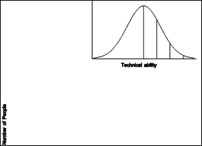 |
| Figure 1.1 Normal Distribution |
There is wide variation in people's abilities. The technical abilities required to build computer programs are, presumably, approximately normally distributed among the population (see Figure 1.1). This means that there are relatively few system gurus, as this work requires a high level of technical ability. Many more people have the technical abilities required to develop applications, and a much larger number of people are able to do local development. The vast majority of the population have technical abilities sufficient to be end users of applications.
This observation is not meant to be elitist. Of the people who have sufficient technical ability to develop applications, there are a few who have very high levels of ability in other areas not considered here, such as human factors and user interface design. It is a commonplace that most system gurus are not very good at designing useable applications.
| 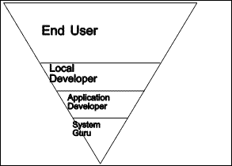 |
| Figure 1.2 Pyramid of abilities |
In Figure 1.2, we see the groups of people with differing levels of technical ability in an inverted pyramid. The levels are given in an order suggestive of the platforms on which further creations are built. The system gurus build upon the hardware and operating system platforms. Application developers provide the platforms which are further refined by local developers to enable the end users to get their work done. Nardi (1993) acknowledges the same division, describing a "pyramid of computer users: a broad base of potential end users with a tiny point of professional programmers."
The lines separating the different groups of people represent platforms. Each platform is built by people in the group below, and used by the group above the line. The system gurus exploit the raw power of the hardware and O/S platform on which they are experts. This computing power must be transmitted upwards towards the end users. This is the group, after all, who actually get the work done. Each platform encapsulates a certain amount of complexity, and building upon each successive platform should require less technical ability. Yet, at the same time, each platform should transmit as much computing power as possible.
This is the great challenge of computing science. This was the motivation behind the creation of the first assembly language, and of the first high-level programming language. At the time these languages came into being, all computer users were system gurus, and there were very few of them. The existence of these languages opened up the way for many more people to use computers.
Similarly, the development of line-oriented text editors, character-oriented text editors, and finally screen-oriented and document-oriented word processors opened up the way for even more people to use computers to get their work done. Computerized spreadsheets also played a major role in dramatically increasing the number of people who use computers.
The word processors enabled local development by providing macro facilities. Spreadsheets could be used directly by end users, but, because users could share templates they had developed, they supported local development and a thriving third party market. More strikingly, database systems actually required local development before end-use was even possible.
 |
| Figure 1.3 Program code |
While "programmers like computers because they get to program ... end users like computers because they get to get their work done" (Nardi, 1993). When the work to be accomplished is such that a computerized system can contribute, the requirement is that this power be brought to bear on the work. Of course, this will require programming. Figure 1.3 hints at the amount of code that might be required of each category of programmer in order to create a system that will help a particular user get their work done in the context of an organization. A large amount of code will be required for the operating system. More will be needed for the generic application. The organization may have provided some code locally, and the end user may in turn customize this to suit their own style of working.
We have argued so far that it is essential to consider the needs of the organization in which a software artifact will be deployed, the needs of the people who will be using it to accomplish their work, and the nature of the work product itself, at least in the special case where this product is itself a software artifact.
Too often, the user's need to program -- to customize, extend, make minor adjustments, or automate simple tasks -- is completely ignored. When a solution is offered, it is usually an arcane macro language -- a condescension -- incomplete, weak, and yet still requiring enormous skill. Inevitably, there are no design, debugging, profiling, or maintenance tools provided.
This situation is not terribly surprising if one considers the cost of providing the necessary editors, compilers, decompilers, interpreters, which have nothing to do with a product itself. Of course, the tools used by the programmer to create the product in the first place are powerful enough for the user. But they are sealed off from the finished product. The product is a dead thing expelled from these tools, but containing none of their vitality. It does what it does, and that is all. It is incapable of any flexibility or adaptability to new situations beyond that foreseen and provided for by the application programmer.
2.2.5.4 Conclusion
It is essential that the programming paradigm used allow the power of the computer to flow upwards from the machine all the way to the user's code. Yet, at the same time, there must be barriers that keep code at higher levels from breaking code at lower levels. In this dissertation, we study the task of bringing the programming task within the reach of as many people as possible. In the next section, we describe a database technology which takes a step in this direction. The desire to improve this technology, and to broaden still further the group of people who can use it, motivated the work described in this thesis.
2.2.6 The power of modeling and abstraction
The end user of section 1.1.1.2 considered his computer application to be a model of his business. Modeling is a form of abstraction, and is commonly used.
As an example of the power of modeling and abstraction, consider an example from high school algebra: the word problem, "Mary is fifteen years older than Alice today, but in ten years, she will be twice as old as Alice. How old are Mary and Alice today?" This conventional starting point hides the fact that one level of abstraction has already occurred. Mary and Alice are real people, in the real world: their hair is a certain color, they are dressed a certain way, they are in a certain mood, and so on. But these other attributes are not important in the context of determining their ages, and so are left out of the word problem.
The next stage of abstraction removes the names of the persons, the notion of years, and even the fact that they are persons. "Let x represent the age of Mary today, and y represent the age of Alice today. Then
y + 15 = x
and, ten years from now (when the ages of Mary and Alice are, respectively, x + 10 and y + 10),
x + 10 = 2 (y + 10)"
The power of this abstraction comes from our having learned a mechanical technique for solving two equations in two unknowns.
As a further abstraction, the equations can be simplified, and their coefficients placed in an augmented matrix (dropping the names of the unknowns):
which can be reduced by the totally mechanical Gaussian Elimination algorithm to produce solutions for x and y.
| 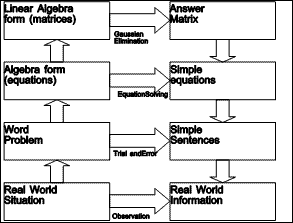 |
| Figure 1.4 Abstraction Hierarchy |
Figure 1.4 summarizes this abstraction hierarchy. Arrows pointing upwards represent the operation of abstraction, in which irrelevant information is dropped and relevant information is kept in an appropriately encoded form. Arrows moving across to the second column indicate possible activities to solve the problem. As we move up the abstraction hierarchy, the solution methods become more and more mechanical, because they require less and less real world knowledge to perform. Arrows pointing downwards represent translation from a more abstract domain to a more detailed one.
For the example problem, the answers can be elaborated to recover the information dropped at each level of abstraction, as shown in Figure 1.5.
 |
| Figure 1.5 Elaboration of answers |
It is, of course, possible to solve the problem at any of the levels of abstraction. At the real world level, one would probably simply ask Alice and Mary how old they were, or make an educated guess. At the word problem level, it is possible to try out various possible ages until we stumble upon the answer. If we are trained in forming and solving equations, then the algebra level yields the solution easily. If, however, we wish to program a computer to solve this kind of problem, it will be easier to work at the linear algebra level of abstraction: the Gaussian Elimination algorithm being considerably simpler than a symbolic equation solver.
It is important to notice that the information which is dropped while going up the abstraction hierarchy on the left must be recovered during the elaboration of the answers in the right column.
2.2.7 Spreadsheets
The computer spreadsheet is a unique example of a modeling tool designed for end users. Levy (1984) and Beyer & Holtzblatt (1994) give accounts of this invention. An application prepared using a spreadsheet is really equivalent to a BASIC program (Conrad & Jorgenson, 1986), so from a strictly technological perspective, the computer spreadsheet did not need to be invented.
It is interesting to note that even thought the computer spreadsheet is really a programming language (and environment), it has been largely neglected by the programming language literature (Casimir, 1992). Nevertheless, the spreadsheet mode of operation enhances the usability of the computer and extends its use to people who either would not wish to or would not be able to create a BASIC program for the same task (Sajaniemi & Pekkanen, 1988; Nardi & Miller, 1990; Nardi & Miller, 1991).
2.3 DataPerfect: databases for end users
DataPerfect is a system which facilitates the creation of data-oriented computer application software for specific purposes. It is designed primarily for use by people who are not programmers, but who are familiar with their own needs or those of the organization in which they work. It counts among its users professionals from the fields of dentistry, medicine, and law.
2.3.1 Innovative Features of DataPerfect
DataPerfect is a programming environment which is highly data-driven. People feel as if they have their hands on the data. As with other database systems, the user defines records consisting of a collection of fields. The innovation is that rather than requiring the user to invent a name for each field, DataPerfect allows them to lay out the fields in a two dimensional grid (called a panel) on the screen, together with descriptive background text. Then whenever a field name would normally be required, DataPerfect displays the panel and the user simply points to the desired field and selects it.
This is analogous to the way in which a computer spreadsheet operates: quantities are not named, but instead are laid out spatially along with textual labels. DataPerfect goes beyond the realm of flat file databases (such as can be easily created in spreadsheet programs). All of the records entered through a given panel are stored in a single file. There may be many indexes associated with this data, each ensuring uniqueness of records within the file, providing an ordering, and allowing any particular record to be located quickly. A comparison of DataPerfect with existing technology is found in Chapter 3.
2.3.2 Problems Encountered
Though it is relatively simple to create a data-oriented application, using DataPerfect, there is less support for understanding and modifying existing applications. Some kinds of manipulation are much easier than others. Forming a link between two panels, for example, involves four steps and requires on the order of twenty keystrokes. Yet, the activity could be expressed in a simple phrase, such as, "this field in panel one is a valid value for this other field in panel two."
DataPerfect is not readily extensible. Like most programming environments, the capabilities of the technology used to generate the product are left behind.
2.3.3 Future Vision
DataPerfect needs a programming language with language support added in such a way that its strengths and innovative features are retained. An object-oriented language is desired to provide more power and flexibility than alternative technologies.
DataPerfect must give the user powerful yet practical solutions to deal with structured data. It must be fully functional as a DBMS (see Chapter 3), yet remain simple to use; it must exhibit immediate value, yet leave procedural and aesthetic control in the hands of the user. Its users must be able to use it directly to begin managing data, and as they gain experience, discover that it has the powerful features they need to meet their growing needs. To accomplish this, it needs to provide them with both a menu-driven, point-and-shoot capability and programming language support.
It will need a complete programming environment. The following steps model the process of creating a database definition, trying it out, and delivering the result to the end user:
1. The user defines the database, by selecting from menus, indicating fields, and responding to dialogue boxes, the user specifies in a declarative way how the database is to operate.
2. DataPerfect generates the needed code, by translating the declarative information into the necessary objects (eg. files, views, fields, etc.) and procedures.
3. The user may examine the objects and procedures so created. They may modify the procedures, including the use of calls to functions written in other languages (such as C, assembly, etc.).
4. The application specified in steps (1) through (3) comes to life as DataPerfect interprets the procedures (as applied to the objects), much in the way most applications interpret their macro languages.
5. Users have the option of directing DataPerfect to produce an executable file for a completed application specified in steps (1) through (3) and tested in step (4).
The current version of DataPerfect already provides steps (1), (2), and (4). Step (3) can be approximated by running DPEXP, editing the export file (a textual description of the data-oriented application created interactively), and incorporating changes by running DPIMP, but this is not a convenient programming environment. The run-time version (DPRUN) provides the function of step (5), but without the convenience of a single executable file.
We prefer that the generated code be in an object-oriented language, and that DataPerfect provide the ability to edit, compile, decompile, link, and interpret the language. The language will feature classes, methods, inheritance of methods, and late binding. It will be possible to link functions written in other (procedural) languages with the methods.
2.4 Objectives of the TOOL project
The TOOL (a recursive acronym for TOOL Object-Oriented Language) project began as a language appropriate for creating a new version of DataPerfect, as described in the previous section.
The project's goal is the design and construction of an object-oriented database programming environment. TOOL is neither a specific data-oriented computer application program, nor is it a database management system in which such applications can be created. Rather, TOOL is a programming environment designed to be the substrate for a general purpose facility which will make it possible for non-programming specialists to create data-oriented computer application programs.
While the work described here is rather narrow in focus if viewed from the perspective of database management systems, it covers much of the breadth of computer science, ranging from sophisticated memory management, through language design and translation, to a user interface based on overlapping windows.
2.5 Summary and overview
In this chapter, we have considered computing in the context of human and social needs. Programming is a natural human activity, and programming of computers is well furnished with tools for use by professional developers. End users of computers are less fortunate. We pointed to computer spreadsheets as an appropriate tool for use by non-programmers. The DataPerfect product is similarly amenable to non-professional programmers. TOOL is our vision of a personal dynamic medium (Kay & Goldberg, 1977) consisting of a programming environment powerful enough for professional programmers, yet, we hope, inviting for end users.
Software is more than a mere application of technology: when the work that people do in an organization is computerized, the computer software used is just one aspect of a system involving the goals of the organization and the expectations and abilities of the people. We present a framework for studying the interactions among these three aspects--organizations, people, and technology--in Chapter 2. Three case studies, from actual organizations, guided a choice of requirements for TOOL.
In Chapter 3, we propose a model of information storage, and discuss existing technology in terms of our requirements. Computation as a medium for individual expression was first described by Kay (1969), one of the creators of Smalltalk. A critical review of Smalltalk in Chapter 4 reveals that it shows promise. Yet it is lacking some of the things we would wish to see in our computational medium, so we outline the evolutionary steps we set out to take in the design and implementation of the TOOL system.
A programming system of the type described includes a computational model and a language for expressing computations. Both are described in Chapter 5, which describes how objects use memory, and how the run-time system interprets computational specifications. This same chapter introduces the lexical, syntactic, and semantic aspects of the high level language. A final section considers programming environments for this language. Experience gained during the implementation of this design is given in Chapter 6.
We performed a preliminary evaluation of the TOOL system using ethnographic techniques. Users were selected from four groups of people and persuaded to examine and use the TOOL system. Those who spent enough time to understand that TOOL is more than just a programming language, but a personal medium for expressing computation, were able to use it successfully. Chapter 7 describes the evaluation process and results.
Finally, Chapter 8 summarizes the content and contributions of this dissertation, and suggests lines of future work.
Copyright © March 8, 1995 Bruce Conrad
Chapter 2: User Requirements
The purpose of this chapter is to establish a broad conceptual framework, so that author and reader may create together a more elaborate understanding of the nature of TOOL and the role it is expected to play in human endeavors. The conceptual framework consists of the philosophical and social context from which this work derives, and leads naturally to a discussion of organizations. Finally, we present the results of interviews with people responsible for the data of some real organizations.
2.1 Philosophical and Social Context
Database systems are designed and used by people functioning as individuals, generally working in groups, to achieve both personal and organizational objectives. The information held in such systems must correspond to certain realities in order to be of value. We, therefore, begin with a brief examination of the nature of reality, and a look at what it means for data to correspond to appropriate realities.
2.1.1 Ontology--what is
Ontology is concerned with the nature of that which exists or is. An ontological position is of value both because a database system is itself something which exists and because it contains information concerning things which exist.
We begin with an examination of the nature of things which exist, using Popper's (1972) categorization of existents into three worlds. Then we turn to an investigation of how these existents come into being and survive. Finally, we consider the role played by information in their creation, and continued existence.
Popper divides those things which exist into three categories, which he calls worlds.
World one is the objective world of physical reality. It is assumed to pre-exist, and to exist independently of, any sentient observer. This world provides the subject matter for the physical sciences, and contains their practitioners. These people, and indeed all of us, to one degree or another, attempt to make sense of, predict the behavior of, and control that which exists in world one.
World two is the subjective, mental world of the individual observer, created in response to his or her experience with world one. This world provides the subject matter for many of the social sciences, and contains the minds of their practitioners. One of these, the psychotherapist Kelly (1955), has proposed that the essential work of each human being is to construct a model of reality, which he or she then uses to explain, predict, and control events and objects in world one. Each model so constructed exists in world two, and each world two entity is separate and distinct, since each belongs to an individual human being. Though there is no direct access from one to another, individuals do communicate aspects of their mental worlds to each other, influencing indirectly the constructs of others. This can result in the creation of entities which transcend the individual mind.
World three is the world of independent ideas or concepts. This world provides the subject matter for the rest of the social sciences, and contains all sciences, and many other such things. World three entities, though they arise in an individual mind, have an independent existence. It is commonplace to say of such things that, "they have a life of their own." They include slogans, jingles, works of music, tribes, organizations, cultures, philosophies, and civilizations. Dawkins (1989) calls the simpler of these "memes", (rhymes with scheme) and the more substantial "meme complexes."
This classification of existents into three worlds is itself an inhabitant of world three, and is even now ensuring its continued existence by leaping from the author's mind to yours, gentle reader, via a world one artifact: this thesis, which has allowed it to travel through both time and space.
2.1.1.2 General Evolution
Regardless of the world to which it belongs, each entity comes into existence, survives for a time, and, finally, ceases to exist. Monod (1972) makes the distinction between endogony and exogenous creation -- the difference between coming into being actively by internal forces, and creation through the action of pre-existing external agents. The former has also been termed "autopoiesis" (Maturana & Varela, 1980).
 |
| Figure 2.1 Popper's three worlds |
There are existents which come into being through each of these methods in each of the three worlds. Living things in world one are endogenous, while other objects are artifacts created by living things or natural forces. Thus, world one includes human beings, musical instruments, and computers. Each of these kinds of things must exist in world one to support the existence of world two entities such as minds, music, and software (Hofstadter, 1979). The existence of human minds and artificial intelligence programs in world two provide a substrate on which world three entities can come into being.
Such world three entities can in turn, exert an extremely powerful and creative influence on both world two and world one. Thus a slogan, jingle or tune becomes a part of the personal construct in the mind of a human being. A religion may require its adherents to proselyte others, committing them to its precepts, or it may motivate the erection of great cathedrals and other monuments. A science directs the construction of enormous particle accelerators, radio telescopes, and projects artifacts far from the earth's surface and out into the solar system and beyond.
Figure 2.2 presents an analogy, due to Monod (1972), between life on a substrate of the physical world and meme complexes or "schemes" (a term suggested by Hofstadter (1985)) on a substrate of the mental world.
| 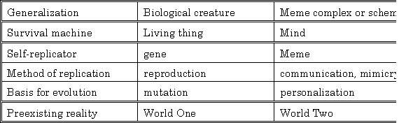 |
| Figure 2.2 Monod's analogy |
In each case, a self-replicator arises spontaneously from a pre-existing reality. Because it possesses a method for self-replication (exercised mindlessly), it exists in numerous copies. Since the method of replication is not completely accurate each copy may be slightly different. This provides a basis for evolution: errors in replication lead to differential ability to survive for individuals with certain characteristics. Those individuals which survive reproduce to make more individuals with similar characteristics. Hence their characteristics come to dominate the population of individuals.
Dawkins (1989) points out that there are two perspectives from which this natural selection can be viewed: that of the genes and that of the individual. Genes survive by coding for "survival machines" which are successful in ensuring their reproduction. For genes, in general, to survive, intelligence is in and of itself of limited value. Genes coding for insects are much more successful than those coding for intelligence.
Memes and schemes, however, require intelligent life for survival. "Just as genes propagate themselves in the gene pool by leaping from body to body via sperms or eggs, so memes propagate themselves in the meme pool by leaping from brain to brain..." (Dawkins, 1989). As our genes construct a human being for temporary survival, so successful schemes must motivate their hosts in some way, such as an appeal to altruistic tendencies (which Dawkins showed to be beneficial for the survival of genes), intrinsic rewards such as humor, and rewards which promote the survival of their hosts. The last of these is probably the most powerful.
Many schemes take the notion of survival to its logical conclusion and offer immortality. Both genes and memes are longer-lived than individual human beings, so that a human being is not a survivor to the same degree of success as a gene or a meme. This may be part of what makes an offer of immortality so irresistible. The offer can come in one of two flavors: immortality as the author or founder of a successful meme (as in leaving one's name on a scientific theory or a hospital), and literal immortality of the individual (as offered by many western religions).
Speaking of survival value, this thesis has survival value in several ways. It will contribute in a modest way to the survival of the University. It will contribute to the survival of its author (as suggested by the thinly veiled implication lurking in the disjunction "publish or perish"). Furthermore, it will motivate and enable the author to make other contributions to the survival of that grander scheme, which transcends any particular university: Higher Education.
2.1.1.3 The role of information
The information encoded by the gene is the real motor of survival, for it is not the individual molecule which survives, but rather the pattern of its nucleotides. This pattern is pure information. The possibility that this kind of information might be interpreted one day for extinct animals is a topic of current fascination (Crichton, 1990).
Survival occurs because the pattern expresses itself (through mechanisms it also encodes) by creating its survival machine. "A body is the genes' way of preserving the genes unaltered" (Dawkins, 1989).
The invention of writing has been a founding factor in the rise of each of the early great civilizations. Various degrees of information creation and transfer is required to ensure the continued existence or survival of individuals which exist. Information has been viewed by Kraft (1979) as a form of energy.
Information has long been recognized as essential in agriculture.
"Modern farming, as the author views the subject, requires varied information as well as unflagging zeal and industry. It needs the application of commercial ideas. Real success in agriculture can only be attained by keeping up with changing conditions and developing a well-balanced business programme to go with the tilling of the soil... No one appreciates more fully than he (the farmer) what a great fund of information a person must possess to be even an ordinary farmer." (Bowsfield, 1916)
In fact, now that "fewer than 2 percent of the work force [is] engaged in agriculture... knowledge-based agriculture may be the cutting edge of economic advance tomorrow" (Toffler, 1990).
2.1.2 Epistemology--knowing what is
Epistemology is the branch of philosophy which deals with knowledge and truth.
2.1.2.1 Theories of truth
Different theories of truth have been proposed and apply to entities which exist in the three worlds. The correspondence theory of truth proposes that a statement is true if and only if it corresponds to a fact in the world. This is quite sensible for statements about world one (Popper, 1982).
It is less useful for world two, however. Since a mind is commonly in receipt of contradictory or conflicting perceptions (Barwise & Perry, 1983), there would be little utility in drawing all of the logical conclusions. When reasoning from contradictory premises, pure logic requires concluding that any and all statements must be true. Instead, the coherence theory of truth (Rescher, 1982) is much more useful. This theory deals with contradictory premises by concluding something midway between the union and the intersection of the statements implied by each of the "maximally consistent subsets" of the premises.
Because of this special ability to deal with contradictions with which the mind is endowed, world three entities need only be coherent, or self-consistent, to be acceptable to potential host minds. How else could a Flat Earth Society survive? By contrast, the Sciences typically require correspondence to events in world one as well as internal consistency for survival.
2.1.2.2 Conversation theory
Pask (1976) has elaborated an applied epistemology, together with a theory of what constitutes an individual, and how an individual gains, retains, and communicates information.
In conversation theory, world two and world three entities are not distinguished, but are both referred to as P-individuals, or Psychologically characterized individuals. This is in contrast to M-individuals, or Mechanically distinguished individuals.
2.1.2.3 Individuals and societies--who knows what is
Individuals are world two entities who have knowledge of things as they are. Each possesses personal constructs describing the world in which he or she lives. This includes those entities of world three to which the person contributes or unwittingly participates in.
2.2 Organizations
Organizations are key social entities, comprised of individuals who combine their efforts and direct them towards certain goals. We then consider these goals to belong to the organization, and the organization seems to take on a life of its own.
2.2.1 Organizations as entities
 |
| Figure 2.3 Three perspectives on organizations (Scott, 1987) |
Organizations are world three entities. Scott (1987), views organizations from three perspectives: rational, natural, and open (see Figure 2.3). The study of organizations is a branch of sociology.
Organizations vary in many ways. The majority are small. Besides employing organizations, there are voluntary associations. They vary in "structural characteristics." The elements of an organization are: social structure (norms and roles), participants, goals ("conceptions of desired ends"), and technology. These elements are all influenced to one degree or another by the environment within which the organization functions.
The rational perspective emphasizes formal social structures which ensure that participants perform in such a way as to bring about the goals of the organization. In the natural perspective, organizations are viewed as having evolved rather than been created. Much of their activity is devoted to the survival of the organization itself, as opposed to achieving its professed goals. In the open perspective, organizations are viewed as acting upon and reacting to the surrounding environment. As Scott (1987) expresses it, "The ability to perpetuate one's form is the hallmark of successful adaptation."
Organizations can exhibit pathologies, including "relentlessness": "the bottom line is survival." Also, an organization can be viewed as a "corporate actor," which, like a person, can take power from other individuals. Gaines (1991) considers that organizations, like persons, are more animate than inanimate.
2.2.2 Programming and organizations
Programming is planning for action before the action is to be undertaken by some number of agents. When you are programming a processor, at some point you must get it to attend to the program. And this happens by actually going in and forcibly drawing its attention to the program by putting the address of the first instruction into its program counter. Or, an alternative is that the processor only attends to a particular location for its first instruction at the moment of power on. So the instructions are placed in a particular location and then the machine is powered on.
Contrast this to the kind of instructions that are followed by a program involving human agents. In the first place, there are multiple agents. In the second place, they are playing multiple different roles. For example, in a community college continuing education program there are the roles of administrator, staff, teachers, students, to name the principal ones, and each of these roles involves a certain part of the program. The program is not only produced as a document but it is also published and is available simultaneously to all of the participants. Each participant is expected to and expects to carry out the part of the program for which they are responsible. So that the teachers teach the classes that have been assigned to them in the program. The students each attend the classes for which they have been registered, and do the work of being a student. The staff carry out the registration role. This is slightly more complicated than the teachers or students roles and has its own written instructions which are published separately. Some of these are available in a certain form to both the students and the teachers. Others are internal business procedures and tricks and techniques that have been learned over time by the various members of the staff. The administrators have an interesting role in that not only do they carry out the program, but they also in some sense originate it in the form of deciding which classes will be conducted, in the form of recruiting the individual teachers, and also in the laying out of policies for the staff to follow.
All of this leads to an organization. And the organization of course is executing a program. We will do this, and then if the competition does that we will react in this way, or if the customers, the market, does this will react in this other way and so forth. And at the same time, the organization is creating and monitoring and continually modifying the program and this is happening at all levels of the company at strategic and at tactical levels. An organization includes unwritten rules, and these are basically the expectations that the program has of the processors in a sense. Similarly, the particular instruction set of a processor is assumed to be there by the program but is nowhere encoded in the program itself.
2.2.3 Organizations, People, and Technology
It has long been recognized that the creation of computer applications is a challenging task. Technological advancements have not always been helpful in and of themselves. This is because a successful computer application must balance three sets of concerns: besides appropriate use of available technology, it must be understandable and directly useable by people, and be compatible with the goals of the organization in which it is deployed.
| 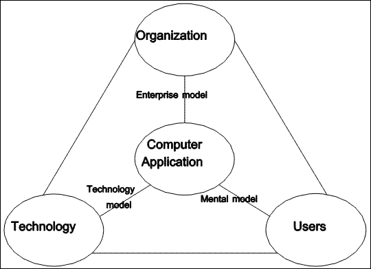 |
| Figure 2.4 Organizations, People, and Technology |
A "data-oriented application" (Moss, 1989) is one in which the storage and retrieval of data play a primordial role. Such an application effectively models a part of the organization in which it is used. Its operation must be understandable to the extent that its users can form a correct mental model of its operation. Finally its performance must be adequate.
The computer application can be viewed from the three perspectives of: organization, technology, and users (see Figure 2.4). Kieback & Mader (1990) refer to the three perspectives as "developer, user, and manager". From the perspective of the organization, it must satisfy the managerial concerns of dependability, accuracy, and robustness. The data-oriented application is just one component of a larger system consisting of people, equipment, and procedures. The user is primarily concerned with useability: whether the computer software will make their work easier and more enjoyable. From the technology perspective the major concern is performance.
Computer technology can be used effectively in assisting an organization to reach its goals and objectives. However, the technological solution is not typically available off-the-shelf. The technological solution must be custom made or crafted for each particular organization and within each organization, for each use to which the technology will be put. Traditionally, this custom work has been confined to specialists--a relatively rare resource.
This leads to two problems: first, the specialist, being a specialist, rather than a generalist, may understand the technology well, but fail to deeply understand the needs of the organization, and the front line people who will be using the custom system which is to be built. The second problem is due to scarcity. The specialist can only do one project at a time. This leads to problems such as the software crisis in which applications are queued up for development and there is a long lead time between the perceived need and the delivery of an acceptable product for use in solving a particular problem.
We wish to establish a framework for solving these problems by addressing them simultaneously. First, we focus on aspects other than the technical ones. Then we set out to design a system which can allow non-specialists to create many of the needed applications.
In this dissertation, we discuss only the most foundational part of the solution, the design of a language to be used to create a system which will then itself be used by non-specialists to describe a particular application. The description will be in a form that can be executed, so that the result will be a working data-oriented application to solve a particular business problem. At first glance, it would seem preferable to address the need for custom software directly. We believe that the fundamental nature of computing, combined with a consideration of the nature of people and their social organization, leads to a more indirect, layered approach.
2.3 Case studies
In order to better understand attitudes towards databases within organizations, I conducted interviews with managers of information systems and end users from three organizations. These included an engineering and manufacturing company (organization A), a major university (organization B), and a non-profit organization (C). The sections that follow describe each of these organizations briefly, and summarize their attitudes towards data.
2.3.1 An engineering and manufacturing company
Data-oriented needs can arise spontaneously and at any moment in the departments of the organization. When the MIS department is made aware of these needs, its personnel look for solutions. Although it is typically under pressure to deliver a solution rapidly, the MIS department takes advantage of economies of scale whenever possible by using the same tools to construct solutions, and by integration of data to solve several problems at once.
Each department has sources of information. While much of this data is essential for its operation, some may be of value mostly, or only, to some other department. So, it is important that each department work closely with the MIS department which coordinates all corporate data.
Customer information is the most valuable data asset, and, according to company A's MIS manager, crucial to business success. It is important to know who your customers are, both literally and figuratively.
The basic strategy for dealing with corporate data is to collect information locally and make it available in a distributed fashion wherever there is a legitimate need.
Company A has found it important to respect the user's choice of desktop environment, thus lowering costs and enhancing satisfaction.
The MIS dream is to be able to collect information across all platforms, storing it in a strong central database; to have high quality front end access to the data on all desktop platforms; and to have a broad range of report generating mechanisms. All departments, financial, customer support, orders, accounting, benefits, product development, etc. would then each manage their own data, while allowing MIS to provide answers with cross references in a timely manner.
2.3.2 A university
Organization B is a large university, with 27,000 full-time equivalent students (representing over thirty thousand actual people) plus about 10,000 continuing education students each year. There are over four thousand employees, including about one thousand faculty members.
University B uses about 4,500 personal computers, as well as numerous minicomputers, and a large mainframe computer with over 1,500 terminals. The MIS organization is apparently quite large, but fragmented, reflecting university politics.
Student master files and faculty files are available on faculty members' desktops, but the data is partitioned into identification data which is broadly available, and more sensitive data whose access is restricted. Local development is extremely important. The continuing education department, for example, has 3 or 4 people who have learned how to program the distributed database system in use, and the law school has its own staff of 15 to 20 programmers. There is a small service group of 3 people who help individual departments set up local databases in such a way as to make the data available throughout the campus.
The administrator of student registration data, who has a staff of fewer than a dozen, considers the data he manages to be crucial for the survival of the institution. Yet, resources are lacking. In particular, users are not able to get at the data in all of the ways they desire. His fondest dream is that policy makers at the university would consider the impact of policy changes on the data and data systems. For example, recently a decision was made to issue parking stickers to those university employees who drive university owned vehicles, rather than to the vehicles themselves, as had been the case. This led to a nightmare in the database tracking vehicles and parking permits. He cited other cases in which the organization of the data had become inconsistent with university policies, yet he lacked the resources to make the necessary changes in a timely fashion.
2.3.3 A non-profit organization
Organization C is an education providing organization with about 700,000 students around the world, 50 area offices, and about 5000 employees, of whom about 100 work in the central office. Of these, 5 work in the information services division.
Computing resources consist of personal computers; one for each central office employee, at each of about 1200 classroom buildings, and 250 to 300 in computer literacy classrooms. At the central office, the PCs are networked together, with gateways to larger networks. The IS people hope someday to have the classroom buildings, which are scattered around the world, connected to the central office via a larger network.
Software packages being used are: word processing, office automation (electronic mail, scheduling, and menus), spreadsheet, and database management. Largely because of the need for integration, IS has chosen these products from the offerings of a single company. The curriculum division also uses a document management system.
In addition to the prepackaged software, organization C uses several application programs created by the IS division. Some of the first of these are used in the field to track students and their grades and attendance. These produce summary reports for the next level of management. From there, paper reports go to the central office where the information is keyed. IS hopes that some day this flow of paper may be replaced by electronic transmission.
In the central office, each division (Auditing, Curriculum, Finance, Information Services, Personnel, Physical Facilities, Reports and Records, and Teacher Training) has its own database. The IS division is working on an executive information system which would allow top management ready access to the data from each division and from the field.
One of the key problems facing IS has been convincing top management to use the PC in its day to day work. They accomplished this by creating a database application called COED, central office electronic directory. This is an electronic version of a paper directory of employees. In paper form, this directory is typically out of date before it even goes to press. The on-line version includes such niceties as the time zone in which the employee lives, together with their local day and time. However, it does not include the employee's picture, as does the paper version.
The key technical problem facing IS is the need for shared tables. Each division's database consists of a number of related tables. Some of these tables overlap divisions, and should logically be accessible, and appear to be a part of, more than one database. The product being used to manage these databases does not currently facilitate this sharing. Although it is otherwise technically adequate, the product has an antiquated user interface, which accounts for the remaining technical problems.
Questioned about their aspirations, the IS people had no difficulty elaborating their vision. They hope for a system in which detailed data is maintained in the field, with summary data being electronically transmitted to the central office, where a multi-media integrated information system makes it readily available at every level of management.
2.4 Summary
Although manifest in different ways, these organizations share a common vision for data. They prefer to have the data collected, organized, and managed by the individual departments. Each department needs powerful tools to facilitate and automate the collecting, and to visualize and summarize the collected data. Yet, this same data needs to be available to other departments and to management, subject to access security.
The users of the information system must be able to freely access appropriate data in a way that they will find acceptable. This means that the front end tools must be available on a variety of platforms. Besides enhancing user satisfaction, this objective reduces capital expenditure, as, in all three cases, all employees have access to, and regularly use, a personal computer of some kind.
Organizations A and B have both adopted an architecture that includes a data infrastructure and a comprehensive network connecting all personal computers in the organization together. Organization C is also seriously considering this architecture. In this way, data is collected and managed in the department to which it is of most interest. Yet, because of the network, all departments have reasonable access as authorized by appropriate security rules.
The spirit of this architecture allows for central authority over data that is shared across the organization, while leaving considerable freedom of choice to the individuals and departments who collect and use the data on a day-to-day basis. The work of MIS then becomes one of providing the data infrastructure and helping individual departments to construct their own tools to collect and organize their data. In this way, the competing and seemingly contradictory objectives of the organization for control and the individual or department for flexibility can be reconciled.
2.4.1 Derived requirements
Broadly stated, the requirements which we derive from these case studies, combined with the conclusions of previous chapter, include access to shared data in a controlled manner, individual user views, and sufficient usable and accurate computational power.
For our purposes, we consider the provision of a data infrastructure to be outside the scope of our work. For our prototype, we used the DataPerfect database engine, which is sufficiently powerful to demonstrate the concepts. Likewise, we assume that user views will be provided by others, but using the computation structure which we seek to provide. Our focus is on the design and implementation of a powerful, individual extensible computational medium.
2.4.2 TOOL requirements
Based on this introductory material, we established a short list of requirements which we wish to achieve for TOOL. These follow:
2.4.2.1 Computational completeness
It must be powerful enough to satisfy professional programmers to some degree. While they may not be able to control performance characteristics, they should be able to do anything that they could do with a more general programming system. The system needs to be open, in that a programmer could add to the set of primitive operations available in the system. But this could only be done by leaving the TOOL environment and working in a more specialized model of computation.
2.4.2.2 Simplicity
The TOOL system must be simple enough to be easy to learn and usable by a broad range of people, including professional non-programmers. "It must be simple enough so that one does not have to become a systems programmer (one who understands the arcane rites) to use it" (Kay, 1969).
It should have a single, easily teachable model of computation from the user-level command language down to the details necessary to create new components. Such new objects, constructed by combining pre-existing ones, should have the same standing as built-in objects. In other words, "...it has to be able to form the abstractions in which the user deals" (Kay, 1969, emphasis in original).
The structure of the system should be layered, so that learning can progress in stages, with deeper and deeper progression possible. At each layer, there should be a small number of built-in operations (Nardi, 1993).
2.4.2.3 Prototyping methodology
The TOOL system should support a development methodology in which incremental changes are encouraged, reducing the discontinuity between change and effect.
This is related to one of the principles suggested by Nardi (1993) for systems appropriate to end user programming: with the investment of a small amount of effort, the user gets a large result.
2.4.2.4 Primitive operations
The TOOL system should be built upon a carefully selected set of primitive operations. These would be changeable by the user only with a significant shift to a more specialized model of computation.
Copyright © March 8, 1995 Bruce Conrad
Chapter 3: Existing Technology
In this chapter, we consider the role played by the computer in the storage and use of data by people and organizations. We consider the phenomenon of persistence, and sketch a basic model for information storage and transfer over time and space. We introduce the BRETAM model (Gaines, 1990) for the introduction of technology into widespread use, and review existing technology in terms of this model. Finally, we consider how well existing technology satisfies the requirements identified in the previous chapter.
3.1 Computer mediated data storage
Data is a valuable asset in most organizations. Pursuing the analogy of data as an asset, Nolan (1973) points out that this asset is typically "frozen", by being locked into particular application programs. A decade later, Martin (1983) presents a detailed plan for organizing the data of an organization into a usable form. More recently, integration of available technologies into effective use in an office environment is still considered an area of research (Pernici, 1990).
Even though data is not consumed as it is used, its use will still need to be carefully controlled and audited. The organization will need to know where it comes from, and how it is used, by whom and for what purposes. In other words, the data of an organization will itself need to become the subject of a database. This meta database is a key technical component of the solution. It is not a new concept, having been called a "data dictionary" (Gray 1978), and more recently a "knowledge dictionary" (Davis 1989, Jansen 1990).
3.2 Persistence--knowledge transfer over time and space
For information to persist, it must be represented in world one. This representation can then be replicated, interpreted, or re-presented. Replication improves the prospects for persistence by redundancy over time or space or both. Interpretation is necessary if the representation is to yield the information. Re-presentation is the simplest result of interpretation, in which the information which has been represented is simply presented again.
"Digital [representations of] information can be copied and recopied perfectly" (Rothenberg, 1995). This ought to give an advantage to this form of representation. However, replication ability does not imply ease of interpretation. Interpretation of digital representations requires not only access to a physical device capable of extracting a bit stream from a particular kind of recording medium, but, more importantly, requires knowledge of the coding scheme which was used to transform the original information into the representation. Unfortunately, "interpreting a bit stream depends on understanding its implicit structure, which cannot be explicitly represented in the stream" (Rothenberg, 1995).
In this section, we consider various means of representation and interpretation, especially as applied to the kind of data that is of importance to human organizations.
3.2.1 Origins of information and persistency
Information is generated naturally as a by-product of life processes. As a simple example, the concentration of a particular chemical in a cell. Much of it is volatile. This is because, while the information is available at a particular point in space and time, to be of any use it must be transmitted to something that cares. It must be valued. The ultimate value is survival; ultimate because only that which survives can survive (Dawkins, 1989).
Information is transmitted by messages, through some physical process. It tends to dissipate with distance and time. A spoken utterance goes out of existence at the instant it is complete (Ong, 1977). As sound waves move through space, they expand, so that the energy per volume decreases as the square of the distance. Very soon after its creation a sound is no longer discernable. Similarly, graphite marks on paper may soon be digested by bacteria or fungi, and engravings in stone can be eroded by wind and water.
Information is transmitted by changes produced in the physical world (Popper's (1972) first world). This is true whether we are speaking of transmission through time or through space. In order to survive dissipation, the message must be retransmitted or copied. In biological organisms this is eminently successful, in large part because the information encodes the construction of a vehicle to ensure the persistence of the message. This is an elegant solution which is bound to succeed, because success is its only business. In human organizations, oral histories and commonplaces (Ong, 1982) are further examples of persistence by repetition or copying. Writing is somewhat more successful, because it does not depend so much on a listener, and dissipation is much slower.
3.2.2 Properties of persistent information
Information can be encoded in bit strings. A persistent information store is a device which, when presented with a bit string, modifies itself in some way so that at a later time it will produce the same bit string on demand. It must be accurate, allowing no changes in the stored bit string as time passes. The mechanism used to accomplish this does not have to be understood in order for it to be useful. In other words, it can be considered a black box.
3.2.2.1 Information retrieval
Information stores can be classified by considering the nature of retrieval requests. What information must be presented to the store in order for it to return a desired bit string?
One possibility is what is known as a "surrogate" (Hughes, 1991). A surrogate is a unique identifier, generated by the information store as the result of a storage request. Like the key to a rented locker, it becomes available as soon as an item has been consigned to storage, and must be presented at the later time when the item is required.
Another option is that a part of the stored information may be presented to the information store. In response, the store will return the entire stored bit string. This can be accomplished by certain kinds of neural nets, and is a characteristic of text retrieval systems. Which part of the stored bit string must be presented, and how much of it is required may depend on the design of the information store.
It may be that as a part of the design of the information store, a particular portion of stored bit strings is designated as a key, and only this portion is required to retrieve the entire string.
To retrieve a stored message, something must be known about it. This may be a surrogate, some salient attribute, or some portion of its content.
Information storage is really just a coding and compression situation. A storer gives the black box a message and receives another message in response. This is presumably shorter than the stored message or nothing is gained. Then the set of shorter messages, together with the black box allows the generation of stored messages on demand.
If n is the number of distinct messages to be stored, the size of the handle must be at least log2n bits. The handles need not be extremely large: 30 bits can uniquely identify over a billion objects. A library call number is much shorter than a typical book.
The simplest imaginable (vacuous) information store is one which requires the entire desired bit string as a key, and returns it as the requested information.
An information store may respond destructively or nondestructively to a retrieval request. In the former case, a bit string can only be retrieved once; it will no longer be stored. In the latter, more usual, case a copy of the bit string may be delivered more than once.
3.2.2.2 Uniqueness constraints
What does an information store do when presented a bit string for storage which turns out to be identical with one already being stored? This may not be allowed. The two bit strings may both be stored, but essentially indistinguishable from each other, or they may be assigned distinct surrogates.
3.2.2.3 Indexing
Can similar stored bit strings be examined in an arbitrary order? They may be available in the order they were stored. They may be available according to some ordering based on their surrogates, or according to various orderings of their content.
3.2.2.4 Classification
The bit strings held by an information store may be classified into categories. Uniqueness may be enforced within each category but not between categories. Indexing may be provided only within a category.
3.2.2.5 Relationships
Can one bit string contain a reference to another bit string in the same information store? This cannot be forbidden so long as some kind of content addressing is available. In fact, since an arbitrary external address or surrogate can itself be encoded as a bit string, such internal cross referencing cannot be forbidden at all.
The information store would do well to manage this phenomenon if possible, to ensure that a bit string to which there exists a reference does in fact exist within the store.
3.2.3 A Model of Information Storage
In this section, we consider what it means for information to be persistent. What kinds of work must be done to create, modify, process, and retrieve data? The components of an information storage model are: one or more storers (agents which cause a bit string to be consigned to storage), one or more requesters (agents which retrieve bit strings from the information store), and the store itself. The information store must accept a bit string from a storer at one point in time, and return it to a requester at a later time.
In order to formulate a request, a requestor must hold the necessary information. How is this information passed from the storer to the requester? These two may be the same person, in which case human memory (itself an information store) is relied upon. Or a smaller and more manageable information store may be used to store the surrogate (such as a notebook).
An information store may be used in various manners. In a browsing model, a requester may simply examine various bit strings from the store until an interesting one is discovered, relying on serendipity. In a custodial model, the requester needs to present the surrogate, key, or some portion of a desired bit string, whereupon the information store produces it. In an indexed model, the information store is prepared to produce a stored bit string upon presentation of any one (or more) of a number of predetermined portions. In an expert model, the information storage system has reasoned about the information it contains, and is prepared to produce an appropriate bit string when presented with a problem which is within its domain of competence (Dik, 1986). In an agent model, the information storage system is actively acquiring information from its environment, and organizing it by framing hypotheses and testing them. In this model it functions much like a scientist (Shaw, 1980).
The kind of information which must be given the information store in order to retrieve a bit string of interest varies according to the kind of model. While browsing, the requester is using the policy of "I'll know it when I see it". In the custodian model, the requester must know the appropriate incantation. In the indexed model, the requester must be aware of one or more salient attributes of the desired bit string. An expert or an agent will respond to a question. An agent will respond to a statement which it finds interesting.
As an example, we will consider a library as an information store, with each book being considered a single bit string. In the browsing model, the requester simple moves along the shelves pulling interesting looking books and examining them. In custodial mode, the requester locates a book given its call number. In the indexed model, the requester may consult the card catalog. A small town library may not possess a card catalog, and the requester may need to turn to expert model and consult the librarian. In the agent model, the requester may engage the services of a research assistant.
3.2.4 Conclusion
Information storage is realized by modification of some part of the physical world. The first world supports the third world via the actions of second world agents (Popper, 1972). The modification must survive through time and/or space. A requester who is able to decode the modification to recover the message is required. The requester must care enough about the information to decode it. Again, the biological world is particularly elegant here; the decoding mechanism is virtually universal to all living things.
3.3 BRETAM: from Invention to Products
Gaines (1990) has proposed a model for the introduction of innovation into the marketplace. In this model, a technology progresses through six phases, each requiring about eight years. First comes a breakthrough (B), involving creative ideas produced in a trial and error environment. Next, the ideas are replicated (R) and validated by other researchers. There follows a period of empiricism (E) in which the experience gained with the ideas results in design rules. This leads to the development of underlying theories (T), which eventually are applied in a more automatic way (A). Finally, the technology reaches maturity (M) and is amenable to mass production.
According to the BRETAM model, product innovation occurs at the boundary between empiricism and theory, where experience with one technology is supported by the theory of previous technologies. The period from 1988 to 1996 is the time frame during which one might expect the development of a product incorporating experimental uses of inductive inference (now in phase E) into a knowledge-based system (T). Such a product would benefit from a state of the art human-computer interface, and would be based on the mature technologies of problem-oriented languages and virtual machine architecture.
3.3.1 Smalltalk and the BRETAM model
As the next chapter indicates, Smalltalk is based upon a virtual machine, and implements a problem-oriented language in which an innovative human-computer interface was developed. It is also a good substrate to support the development of knowledge-based systems. Certainly, objects closely resemble frames, a standard knowledge representation device (Minsky, 1975). Also, the inheritance hierarchy is a way of encoding a certain kind of knowledge. Indeed Smalltalk has been used to create an expert system shell.
3.3.2 Relational databases and the BRETAM model
The relational database breakthrough occurred in the 1960's (Childs, 1968; Codd, 1970). A large body of theory was available by the 1980's (Maier, 1983). Based on the notion of storing information about the structure of a database in the database itself (Mark, 1985; Mark & Roussopoulos, 1986; Davis, 1989) a number of methodologies have been created to partially automate the specification of database structure. These design procedures are each based on models powerful enough to model the model itself (Nijssen & Halpin, 1989; Brough, 1992). This corresponds to the start of the automation phase of the BRETAM model, in which "theoretical models are made operational" (Gaines, 1990).
Relational database systems do not, however, meet our requirement of simple database design by novice computer users.
3.4 A Review of Existing Technology
A wide range of technology is currently being deployed to manage data in organizations. On one dimension, these range from simple flat-file systems to free structured systems such as Lotus' Agenda. Most of the technology is record-based. Despite its limitations (Kent, 1979), relational database technology is capable of meeting our requirements. This is particularly true if variable length fields, and multimedia field types are incorporated into the model.
3.4.1 Flat files
Judging from the commercial success of products such as dBase, a lot of mileage can be achieved using only flat files. The only technical requirement is random access to the file. The human interface requirement is achieved by a simple facility for defining the fields of each record in the file. Each record has an identical layout, with each field having a fixed offset within the record.
External indexes are added for two reasons: to allow associative addressing, and to impose an ordering on the records.
3.4.2 Relational databases
Relational databases are rapidly becoming the standard solution to the database needs of organizations. They can indeed be deployed as a virtual enterprise model, even in the case of very large organizations.
The standard interface is some version of SQL (Standard Query Language). This language was intended for use in formulating ad hoc queries, by people who are not database professionals. Simpler, graphically oriented or menu-driven front ends are widely available for SQL, showing that the language itself is not perceived to be directly useable by a broad population.
3.4.3 Computer programming languages
When there is no existing technological solution to an organization's data needs, it is always possible to use a computer programming language to construct a solution (assuming that the problem is tractable). Again, this is a domain for specialists.
| 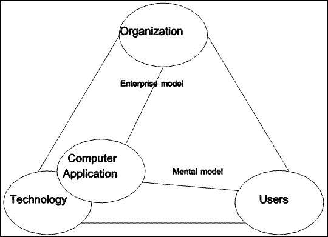 |
| Figure 3.1 Creation of a computer application |
In Figure 3.1, the data-oriented computer application is depicted as emerging from available technology, in this case, DataPerfect. This creation is viewed a being primarily a technological activity, yet the importance of user and organization concerns is not neglected.
3.5 Meeting User Requirements
Virtually all of the technological solutions available today require specialized practitioners. While a few users are able to train themselves to use whatever facilities are available to them, most must queue up requests for their MIS department, leading to the expected bottleneck, and resulting in a perceived software crisis. As Nardi (1993) points out, the resulting backlog does not include "applications that people ... might want if they were not working in an environment of such overwhelmingly unsatisfied demand."
 |
| Figure 3.2 Chain of technical products |
What is needed is a technology whose generational power will remain in the application, allowing the construction of a chain of technical products (see Figure 3.2). This is discussed in (Conrad & Bastian, 1991). By supplying a technology with a small number of well-chosen primitive operations, a simple computational model, and extension ability, we hope to enable people to satisfy a larger part of the need for end user applications than has been possible with existing technology.
Our hope is that computer mediated data might become a new kind of medium for the custodians and users of an organization's data. In the next chapter, we consider Smalltalk, which was introduced as a personal, dynamic media (Kay & Goldberg, 1977), as a potential solution to this need.
Copyright © March 8, 1995 Bruce Conrad
Chapter 4: A Dissection of Smalltalk
Smalltalk is the central example of the current state of the art in object-oriented systems. It was also designed as a system to bring programming power to the end user (Kay, 1969; Kay 1993b). This chapter presents a detailed technical description, and a critical dissection of Smalltalk.
The description of Smalltalk includes its fundamental concepts: a memory model, execution system, language syntax, and programming environment. The salient features of this technology are categorized, with respect to our requirements for an end user database system, as essential or inessential. Finally, we suggest two additional features our requirements dictate.
4.1 Description of Smalltalk
The original idea behind Smalltalk was to provide a personal programming environment for use by anyone, especially children (Kay, 1977). More than merely a programming language, it was intended as a new medium of expression, a "personal dynamic medium" (Kay & Goldberg, 1977).
The language is based on a small number of principles (Ingalls, 1981), yet these are very powerful. The system itself is almost entirely crafted using the language - certainly it can be entirely described by programs in the language, as demonstrated by Goldberg and Robson (1983).
Smalltalk, as a system, is a combination of several aspects (Rentsch 1982): a virtual machine; a language syntax and message passing semantics; a library of classes, methods, and other initial objects; a programming environment. This section will begin with a discussion of fundamental concepts, followed by an examination of these aspects from a computer science perspective.
4.1.1 Smalltalk Concepts
Smalltalk is the language, execution system, and programming environment for a personal interactive medium proposed nearly a decade before the advent of the personal computer (Kay 1969). Because it was intended for use by children, as well as adults, the language is based on a very small number of concepts. As a result, it is expected that the language will be easy to learn. Of course, a great deal of complexity can arise from even a very small number of concepts, as evidenced by the axiomatic systems of mathematics. Spencer-Brown (1969), for example, has shown that all of Boolean logic is inherent in the single concept of distinction. In fact, the Smalltalk language is sufficiently powerful that it is possible to describe the entire execution system using Smalltalk itself (Goldberg & Robson, 1983).
The basic concepts of Smalltalk are those of an object and messages to which an object will respond. An object can retain state information from one message to the next. When it receives a message, an object executes an associated method which computes the value (also an object) to be returned in response to the message.
From this simple starting point, the Smalltalk idea could have evolved in at least two directions, as suggested by the classification of Wegner (1990). These have to do with how methods are organized with respect to objects. Smalltalk recognizes that objects naturally fall into categories, called classes. The class groups the methods applicable to all of the objects in a single category. Another possibility is to have each object maintain its own private collection of methods. This is the approach taken by the language self (Ungar & Smith, 1987). More recently, the designers of self recognized that many objects share the same methods, and have introduced "maps" (Chambers, Ungar & Lee 1989) as an implementation technique to group the common methods.
A class in Smalltalk specifies both the internal structure of the objects belonging to it, and the methods which those objects can execute in response to messages. An object is then an instance of a class, and is very much like a frame (Minsky, 1975), having slots which can each contain a value. The number and names of the slots are specified by the class of which the object is an instance. The value contained in each slot must itself be an object (actually, as we shall see, a slot contains a reference to an object).
Smalltalk classes are organized into an inheritance hierarchy. Each class inherits the structure and methods of its superclass, and may add additional slots and methods. Methods, but not slots, may be replaced in the subclass by a new method of the same name, which is said to over-ride the inherited method. At the root of the class hierarchy is the class named Object.
Certain classes are essential for the execution of Smalltalk programs, while others are needed only for the implementation of its programming environment or for certain application programs. Essential classes include the class of all classes, Class, the root of the class hierarchy, Object, and the class of methods, CompiledMethod. Other essential classes describe objects which could be considered built-in data types: Character, String, and Number with its subclasses. Also needed are a class of message names, Symbol, and a class of global variables, Association. Global variables are instances of Association and have two slots, one for the name of the variable, and one for its value.
These essential classes, together with their methods and some other objects, for an initial set of objects. The representations of these initial objects are stored in a file called the image, which is loaded into memory before execution can begin. The user programs by adding to or modifying objects in the image.
4.1.2 The Smalltalk Memory Model
The objects of a Smalltalk system can be viewed as forming a graph, with each object being a node, and each reference in an object slot being a directed edge to another object. Such a structure would be of little use if it were not grounded. In Smalltalk this is done by implementing small integers directly. If an object contains a small integer in one of its slots, in place of the usual object reference it will have the small integer itself. In practice, a slot will contain a bit pattern of fixed width used to represent an object reference. A bit pattern of width k represents 2k distinct values. In most Smalltalk-80 implementations, half of the available values are used to represent small integers directly, the other half being interpreted as object references. Thus, one bit of each object reference serves to distinguish a (ground) integer representation from a true object reference. Almes, Borning and Messinger (1983) propose extending this idea to include a direct representation of other kinds of objects.
In Smalltalk a class is also an object. This is not inevitable: in C++ (Wiener & Pinson, 1988), for example, a class is not an object at run-time. Each object (except small integers) also has a slot containing a reference to the class of which it is an instance.
Besides its named slots, a Smalltalk object can contain an array of references to other objects or an array of bytes. The methods for such an object can refer to the items in its array, so that these items can be sent messages. In the case of a byte array, an item from the array is converted into a small integer or a character object before being sent the message.
This completes the computer science view of Smalltalk as a way of representing and organizing data in memory. The data are organized in a graph whose nodes are objects, with edges being references to other objects. Some of the objects should be considered virtual objects, as they do not occupy memory themselves, but are represented directly in the bit pattern of the object reference. MacLennan (1982) has argued that directly represented objects should be thought of as values rather than objects.
4.1.3 The Smalltalk Execution System
The execution system consists of a byte code interpreter, a set of primitive routines, and a memory management system. Primitives are provided for operations which could not be specified by the Smalltalk language or which would be performed more efficiently by machine code on the host system. The memory management system takes care of allocating memory for new objects and freeing memory occupied by objects which are no longer needed. The byte code interpreter executes methods in response to message sends.
4.1.3.1 The byte code interpreter
Execution of a Smalltalk system begins when the byte code interpreter sends a particular message to a particular object. A message send is very similar to a function call in a procedural language. It consists of two phases: method lookup and method execution.
Method lookup is much like linking in a procedural language, except that it occurs at run time, and is often called dynamic linking or late binding. The interpreter examines the class of the receiver object to find a method whose name matches the message name. If this class does not provide a method of that name, the interpreter repeats the process with the immediate superclass of the receiver's class, and so on, until a matching method is found. This is the method which will be executed.
It is possible that no matching method exists. This situation is like an error during linking in a procedural language. Unlike a procedural language, for which execution cannot even begin in the presence of link error, the Smalltalk interpreter will continue execution. This is done by replacing the failed message send with a send of the special message named doesNotUnderstand: to the same receiver with the name of the failed message as its argument. Among the initial objects is the class named Object, which is the ultimate superclass, and does contain a method for this message. The method causes the end user to be notified of the problem.
The method located in the lookup phase is an object consisting of an array of bytes and references to other objects that will be needed during its execution. In procedural language terms, the array of bytes is like machine code for the Smalltalk virtual machine, and the method is the result of the compilation of Smalltalk source code. The byte code interpreter implements a pseudo processor, a stack machine, which executes the Smalltalk byte code instruction set.
The byte codes can be grouped into four major categories according to their function: identifying specific objects, sending a message, assigning a new object to a slot of the receiver or to a global variable, and controlling the flow of execution.
A byte code which identifies a specific object pushes that object onto the run-time stack. Objects which can be identified include the receiver, the value of a global variable, the value of a slot in the receiver, a formal argument, the value of a method temporary variable, and various constants. Constants include numbers, characters, message names, strings, arrays of constants, the undefined object nil, and the Boolean values true and false.
With several objects on the stack, it becomes possible to perform a message send. A message send byte code directs the interpreter to consider the last few objects on the stack as a message receiver and some arguments. The byte code also provides the name of the message. The interpreter will then interrupt the execution of the current method, and perform the method lookup and execution of the message send described by the byte code. Ultimately, the called method will finish its execution and return, having removed its receiver and arguments from the stack and replaced them with the object it is returning.
A byte code which assigns a new value to a receiver slot or to a global variable pops an object from the stack and puts it in place of the object currently occupying the slot.
Control of the flow of execution is achieved by byte codes which cause the top object on the stack to be returned from the current method as its result, and byte codes which direct the interpreter to continue execution at a different point in the array of byte codes. The latter category of byte codes are like jump instructions in a machine language, or goto in a higher level language.
4.1.3.2 The primitive routines
In addition to an array of byte codes, a method may refer to a primitive routine. These routines are built into the byte code interpreter and perform some actions directly in the host system which is executing the interpreter. If the routine is unable to complete successfully, the primitive fails, and the interpreter executes the byte codes of the method. If the primitive succeeds, the interpreter performs the necessary actions without interpreting the byte codes and returns an object to the sending method.
Primitive routines are required for actions on the host system, such as writing to the screen, obtaining input from keyboard and mouse, and reading and writing files. Other primitive routines are present for run time efficiency and perform actions which are needed frequently, but which could otherwise be specified in the Smalltalk language.
4.1.3.3 Memory management
Smalltalk classes can be sent the message new. In response, they return a new instance of themselves, whose slots are each initialized to refer to the special object nil. The new object requires a certain amount of memory, which is provided by the memory management component of the execution system. There is no explicit message which can cause an object to go out of existence. Instead, the memory management component provides a garbage collection service. When there are no longer any other objects referring to an object, that object is removed from memory and the space it occupied is then made available for allocation to new objects.
4.1.4 The Smalltalk Language Syntax
Like the entire Smalltalk system, the syntax of the language itself is based on a small number of concepts. The basic unit is the message send. A message send must identify the receiver of the message, the name of the message, and the argument objects. A message send itself computes a single object, which is the result of executing the corresponding method.
Every operation in Smalltalk is a message send. At the simplest level, this includes arithmetic expressions. For example, to compute 2 + 3, 2 would be identified as the receiver, and would be sent the message "+" with 3 as an argument. The method corresponding to "+" for integers would be executed for the receiver 2, and this method would return the object 5 as the result of the message send.
4.1.4.1 Message sends
Smalltalk uses an infix notation for message sends, in which the message name is broken into one or more parts which separate the receiver and arguments from one another. Message sends can be nested. That is, a message send can be used to compute the receiver object or one of the argument objects for another (outer) send.
Message sends must be grounded. That is, at some point the receiver and arguments of a message send must be something other than the result of other message sends. These could be initial objects or integers. The lexemes which identify objects include: literal constants, instance variables, formal arguments, method temporary variables, global variables, and pseudo variables.
Message names are also called selectors, and are of three kinds: unary selectors, binary selectors, and keyword selectors. Lexically, a unary selector looks like an identifier. A binary selector is one or two special characters. A keyword selector is one or more keywords, each of which is an identifier immediately followed by a colon. Examples of selectors (two each of unary, binary, and keyword selectors): x, printString, +, //, at:, and at:put:. A unary selector requires no arguments, a binary selector requires a single argument, and a keyword selector requires as many arguments as it has keywords. For the sample selectors shown above, the number of arguments required are respectively, 0, 0, 1, 1, 1, and 2.
In a Smalltalk expression, unary messages are sent first, then messages with binary selectors, and finally keyword messages. Within each category of selectors, messages are sent in a left-to-right order. For example, in the following expression
Rectangle new
origin: self + a1 origin - 1 extent: extent.
the selectors (shaded) are: new, origin:extent:, +, origin, and -. The corresponding messages will be sent in the order: new, origin (unary selectors, left-to-right); +, - (binary selectors, left-to-right); and, finally, origin:extent: (keyword selector).
Parentheses can be used as needed to alter the order in which the messages are sent. The previous example, fully parenthesized would look like
(Rectangle new)
origin: ((self + (a1 origin)) - 1) extent: extent.
This expression includes references to a global variable, Rectangle, a pseudo variable, self, a formal argument, a1, a small integer, 1, and a slot of the receiver, extent.
4.1.4.2 Control constructs
Control constructs are also message sends. For example, a conditional would look like
<Boolean expression> ifTrue: <block of statements>
in which the receiver of the ifTrue: message is a Boolean object, either true, an instance (the only one, in fact) of the class True, or false, the instance of the class False. The argument is a block of statements. The method for ifTrue: in the True class will cause the execution of its argument, the block of statements. The method of the same name in the False class will do nothing, but just return nil.
As another example, a loop would look like
<block one> whileTrue: <block two>
A block of statements is an object as well; it is a group of statements whose execution is deferred until the block is sent the value message. The whileTrue: method for a block causes the block itself to be evaluated. If the result is the object true, then the argument (block two) is evaluated and the method ends with a recursive call to itself. If the result is not true, the method just returns. This way of implementing a while-loop thus matches the axiomatic semantics of MacLennan (1972).
Iteration is thus implemented by recursion, and involves a new block in each execution of the whileTrue: method. There is little wonder then that block allocations account for more than 80% of object allocations (Baden, 1983; Falcone, 1983).
As a specific example, consider the method for whileTrue: in the class of blocks:
whileTrue: aBlock
self value
ifTrue: [
aBlock value.
self whileTrue: aBlock]
The first line identifies the method as corresponding to the message whileTrue: and names the formal argument.
The remainder of the method consists of two nested message sends, named value and ifTrue:. The receiver of the ifTrue: message is computed by the message send self value. The receiver of this message is identified by the pseudo variable self which refers to the (block) object which received the whileTrue: message. The object returned by the self value message is expected to be one of the Boolean objects which will serve as the receiver of ifTrue:.
The argument of the ifTrue: message is a block, which contains two message sends. The period between them indicates that the object resulting from the aBlock value message send is not needed and can be dropped. The second message send is the recursive call which implements the iteration.
4.1.5 The Smalltalk Programming Environment
The Smalltalk programming environment is interactive (Goldberg, 1984), integrated (LaLonde & Pugh, 1990), mode-less (Tesler, 1981), and promotes what has been termed "fearless programming" (Diederich & Milton, 1987). It is based on multiple, overlapping windows (LaLonde & Pugh, 1991), and includes "browsers" which allow the programmer easy access to various parts of the system. There are browsers for source code, global variables, the internal state of objects, and even stack frames with their message sends, arguments, and temporary values. The environment is certainly one of the major factors responsible for the increased level of programmer productivity claimed for Smalltalk.
The environment is implemented entirely in Smalltalk, and so is extensible by the user. Its major advantages stem from the ability to inspect the state of any object, incremental compilation, and a powerful debugging utility. Together these allow a programming style particularly well-suited to rapid prototyping.
4.2 A Critique of Smalltalk
Smalltalk requires adaptation if it is to be used for the production of application programs (Wirfs-Brock & Wilkerson, 1988), and it "does not meet the requirements for a database system" (Maier & Stein, 1987). This section considers those features of Smalltalk which we wish to retain, those which we wish to remove, and additional features that will be required to produce a system for rapidly producing application programs which interact with databases.
Unlike the Deltatalk proposal (Borning & O'Shea, 1987), which also examines Smalltalk in the programming language design space, we are willing to consider some significant changes, and are concerned with issues other than learnability and usability. We identify several aspects of Smalltalk and for each explain why it contributes or detracts from our requirements for a data-oriented application creation system.
4.2.1 Essential Features of Smalltalk
The first requirement of an object-oriented database is that it support "a core object-oriented data model" (Kim, 1990). Smalltalk offers a mature technology which is a logical starting point in the design of an object-oriented database language (Maier & Stein, 1987).
4.2.1.1 Modeling with objects
Each real-world entity is modeled by an object. The model is an abstraction, which maintains the state of the real-world object, and implements its behavior in cooperation with the other objects of the database and application programs.
The result of a database query could be an object which can be directly handled by the programming language; there would be no necessity for complex mechanisms to embed query language statements into a conventional programming language, such as those described in (Ullman, 1988, pp. 231-234).
4.2.1.2 Uniformity of representation
In Smalltalk, everything is an object, including the computational entities of classes and methods. Every object is self-defining, in the sense that it contains a reference to the class which defines its structure and behavior. Classes and metaclasses are themselves objects (Cointe, 1987). This means that they can be created dynamically to describe new sources of data, which is something we will require in the design of the database access portion of the system.
4.2.1.3 Automatic memory management
Memory is allocated whenever a new object is created (when its class is sent the message new), and must be deallocated automatically as soon as there are no references to the object. Object-oriented systems which do not have automatic memory deallocation (often called garbage collection) present serious difficulties to their programmers. C++, for instance, suffers from a problem known as memory leak, which occurs when a programmer neglects to deallocate storage in an object destructor. This and other problems (Sakkinen, 1988) led us to prefer Smalltalk over C++ as a starting point for our system.
However, garbage collection can be a source of inefficiency or intolerable delays at the user interface. It is thus necessary to pay serious attention to efficient garbage collection in the design and implementation of the run-time system (Almes, Borning & Messinger, 1983).
4.2.1.4 Polymorphism and late binding
Polymorphism and its companion, late binding, are important both in the production of prototypes and in the maintenance of completed applications.
Wiener & Pinson (1988) give a very convincing example which shows both a traditional and an object-oriented implementation of a heterogeneous linked list. The maintenance problem involves the addition of a new type of object to be handled by the linked list. In the object-oriented solution, this requires only the definition of a new class, together with methods implementing the behavior required of a linked list node. By contrast, the solution in a traditional language requires modification of every program that deals with the linked list.
Another consequence of late binding is the possibility of a run-time error occurring because of an unexpected receiver for a message send. When this happens, the run-time system sends a standard message (doesNotUnderstand:) to the receiver, and a debugger is opened on the stack frame. This can be very valuable during the testing of an application, when it is usually easy to find the source of the problem.
However, it is reasonable to ask whether it is responsible to "deliver a product in which 'message not understood' can occur" (Palsberg & Schwartzbach, 1991a). We believe that this is no more serious that any other run-time error which might occur in a delivered application, and that it is no more likely to occur than any other such error in a well-tested product.
Proponents of static type checking argue that, given enough information, the compiler can catch most of these errors at compile time, resulting in a more reliable product (Meyer, 1988). We grant that this is true, but do not wish to require programmers in our system to provide all of the type information which this necessitates. As an alternative, we hope that type inferencing might provide many of the advantages of static typing, without requiring explicit type information to be present in the source code (Conrad 1991). This capability has been available in functional programming languages for some time (Milner, 1978), and recent progress has been reported in achieving this goal for small object-oriented languages as well (Hense, 1990; Palsberg & Schwartzbach, 1991b).
The availability of a method like doesNotUnderstand: for dealing with failure of the late binding mechanism has some useful applications, such as forwarding messages to an instance variable.
4.2.1.5 Syntax of message send
We believe that the comb syntax used by Smalltalk, in which the name of a message is distributed between its arguments, is a desirable feature. It is usually easy (in English, at least) to create a message name which is directly readable, typically with a verb before the first argument, and prepositions introducing remaining arguments.
For example, the message send
var copyFrom: 10 to: 15
is more expressive of the intent of the programmer than a notation such as
substring(var,10,15)
where it is not obvious whether the argument 15 is the length of the desired substring or the character position at which the substring is to end.
However, the comb syntax is less expressive in the case of control constructs, where the receiver (say, a Boolean expression) might be very long and involved. It would be better for a reader of the program to be notified up front of an iterative or alternative control construct. This issue is dealt with in Chapter 5.
4.2.1.6 Simple precedence rules
There is no complicated list of precedence rules for Smalltalk operators. Instead, messages are sent in a simple, left-to-right, order within each of the three categories of selector. This allows some commonly occurring expressions to be written without parentheses. For example:
number - 1 // 80 + 1
would correctly convert a character number into the row on which it would be displayed on an eighty column screen.
A disadvantage, for those who have grasped the usual rules of precedence in arithmetic, is that multiplication and division do not necessarily take precedence over addition and subtraction. However, professional programmers have to learn different precedence rules anyway (for example, in APL), and we prefer our language to be as simple as possible for the end user to learn.
4.2.1.7 User-defined control structures
Smalltalk blocks, which are much like closures in functional languages, allow the user to define control structures. They can be used to create generators, mapping functions (LaLonde & Pugh, 1990), a switch or case statement (Budd, 1987), and other useful constructs. We believe that this is a valuable contribution of Smalltalk, which, incidentally, gives evidence of the contributions of Lisp and other functional languages (Kay, 1993b).
4.2.1.8 Incremental compilation
Rapid prototyping is possible in large part because of incremental compilation of methods in the integrated programming environment. The programmer makes changes to a method, compiles the new method, and can immediately try it out. This is a key feature of Smalltalk, which we wish to retain in our design.
In fact, we wish to make this aspect of the programming environment available to users of our applications, and allow them to make it available to their users, and so on. This results in a seamless programming language and environment across all the levels of application development (Conrad & Bastian, 1991).
4.2.2 Inessential Features of Smalltalk
There are some major difficulties with the use of Smalltalk for the creation and delivery of application software. A primary difficulty is inadequate performance. Others include unnecessary complexity, and insecurities (Conrad & Bastian, 1991). It is relatively easy for a user to inadvertently crash the Smalltalk system while it is running (Udell, 1990).
Similar concerns are expressed by Wirfs-Brock & Wilkerson (1988). They enumerate several drawbacks of Smalltalk-80: every part of the system is available for use or modification, there is confusion between the language definition and the implementation, it is difficult to learn, and exhibits poor performance.
4.2.2.1 The metaclass structure
While earlier versions of Smalltalk had a single metaclass, the class named Class, Smalltalk-80 defines a metaclass for each class (Goldberg & Robson, 1983). The reason for the introduction of this complex structure is so that classes can have different instance creation methods, so that their instances do not have to have uninitialized instance variables (containing nil).
The notion of metaclass is very difficult for novices to learn (Wirfs-Brocks & Wilkerson, 1988). Borning and O'Shea (1987) identify metaclasses "as the most significant barrier to learnability by both students and teachers".
A simple class hierarchy, involving three number classes and the class named Object, requires a total of twelve additional classes in Smalltalk-80 (Goldberg & Robson, 1983, Figure 16.5, p. 272). We believe that there is a better solution to the problem the Smalltalk metaclass structure was intended to solve. This alternate solution, which reduces the number of additional classes needed from twelve to one (the class named Class), will be described in Chapter 5.
4.2.2.2 The image
In Smalltalk, all of the objects (including classes and methods) must be present in memory for the system to run. Changes made while running Smalltalk modify the memory, and upon exiting become saved in an image file, which is a snapshot of the memory. This is undesirable, because the image file is very large. Safe program development requires sufficient disk space for several versions of the image. Furthermore, main memory in the computer must be large enough to hold the entire image. A virtual memory alternative is described in Chapter 5.
Because the image contains all of the code for the programming environment itself, it is difficult to deliver an application which does not require this code. There is no easy way to remove from a working Smalltalk image everything except the code which must be delivered in a product.
4.2.2.3 Purity of the message sending paradigm
Control structures for alternation and iteration should be built into the language so that these do not have to be implemented using recursion.
In practical implementations of Smalltalk, control structures are implemented in a more conventional way, using conditional jump instructions in the byte code stream. The implementation is thus not faithful to the conceptual view of the execution system. This can lead to difficulty in understanding an implementation, since changing methods such as ifTrue: and whileTrue: has no effect on the system (Conrad & Bastian, 1991).
4.2.2.4 Multiple inheritance
Multiple inheritance is available in Smalltalk, as an experimental feature (Borning & Ingalls, 1982). "Multiple inheritance is a thorny issue [and] there is no consensus in the object-oriented programming community regarding what sort of multiple inheritance, if any, should be supported." (Borning & O'Shea, 1987).
Brough and Conrad (1993) point out that inheritance is often used, even by experts, where aggregation is more appropriate. We have found no compelling reason to use this feature, so it is not a part of the design of our system. This is not to claim that it is of no interest, but merely that since it interferes with simplicity, we have elected to forego multiple inheritance.
A similar stance was taken by the designers of the BETA programming language: "BETA does not have multiple inheritance, due to the lack of a profound theoretical understanding, and also because the current proposals seem technically very complicated" (Madsen & Möller-Pedersen, 1991).
4.2.2.5 Context objects
Blocks operate within the context of a particular method invocation, and thus require the creation of context objects. This becomes unnecessary if we "do not allow a block to survive the execution of its defining method" (Conrad, 1990). Eliminating context objects does remove the possibility of adding a facility like backtracking to Smalltalk, as proposed by LaLonde and Van Gulik (1988). However, we have been able to express algorithms involving backtracking, including the examples in (LaLonde & Van Gulik, 1988), without requiring blocks to survive their defining method's execution. In other cases where blocks are used in this way, we have found other solutions, including the use of anonymous methods (Conrad, 1990).
4.2.2.6 Very large library of classes and methods
According to the chief designer of Smalltalk-80, the first design principle was simplicity: "If a system is to serve the creative spirit, it must be entirely comprehensible to a single individual" (Ingalls, 1981).
This goal has since been largely abandoned by Smalltalk implementations. Speaking of one of these, Udell (1990) writes, "It's a big, densely interwoven system, though, and you've got to absorb a lot of it before you can begin to make real progress." Another implementation claims to contain "a very large library of classes and methods [whose names] may be thought of as composing the API [which is] very large and rich. This is an important part of the value [offered]." In fact, this implementation actually goes so far as to discourage users from learning the entire system: "It is not recommended that new users try to learn the entire ... API. Even the most experienced ... users know only a portion of [it]" (IBM Smalltalk, 1994, emphasis added).
We would rather have a smaller system, so that would be reasonable for an individual to learn all of it. We believe that such a simple base, combined with the extension abilities inherent in the Smalltalk design, and the protected layers approach proposed by Conrad & Bastian (1991) can result in an equally powerful system.
4.2.3 Missing Features of Smalltalk
Subject to the reservations expressed in the preceding sections, Smalltalk is an excellent programming environment. For use as a database programming language, however, it requires some enhancements (Maier & Stein, 1987), including support for physical storage, multiple users, data integrity, and larger object spaces.
4.2.3.1 Persistent objects
The objects with which database application programs operate must persist from one execution of the programs to the next. In general, it is not acceptable to simply place these objects in the image, because there are too many of them. The virtual memory mechanism of our design addresses this issue in part.
4.2.3.2 Database primitives
One of the requirements of our system is that it be able to access data which has been created by other database management systems. Smalltalk would require the addition of primitives to allow data stored in other formats to be brought into the system and modeled with objects.
4.3 Conclusion
Smalltalk is a mature technology, but is not, in its present form, exactly suited as an implementation platform for a system which would satisfy the user requirements specified in Chapter 2. In the next chapter, we present the design of the Tool object-oriented language which, while like Smalltalk in many respects, is better suited to these requirements.
Copyright © March 8, 1995 Bruce Conrad
Chapter 5: Design of an Object-Oriented Language
This chapter presents the design specifications for a next generation object-oriented programming language, which builds on the Smalltalk ideas, and more precisely meets the needs of a database programming environment.
The principal design objective is simplicity. The remaining objectives flow from this one. A simple system will be as small as possible, will require fewer system resources, and will be easier to learn and to understand.
We require that the system be small enough that one person can understand all of it. This corresponds to one of the design principles for Smalltalk: "If a system is to serve the creative spirit, it must be entirely comprehensible to a single individual" (Ingalls, 1981).
Other design principles can be expressed by the maxims: everything is an object, and every object has a class. This means that objects can be treated uniformly, and every object is self-describing; that is, given an object, the run-time system can tell by looking at its bits what kind of object it is (ie. what its class is).
The first two sections describe the design of the run-time system, from the perspectives of data and process. The third section presents the design of a high level language which can be executed by the run-time virtual machine. The final section outlines the design of a programming environment built upon the high level language.
5.1 Memory Model
This section describes objects as they appear in memory, outlining their structure and interconnections. Every object must have a unique identifier which enables the run-time system to locate it. Besides a memory address, which is volatile, each object has an identifier called its external object pointer, or EOP. The address space defined by a 32 bit word is not completely consumed by memory addresses and EOP's. Following a suggestion of Almes, Borning & Messinger (1983) we encode intrinsic objects into the unused portion of the address space.
5.1.1 Intrinsic Objects
The design includes several kinds of intrinsic objects, which are really values (MacLennan, 1982) encoded into the 32 bits of an object identifier. Each intrinsic object is an instance of a particular class which can be determined by examining its bits.
The classes whose instances are intrinsic objects are called intrinsic classes. In our design, they are:
SmallInteger, whose instances are integers in the range [-230, 230-1].
Coordinate, whose instances have two components which are each in the range [-214, 214-1].
Selector, whose instances are used to name methods.
Character, whose instances are characters in the ASCII character set.
Block, whose instances are blocks of code associated with a method context or stack frame.
Boolean, whose instances are the constants true and false.
Undefined, whose instance is the constant nil.
EmptyString, whose instance is the constant ''.
EmptyList, whose instance is the constant #().
5.1.2 Other Objects
5.1.2.1 Object components
All other objects are implemented by structures in memory consisting of three parts: an object header, instance variables, and an array part.
(1) The object header
The object header defines the object by specifying the class of which it is an instance, the number of instance variables which it contains, the type of its array part, and its overall size. Since classes are regular objects, and every object has (is an instance of) a class, the object header contains a reference to (the object identifier of) the object's class.
(2) Instance variables
An object can have zero or more instance variables. Each instance variable contains an object identifier, that is, either an intrinsic object or a reference to another object. This means that each instance variable is a uniform size, and identifies a single object.
(3) Array part
An object can have an array part, making it a variable length object (Goldberg & Robson, 1983). An array part can be either an array of (references to) other objects, or an array of bytes. Arrays of bytes can have bytes which are interpreted either as unsigned integers in the range [0, 255], or as characters in the ASCII character set.
5.1.2.2 Essential system objects
There are some objects which must be present in the system in order for the virtual machine to run. These are: built-in data types, classes, and methods.
(1) Built-in data types
Only a finite number of data values can be represented as intrinsic objects. By contrast, the number of data values that an application program may need to deal with is unbounded. The run-time system needs some objects to hold simple data values which surpass the capacities of the intrinsic classes defined earlier.
Numbers are a prime example. The virtual machine provides operations on the instances of SmallInteger, but (viewed as a set of values) SmallInteger is not closed under these operations. Our design currently calls for a class of objects named LargeInteger each of whose instances can hold an integer with hundreds of digits. Another class of objects called Fraction has instances which are (approximations to) rational numbers (Matula & Kornerup, 1985).
Strings of characters are required in order to name things, and to allow communication with people. The class named String has instances which hold strings of characters in their array part.
The system also provides the class List, whose instances contain an ordered list of other items, and a class Global, whose instances serve as global variables. A list has no instance variables, but does have an array part of object references. A global has two instance variables, one a string containing the name of the global variable, and the other (a reference to) its value.
(2) Classes
A class object is needed for each kind of object, including intrinsic objects. A class serves to describe the structure and the behavior of its instances.
An object's structural description consists of the number of its instance variables, and the type of its array part. This information can be represented with positive integers. Our design limits the number of instance variables in an object to the range [0, 251], and there are four kinds of array parts, so this information is encoded into a single SmallInteger which occupies one instance variable in each class.
The behavior of an object is specified by a collection of methods. The array part of each class is a list of references to methods which are applicable to its instances.
(3) Methods
A method is an object which contains a program which can be directly executed by the virtual machine component of the run-time system.
Its array part is a list of byte codes. It also contains references to the class for which it is defined, the selector which is its name, and a list of additional objects referred to by the byte codes. These additional objects may be intrinsics, including selectors of messages which this method may send, as well as literal objects, such as strings and lists of literal objects, and global variables used by the method.
5.1.3 Object interconnections
Together, the objects in the system form a connected directed graph (Knuth, 1973). Each object is a vertex in the graph. Each object identifier contained in an object (in the object header, in an instance variable, or in the array part) is an arc of the graph.
Intrinsic objects have an out-degree of zero. Each intrinsic object is unique and constant, but may appear in many different objects. Conceptually, an instance variable can contain a reference to an intrinsic object. In the implementation, the run-time system can determine which intrinsic object it is by examining the bits of the object reference. Other objects have an out-degree of at least one (since every object contains a reference to its class).
There are two subgraphs of particular interest: the instance hierarchy and the inheritance hierarchy, which together form a sort of backbone to which clusters of objects (strongly connected subgraphs) adhere.
| 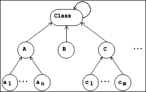 |
| Figure 5.1 Instance Hierarchy |
5.1.3.1 The instance hierarchy
The instance hierarchy (see Figure 5.1) is the subgraph obtained by including only the arcs which correspond to the reference from each object header to the class of which the object is an instance. This arc can be read "is an instance of". Since every object has a class, every object participates in this hierarchy. Except for its leaves, every object in the hierarchy is a class, ie. an object which can have instances. The subgraph is rooted in the class named Class. At this point it becomes necessary to avoid an infinite regress (Hofstadter, 1979), for since every thing is an object, Class is an object, and since every object has a class, Class must also have a class. We introduce a cycle, by making Class an instance of itself. This class is a self-describing object.
In our design, references in the instance hierarchy allow for paths from the leaves towards the root only. In other terms, if a class is thought of as representing a set of objects, the intension of that set is defined by the class, but its extension (Bertino & Martino, 1991) is not explicitly represented.
| 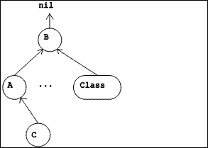 |
| Figure 5.2 Inheritance Hierarchy |
5.1.3.2 The inheritance hierarchy
A smaller hierarchy, the inheritance hierarchy, involves only classes as vertices, together with the arcs which correspond to the instance variable in each class which identifies the class from which it inherits structure and behavior (called its superclass). This arc can be read "inherits from". Because our design does not include multiple inheritance, each class has at most one superclass. This subgraph is rooted in the class named Object. Like the vertex labelled "B" in Figure 5.2, Object has no superclass.
Nothing in the design would prevent a user of the system from defining another inheritance hierarchy, disjoint from the one rooted in Object. The root of such a hierarchy would be an instance of Class but would have no superclass.
 |
| Figure 5.3 A class and methods |
5.1.3.3 Classes and methods
Each class has an array part which refers to the methods defined in the class. Each method contains a reference to the class for which it was compiled. Together, a class object and its methods form a strongly connected component of the graph.
The subgraph obtained by including the arcs corresponding to references from classes to their methods, from each method to its auxiliary list, and from these lists to the objects of the lists forms a directed acyclic graph. The subgraph would be a forest of trees, with each tree rooted in a class, except that global variable objects are shared among the methods.
5.2 Execution System
The execution system implements a virtual machine and consists of a byte code interpreter, a set of primitive routines, and a memory management system. It is written to run on a specific host system.
5.2.1 The byte code interpreter
The byte code set is the instruction set of the virtual machine. The machine is stack based, and most of the byte codes operate on the stack in some way. Byte codes perform elementary operations, and implement message sends. A message send consists of three phases: preparation, method lookup, and method execution.
5.2.1.1 Byte code execution
The byte code set provides elementary operations on intrinsic objects, access to information stored in the object header (size, class, etc.), access to instance variables and array parts, and the creation of new objects. There are byte codes to push various constants and object references onto the stack, byte codes to perform operations on one or more items from the top of the stack and replace them with a result, and byte codes to store the object on the top of the stack into a variable.
The byte code interpreter implements a virtual machine by executing a simple fetch-execute cycle. It maintains a program counter, which is the position of the next byte code to fetch from the current method. During each cycle, it fetches the next byte code, interprets and executes it, and updates the program counter.
Most of the byte codes perform a simple operation, entirely specified by the virtual machine, which removes a certain number of arguments from the stack and replaces them with a result. The byte codes which implement message sends are more complex, and provide the equivalent of subroutine calls. Interpretation of the current method is suspended, another method becomes the focus of execution, and will eventually return a result. The overall effect of a message send byte code, however is similar to that of any other byte code: a certain number of objects are removed from the stack and replaced with a single object which is the result of the operation.
5.2.1.2 Message send preparation
Before a message send can occur, the byte codes preceding it must have directed the virtual machine to push the receiver of the message and an appropriate number of arguments onto the stack.
5.2.1.3 Method lookup
A message send byte code provides the interpreter with the instance of Selector which names the message, and an indication of the number of arguments. The number of arguments allows the interpreter to identify the receiver of the message, located at a certain depth from the top of the stack. The receiver object carries within it an indication of the Class of which it is an instance.
Method lookup, the process, is an implementation of the mapping from the cross-product of the set of instances of Class and the set of instances of Selector to the set of instances of Method. This mapping is a partial function.
The design of the method lookup process calls for each Class to maintain a partial function from Selector to Method. If the class of the receiver object maps the selector of the message send to a method, then that is the method to be executed. Otherwise, the method lookup process continues with the superclass of the receiver object's class.
This process continues until either a matching method is found, or no method has been found for the selector in the ultimate superclass, the class named Object.
A failure of the method lookup process results in a run-time exception. Our design calls for the virtual machine to signal this exception by grouping the arguments into a single List object and sending the message #noMethodFor:withArgs: to the receiver with two arguments: the selector which failed to map to a method, and the list of arguments associated with that message send. The design requires the class named Object to implement a method named #noMethodFor:withArgs: to avoid an infinite loop in the interpreter.
For performance reasons, the design requires that the interpreter maintain a look-aside table of elements of the cross product of Class, Selector, and Method corresponding to recently observed message sends. The method lookup process described above is performed only when the look-aside table fails to yield a method. Furthermore, whenever the method lookup process is performed, the look-aside table is updated to include the new element.
5.2.1.4 Method execution
Method execution is something like a subroutine call. The virtual machine creates a stack frame to hold the state of the execution of the method which requires the message send. The stack frame includes the receiver and arguments for the new method, and space for temporary (local) variables.
Once the stack frame has been constructed, the interpreter commences execution of the new method by fetching and interpreting its first byte code. Execution continues in this manner, and may involve further message sends. Eventually, a return byte code will be executed.
A return from method execution is performed by removing the stack frame, including the receiver and arguments, and pushing the object specified by the return byte code onto the stack. Execution of the method which sent the message then resumes. The interpreter fetches the byte code following the one which initiated the message send and interprets it, and so on.
The byte code set also includes an instruction to directly execute a method which is on the top of the stack. This by-passes the method lookup phase, which is not needed since the method is readily available. This allows the use of methods which do not necessarily have a name, and which are not necessarily affiliated with a particular class. We call such methods "anonymous methods" (Conrad, 1990).
5.2.2 Primitive routines
Byte codes are limited in number: the operation code portion of a virtual machine instruction is constrained by our design to be one byte, limiting the number of distinct byte codes to 256. Primitive routines are an extension to the byte code set, which removes the limitation.
When a method specifies that its implementation is primitive, it provides the virtual machine with a primitive number (in the range [1, 255]), and a primitive modifier (in the range [0, 127]). Thus, the virtual machine could provide over thirty-two thousand primitive operations.
Primitive operations fall into three major categories: those which enable a higher level language, those which execute more efficiently than could a method in the higher level language (because of the interpretation), and those which interact with the operating system of the machine executing the interpreter.
5.2.3 Input/Output
The virtual machine sends the message #interrupt: to whatever object happens to be on top of the stack when it recognizes an input event, such as a keystroke or a mouse movement, passing a code for the event as the argument.
A primitive is defined to write a single character to the output device. Related primitives allow the current position on the output device to be determined and changed.
Another set of primitives deals with access to the host file system, including routines to navigate directory systems, open and close files, read and write files, etc.
5.2.4 Memory management
To participate in a computation performed by the virtual machine, an object must reside in memory. The initial set of objects making up the system must be produced in a special way, through a boot-strapping process. Thereafter, new objects can come into being only when a class is required to make a new instance of itself.
An object must cease to be part of the system as soon as no other objects in the system refer to it. There is no explicit instruction to an object to cease existence. This means that it will be impossible for the system to suffer from dangling pointers and memory leaks.
The memory management design draws on ideas from the realms of virtual memory management and garbage collection. The initial objects of the system reside in a file in the host system's secondary storage. Whenever an object is needed in memory, the virtual machine experiences an "object fault" (Mariani, 1991) (by analogy to a page fault in a paging virtual memory system). The interpreter will call upon the memory management portion of the run-time system to bring the object from secondary storage into memory, as suggested by Mariani (1991). When this is accomplished, the interpreter will continue its work.
As a part of the execution of the primitive operations which create new objects, the interpreter will call upon the memory management portion of the run-time system to allocate memory for the new object. There are also primitive operations which may increase the size of an existing object.
Whenever the memory management portion of the run-time system allocates memory, whether for a new object, a growing object, or as part of satisfying an object fault, it must perform a garbage collection activity. This is because there may not be enough memory left to perform the required allocation. The design of the garbage collection portion of memory management is beyond the scope of this thesis. However, our design requires that it have certain properties: it must be unobtrusive (causing no noticeable pause in operations of an application program), and it must interact with the virtual memory portion of memory management. In particular, when garbage collection does not yield enough memory, the virtual memory system must choose certain objects and spill them to secondary storage. When such objects are required again, they will be returned to memory by the usual object fault mechanism.
Whenever a new instance is created, and its class defines a method named #initialize, the run-time system automatically sends the message #initialize to the object immediately after its creation. This allows the object to assign appropriate objects to its instance variables so that it has a consistent initial state. The concern that new objects contain reasonable objects (ie. other than nil) in their instance variables led the designers of Smalltalk to introduce a complex metaclass structure (Goldberg & Robson, 1983). We have adopted a different solution to the problem, which enables us to revert to the simpler metaclass structure (with Class as the sole metaclass).
5.3 The High-level Language
The next higher level language for a hardware machine is normally an assembly language. We have chosen not to provide such a language, but rather to design a general purpose problem-oriented language which will be compiled to byte code instructions. We have called this high level language TOOL (a recursive acronym for TOOL Object-Oriented Language).
A method written in TOOL is simply a string of characters drawn from the set of all printable ASCII characters together with space, tab, carriage return, line feed, and form feed.
At the lexical level, a TOOL method is a stream of lexemes (substrings made up of adjacent characters, according to the lexical rules of the language). The lexemes of TOOL are described in the next subsection. At the syntactic level, lexemes are grouped together to make syntactic items, described by the syntax of the language. At this level of description, a syntactically correct TOOL method is a single syntactic item, which obeys the rules for being a "Method".
In the description, lexical items are named using all lower-case strings, while syntactic item names are capitalized. When an item name is used in the text, it will appear in quotation marks, as did "Method" in the previous paragraph.
5.3.1 TOOL lexemes
 |
| Figure 5.4 TOOL Lexical Diagrams (Part 1 of 2) |
The TOOL lexemes are shown in Figure 5.4 and Figure 5.5. The lexical item "comment", unlike all of the others, is explicitly not a lexeme participating in the syntax of a method, but is a kind of white space. It consists of any string of characters, except a double quote, within double quotes. A "comment" may contain two adjacent double quotes, but may not contain a nested "comment". Besides comments, white space includes spaces, tabs, new lines, carriage returns, and form feeds. White space can be freely used to improve readability by controlling the layout of the method text, subject to the rule that a lexeme (other than "comment" and "literal string") may not contain embedded white space.
The lexical items shown in Figure 5.4 define some basic entities used in method definitions and message sends. An "identifier" is a letter followed by zero or more letters or digits (with no intervening white space). An "argument" is a colon followed by an "identifier". It is used to name the arguments of methods that do not have a name, and to name the arguments of blocks. A "keyword" is an "identifier" followed by a colon. It is used as (part of) a keyword selector. A "class" identifies the class in which a method is compiled, and consists of an "identifier" (the name of the class) followed by the lexeme >>.
One other lexical item is needed, and is not shown in Figure 5.4. This is a "binary selector". This entity is one or two (adjacent) characters chosen from among these characters:
! % & * + , - / < = > ? @ \ ^ _ ` | ~
A "binary selector" can be used as a message name for messages requiring a single argument.
Also missing from Figure 5.4 is "digits" which is simply one or more decimal digits, forming the numeral of one of the natural numbers, or zero.
| 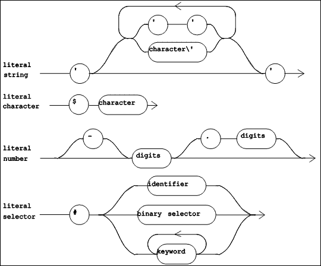 |
| Figure 5.5 TOOL Lexical Diagrams (Part 2 of 2) |
The lexical items shown in Figure 5.5 define various kinds of literals. A literal is a self-describing constant, and represents a single object. A "literal string" is a string of characters (except the single quote) delimited by single quotes. When a single quote is needed inside of a string, it is represented by a pair of single quotes. A "literal character" is the lexeme $ followed by the character. A "literal number" is a decimal integer with an optional leading minus sign. A "literal selector" is the lexeme # followed by a selector (ie. a message name).
5.3.2 TOOL syntax
 |
| Figure 5.6 TOOL Syntax Diagrams (Part 1 of 4) |
Syntax diagrams for TOOL are shown in Figure 5.6 through Figure 5.10. The syntactic and lexical diagrams have different rules for the placement of white space in the source text of a method. While lexical diagrams do not allow white space along the lines separating lexical items, syntax diagrams do allow white space along the lines separating the syntactic items. Indeed, white space may be required, to separate two adjacent lexical items which would otherwise run together.
There are two syntactic forms for methods, as shown in Figure 5.6. The first of these, "Method", is used when method source code is placed in an external text file. It identifies the class to which the method belongs, and contains a "Method Body". The second form, "Method Body", is used in source code browsers, where it is clear from the context which class owns the method.
An example of a "Method" follows, in which the "Method Body" is shaded.
{Frame>>+ a1.
Frame new
origin: self + a1
extent: extent.}
A "Method Body" begins with a "Pattern", which identifies the selector of the method, and provides names for the formal arguments of the method. This syntactic item is optional; its absence means that the method has no name and expects no arguments. A method name may be a unary selector, a binary selector, or a keyword selector. In an anonymous method, the "Pattern" consists merely of a list of formal argument names. In the example above, the "Pattern" is + a1, which identifies the binary selector + and names the argument a1. Other examples of method patterns and names are shown in Figure 5.7.
 |
| Figure 5.7 Examples of method patterns |
The "Pattern" may optionally be followed by a semi-colon and temporary variable declarations. In any case, a single period is required as a separator between the "Pattern" and the rest of the method.
 |
| Figure 5.8 TOOL Syntax Diagrams (Part 2 of 4) |
The remainder of the method consists of a "Statement List" (defined in Figure 5.8). This is simply a list of expressions separated by periods. Each statement in the list is a single "Expression" whose resulting object may be assigned to one or more variables.
The "Statement List" in the running example consists of a single "Expression", and is shaded below:
{Frame>>+ a1.
Frame new
origin: self + a1
extent: extent.}
An "Expression" comes in three varieties, defined by the three paths from the left to right side of the bottom portion of Figure 5.8, which identify, respectively, a simple expression with cascaded message sends, a simple expression, and a control construct.
 |
| Figure 5.9 TOOL Syntax Diagrams (Part 3 of 4) |
A simple expression (shown in Figure 5.9 as "Message Expression") is either a variable, a simple message send (a receiver sent a single message), a block, an "Expression" in parentheses, or a literal. A "Message Expression" can function as either the receiver or one of the arguments in another message send.
The syntactic item named "Message Send" (defined in Figure 5.9) names a message and identifies the arguments for that message send. The name of the message is one of: an "identifier" (a unary selector), a "binary selector", or the concatenation of each "keyword". A "Message Send" does not include a receiver: however, it always follows a "Message Expression" which identifies its receiver. In a cascade of message sends (see Figure 5.8), each "Message Send" in the cascade involves the same receiver, identified by the "Message Expression".
The grammar for the syntactic entities "Expression", "Message Expression", and "Message Send" is ambiguous. While this allows for a simpler presentation of the grammar (see Figure 5.8 and Figure 5.9), the ambiguity must be resolved in the language definition. This is done by assigning increasing precedence to the operators semi-colon, "keyword", "binary selector", and "identifier". Informally, this means that all the unary selectors (each represented by an "identifier") apply first, then all "binary selectors", then all "keywords", and finally, all semi-colons.
The "Statement" in the running example consists of one "Message Expression", which is a simple message send, named by the selector #origin:extent:. The receiver and the two arguments are each (nested) simple message sends. They are shaded below:
{Frame>>+ a1.
Frame new
origin: self + a1
extent: extent.}
| 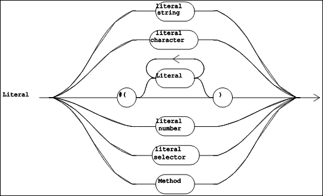 |
| Figure 5.10 TOOL Syntax Diagrams (Part 4 of 4) |
A "Literal" (defined in Figure 5.10) is a self-identifying constant. Some literals are lexical items (which contain no internal white space). These include literal strings, characters, numbers, and selectors. There are two literals which are syntactic items: a list of literals is introduced by the lexeme #(, contains zero or more "Literal" items, and is terminated by the lexeme ). A "Method" which occurs inside the "Statement List" of another method is also a "Literal", and is called a literal method.
5.3.3 TOOL Semantics
This section gives an informal operational semantics for TOOL. For each of the syntactic items, we will describe the corresponding byte codes in the underlying virtual machine.
5.3.3.1 Constants
A "Literal" lexeme describes a constant. It is represented either by a byte code which directly pushes the constant onto the stack, or by an entry in the method's auxiliary list and a byte code to push that entry onto the stack.
5.3.3.2 Variables
An "identifier" lexeme may either name a variable or a unary message. Which role it plays is always clear from the syntax of the expression in which it appears. This section describes the semantics of variables; messages sends are described in a later section.
A variable can be characterized by three aspects: its scope, its lifetime, and whether its value can be changed. Scope refers to that portion of the source code of a program in which the identifier is recognized as a reference to the variable. During execution of a program, a variable may come into being at a particular point in time, and go out of existence at a later point. Certain variables are read-only; that is, their value cannot be changed. Others can be.
Each identifier occurrence in a method corresponds to a byte code to push the object value of that identifier onto the stack, or to pop the top of the stack into the variable it names if this is allowed.
(1) Global variables
Each global variable is an instance of the class Global, and has a name and a value. A global variable has a scope which includes all the methods in the system. It exists from the time it is first created until the last method which refers to it is removed from the system. Global variables can be changed to refer to a different object.
(2) Instance variables
Each instance variable is a part of some object. Its name is defined in the class of that object, and each instance of that class maintains a separate value for each instance variable. The scope of an instance variable is all of the source code corresponding to methods belonging to the class which defines it. Each instance variable comes into existence at the time the object containing it is created, and survives until that object is removed from the system. Instance variables can have new objects assigned to them. However, the objects to which they refer may be modified by sending messages to them.
(3) Method arguments
A method argument is a name which allows a method to refer to the objects which it has been given as arguments. The scope of a method argument is the method in which it has been declared. It comes into existence during the message send, and ceases to exist when the method returns. Our design does not allow method arguments to have new objects assigned to them.
(4) Block arguments
A block argument is much like a method argument. Its scope is the source code in the block declaring it. It comes into existence when the method defining the block begins execution (and is initialized to nil), and ceases to exist when that method returns. It may not be assigned to.
(5) Temporary variables
The "Pattern" may optionally be followed by the names of temporary variables. These variables can each hold (a reference to) a single object at any time during the execution of the method. Their scope is local to the method. They come into being just before the method begins execution (and are initialized to nil), may be assigned objects during execution, and are destroyed when the method returns.
(6) Pseudo variables
Two identifiers are reserved for specific purposes. They are self and super.
The pseudo variable self refers to the receiver of the current method, and may be used wherever any other variable can appear, except that it may not be assigned to.
The pseudo variable super can be used only as the receiver of a message send (Borning & O'Shea, 1987). It indicates that the receiver for the message send is the same object as self. However, the message lookup process is to begin at the superclass of the class to which the current method belongs, rather than beginning at the class of self.
5.3.3.3 Message sends
A simple message send ("Message Expression" followed by "Message Send"; see Figure 5.9) is handled by first of all pushing onto the run-time stack the object computed by the inner "Message Expression", then evaluating each of the argument "Message Expressions" in the "Message Send", leaving on the stack a reference to each of the objects they produced. Then, the message named by the "Message Send" is sent to the receiver with all of the arguments. When the execution of this message send is complete, the receiver and the arguments will be replaced by a single object, the result of the message send.
5.3.3.4 Expressions
In all cases, a "Message Expression" leaves a single object of interest on the top of the run-time stack. It may be used as the receiver or as one of the arguments of a message send, or it may be the "Message Expression" of an "Expression" (see Figure 5.8).
An object which is the result of a "Message Expression" in an "Expression" may be the receiver of a cascaded message send, or it may be simply assigned to one or more variables. In each of these cases, the object's participation in the "Expression" will result in its being removed from the stack (and either assigned to variables or discarded). A "Message Expression" which participates in a control structure is evaluated differently as described below.
For a cascaded message send, a duplicate copy of the receiver (the result of the "Message Expression") is made at the top of the run-time stack. Then the arguments of the first "Message Send" are evaluated and left on the stack, and the message send is executed. The object returned is discarded. This leaves the original receiver object on top of the stack. The process is repeated for all but the last cascaded send: the original receiver is duplicated, the message send is executed, and the returned object is discarded. For the last cascaded send, however, the original receiver is not duplicated on the stack, and the resulting object is retained as the final result of the (entire) cascaded message send. This object is then either assigned to one or more variables or discarded. This is identical to the semantics of cascaded message sends in Smalltalk (Goldberg & Robson, 1983).
When a "Method Body" is executed, the stack will contain a receiver object and the correct number of arguments, as explained above. The result of the execution will be the object returned by the last "Expression" in the "Statement List" of the method. There is also a special control structure which will allow a method to specify an object to be returned as its result from an earlier "Expression" (see Section 5.3.3.6.4).
5.3.3.5 Blocks
A block is primarily a "Statement List" whose execution is deferred to a later moment. In fact, it may never be executed or it may be executed several times. Each time it is executed, it must be given an object to be bound to each of its formal arguments. The result of the execution of a block is the object produced by the last expression in its "Statement List".
A block is defined within a method, and is a nested scope. The message sends in a block may refer to the formal arguments and/or temporary variables of the method within which it is defined, as well as its own formal arguments. In Smalltalk (Goldberg & Robson, 1983), a block is an object which has essentially a copy of the stack frame for the method in which it is defined so that it has access to these objects (the method arguments and temporaries) when it is executed. This is necessary in case the method defining the block returns before the block is executed.
In TOOL, blocks have a different representation: a block is an intrinsic which contains (an encoding of) the address of the stack frame for the method in which it is defined. This implies that it is an error for a block to be executed after the method defining it has returned, because the context of that method no longer exists. Conrad (1990) gives reasons for this design decision, and points out a way in which anonymous methods can provide most of the functionality which is lost because of it.
5.3.3.6 Control constructs
TOOL provides a rich set of control structures. Syntactically, a control structure looks like a keyword message send without a receiver. The initial keyword indicates the kind of control structure, and the additional keywords and arguments provide the objects upon which the control structure operates.
TOOL includes control constructs for alternation, iteration, Boolean expressions, early return from a method, and primitive methods. Each construct is named by the concatenation of the leading keyword with all the keywords in its "Message Expression".
The description of each family of control structures will include a complete list of all the variants allowed by the language design and one or more examples, together with a suggestive description of the semantics of the construct. The list of variants will show the keywords of the construct with intervening arguments shown in angle brackets, as syntactic items.
(1) Alternation
The TOOL control constructs for a single alternative shown in Figure 5.11.
| 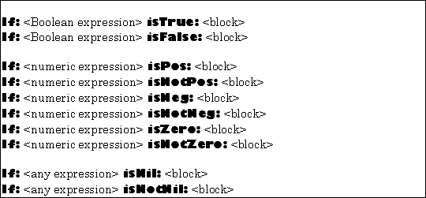 |
| Figure 5.11 TOOL constructs for a single alternative |
The first argument is evaluated. The resulting object is then tested according as suggested by the second keyword in the construct name. If the test is successful, the second argument (which must be block expecting no arguments) is executed.
The result of the entire construct is the result produced by the block if it is actually executed. If the block is not executed, the value computed by the entire construct is nil.
The TOOL constructs for one of two alternatives are shown in Figure 5.12.
| 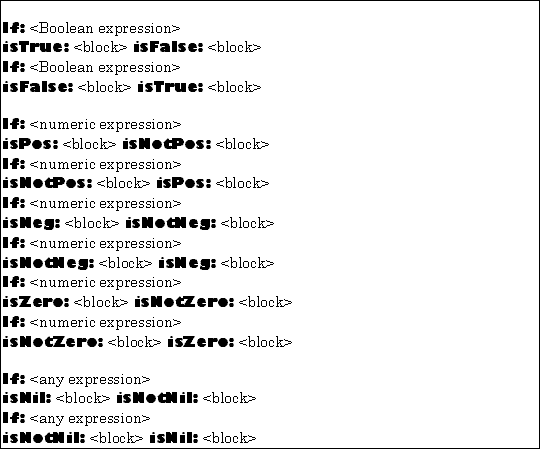 |
| Figure 5.12 TOOL constructs for two alternatives |
The first argument in each of these constructs is evaluated. The resulting object is then tested according as suggested by the second keyword in the construct name. If the test is successful, the second argument (which must be block expecting no arguments) is executed. Otherwise, the third argument (also a block expecting no arguments), will be executed. The result of the entire construct is the result produced by the block which is actually executed.
For example,
If: var isNeg: [var negated] isNotNeg: [var]
would return the absolute value of var.
 |
| Figure 5.13 TOOL constructs for multiple alternatives |
There are constructs which generalize the If: constructs to allow for an arbitrary number of alternatives. They shown in Figure 5.13.
In the first variant, expression0 is evaluated and compared for equality with each of the expressioni, in order. If a match is found, (such that expression0 equals expressioni), then the corresponding block is executed and the construct terminates with the value resulting from the execution of blocki. If no match is found, the default block is executed, and the result of the entire construct is the result of that block.
For example,
For: lexeme cases: [
Case: 'true' do: [true].
Case: 'false' do: [false].
Case: 'nil' do: [nil].
...
Default: [Tool error: 'Unknown lexeme']].
would return the object corresponding to the string in lexeme, or raise an exception.
In the second variant, the expressioni are evaluated in order until one of them returns true. If this occurs, the corresponding block is executed and supplies the value of the entire construct. If all of the expressions evaluate to false, the default block is executed, supplying the value of the entire construct.
(2) Iteration
There is a control construct for executing a block a specific number of times. It is shown in Figure 5.14.
 |
| Figure 5.14 TOOL construct for iteration: simple repetition |
The first argument is the number of times the second argument, a block expecting zero arguments, will be executed.
For example,
For: 5 timesRepeat: ['hello ' print]
would print the string 'hello ' five times.
There are constructs for repeating a block while a control variable takes on successive values from an interval. They are shown in Figure 5.15.
 |
| Figure 5.15 TOOL constructs for iteration: counted loops |
The final argument of these constructs is a block expecting a single argument. This block is executed several times, as suggested by the other arguments. Each time the block is executed, its argument is the next number from the interval specified by the first two or three arguments.
For example,
sum := 0.
From: 1 to: 10 do: [ :index.
sum := sum + (array at: index)].
would sum the first ten elements of array, and
sq := 0.
From: 1 to: n by: 2 do: [ :i.
sq := sq + i].
would assign to sq the sum of the odd integers in the closed interval from 1 to n.
The first variant of the construct is an abbreviation of the more general second variant, with a value of one implicitly provided for the by: argument.
The control constructs for iteration using while loops is shown in Figure 5.16.
 |
| Figure 5.16 TOOL constructs for iteration: while loops |
Both arguments of a while loop must be blocks expecting zero arguments and returning an object (of the kind indicated, if any). The first block is executed at least one time. If its result (the last object produced by its "Statement List") matches the condition specified, the second block will be executed. This process will repeat until the first block results in a value contrary to the condition.
The first block will always be executed at least one time, and will be executed exactly one more time than the second block (which may be executed zero times).
For example,
While: [obj := obj next]
isNotNil: [obj print]
would send the message #print to each of the elements in a linked list, assuming the message #next returns the next object in the list, and that nil is the list terminator.
(3) Boolean expressions
The control constructs for Boolean expressions are evaluated using the flow of control design, in which the expression is required to be partially unevaluated whenever possible (Aho, Sethi & Ullman, 1986). They are shown in Figure 5.17.
| 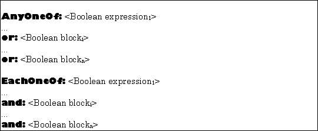 |
| Figure 5.17 TOOL constructs for Boolean expressions |
First, expression1 is evaluated. If its result completely determines the result of the entire construct (true for the first variant, and false for the second), execution is terminated without executing the blocks. Otherwise, the blocks are executed one at a time, in the order written, until the result has been completely determined.
For example, the expression
EachOneOf: index <= array size
and: [(array at: index) <> key]
could appear in a while loop searching through array for the object equal to key. If the first Boolean expression evaluates to false, then the entire expression will evaluate to false without executing the block, thus avoiding an array indexing error.
A memory trick, which holds for the entire language, is particularly useful for these constructs: statements outside of a block will be executed exactly one time; statements in a block may be executed zero or more times, depending on the construct in which the block occurs and execution-time results.
(4) Method return value
The construct to indicate the object to be returned as the result of a method is shown in Figure 5.18
|
| Figure 5.18 TOOL construct for method return value |
The expression will be evaluated, and the resulting object will be returned as the result of the entire method. This is the case even if the construct occurs within a block.
(5) Primitive methods
The control constructs for specifying a primitive implementation of a method are:
 |
| Figure 5.19 TOOL constructs for primitive methods |
In the most general variant, the primitive function indicated by the primitive number and modifier number is performed by the run-time system, which will compute a value to be returned as the result of the entire method. If the run-time system signals failure, the block will be executed, and its result will be the result of the entire method.
In the other variants, a missing modifier is replaced by a modifier of zero, and a missing block will return the receiver of the method as the result, ie. the block [Return: self] will be executed.
A method containing a primitive construct may not contain any other statements. The primitive function the construct identifies defines the entire behavior of such a method, which is called a primitive method.
5.3.4 Standard methods
As mentioned in section 5.2.4, the initial set of objects in the system must be must be produced in a special way, through a boot-strapping process. The objects which are required for the virtual machine to operate include: classes, methods, and an instance of the class named System.
The classes required include all of the intrinsic classes, the class of each kind of built-in data type (including Class), all of the superclasses of these classes (including Object), and the class named System, which has a distinguished (and unique) instance, stored in the global variable named Tool. Execution of the run-time system begins by pushing the instance of System onto the stack and sending it the message #startUpTool: with (a string containing) the remainder of the command line as its argument.
Standard methods are those which are built-in to the run-time system. They can be categorized as byte codes, primitive methods, and ordinary methods.
5.3.4.1 Types
In this chapter, types will be used to identify the kinds of objects which can occur at certain points. For this purpose, we will define the type of an object reference (an identifier or an expression) to be an element of the set of all classes in the system (Conrad, 1991). This means that an object reference is known to be an instance of one of the classes in its type. Types are not a part of the language; programs are not statically typed.
5.3.4.2 Byte codes
There are byte codes which perform fundamental operations on instances of the required classes. For instance, for the class Boolean, there are three byte codes, named #&, #|, and #not, which perform the Boolean functions and, or, and not, respectively. Another example is the method #class, defined for all objects (ie. in the class Object) which returns the class of an object to which it is sent.
5.3.4.3 Primitive methods
As discussed in sections 5.2.2 and 5.3.3.6.5, primitive methods specify the execution of a primitive routine, which is an extension of the byte code set. An example is the method Character>>write which outputs a single character to the display device.
5.3.4.4 Ordinary methods
Strictly speaking, only three other methods are required for a working system: System>>startUpTool: and Object>>noMethodFor:withArgs:, and Object>>interrupt:. The first of these is required in order for the run-time system to begin operations. The second is required to handle a failure in the method lookup process (see section 5.2.1.3). The third must be defined to specify the processing of input events.
The virtual machine sends the message #noMethodFor:withArgs: when the method lookup process fails. This can be useful in several ways besides run-time error detection. For example, it can be used to simulate multiple inheritance, by giving an object an instance variable holding (a reference to) an instance of the other class from which it needs to inherit behavior. Then, the primary class implements a method like:
{PrimaryClass>>noMethodFor: a1 withArgs: a2.
Return: (
secondaryObject
withArgs: a2
execute: a1.}
which, in essence, passes on any message it does not understand to one of its components.
This message can also be an essential part of a schema modification mechanism (Conrad, 1988), in which a class is modified without immediately changing any of its instances. Old instances continue to refer to the old class. All of the old methods of the old class are removed and replaced by a single #noMethodFor:withArgs: method. Then, the first time a message is sent to an old object, this method will be invoked. It can convert the object into an equivalent instance of the new class, and pass on the message to the new object. This is similar to the process used for redefining classes in CLOS (Bobrow, DeMichiel, Gabriel, Keene, Kiczales & Moon, 1988).
5.4 Programming Environment
A working virtual machine, like a working hardware processor, is of little use without an operating environment, which normally includes language translators (assemblers and compilers), editors, etc. We have chosen not to include an assembly language and assembler in the design, mainly because of coordination requirements among the byte codes. For example, a message send byte code must be preceded by pushes of the correct number of arguments onto the stack.
The design does include a compiler, which translates from the language described in section 5.3 into the byte codes (organized in method objects) required by the virtual machine (see section 5.2) for execution.
While it is not at all automatic that an object-oriented system should have a graphical user interface employing multiple overlapping windows (Budd, 1987) , we have chosen to include a window-based environment as a part of our system. A program editor embedded in a class browser completes the programming environment.
The environment is similar to that described in (Goldberg, 1984) and (LaLonde & Pugh, 1990), except that it is character-based rather than graphics-oriented. This was a conscious design decision based on our desire to implement the virtual machine (and therefore TOOL and its programming environment) on a large range of host systems. Concern for efficient implementation of a character based windowing system led us to design a primitive to display a two dimensional array of characters at a given location on the host system display device.
5.5 Conclusion
This chapter has presented the design of a complete object-oriented programming virtual machine, language, and programming environment. The system builds upon the strengths of Smalltalk, while avoiding its weaknesses, according to our analysis of these in the previous chapter.
Our design uses a simpler metaclass structure, replaces the Smalltalk notion of image with a persistent set of objects which are managed by a virtual memory system based on the concept of object fault. Purity of the message sending paradigm has been sacrificed for improved performance (through the use of byte codes which simulate certain fundamental methods), and to improve understanding (through the use of explicit flow of control constructs).
Experience obtained during the implementation of this system is described in the next chapter.
Copyright © March 8, 1995 Bruce Conrad
Chapter 6: Implementation
As explained in the previous chapter, the initial set of objects (including classes and methods) had to be created externally to the system. This was accomplished by using another programming system; this is explained in the first section of this chapter. Once this bootstrap process was completed, it became possible to continue the evolution of the system entirely within the system itself.
This process of evolving a working system within itself is similar in spirit to the methodology used for the development of Smalltalk-80, as described by Ingalls (1983). The second section describes the cloning operation, which is accomplished with methods analogous to the Digitalk (1988) "cloner" and the Smalltalk-80 "system tracer" (Ingalls, 1983).
The final sections of this chapter describe the implementation of the TOOL programming language compiler and decompiler, the windowing system, and the programming environment.
6.1 Bootstrap
The initial set of system objects was created by an application of the fundamental theorem of computer science: Programs are data.
We created the original set of objects using the Digitalk (1988) Smalltalk/V 286 programming language. The bootstrap process (shown in Figure 6.1) shows how we used an implementation of Smalltalk to produce methods written in our byte code set. The diagrams in Figure 6.1 use the Bratman (1961) "T-diagram" as generalized by Earley & Sturgis (1970), to show the bootstrapping steps.
6.1.1 The Bootstrap Notation
 |
| Figure 6.1 The bootstrap process: overview |
In the notation of Figure 6.1, a triangle represents a hardware processor, and contains within it the name of its machine language. A rectangle represents an interpreter or virtual machine. Near the bottom, it contains the name of the language in which it is implemented, and near the top it contains the language which it will interpret (that is, the ISP which it implements). When a rectangle is stacked on top of a triangle, we have a working virtual machine. A "T"-shape represents a language translator. The language in which it is written is shown in the bottom arm. Its source language is shown at the left, and its target language at the right. When it is stacked on top of a matching rectangle or triangle, it will be executed and translate its input (which may be either an interpreter, a compiler, or some other function) from its source language into its target language.
The languages involved are: Smalltalk (shown in the diagrams by ST), the Smalltalk/V 286 virtual machine language (shown in the diagrams by VBC for virtual byte codes), the Intel 80286 processor instruction set (286), the TOOL object-oriented language (TOOL), and the byte code set for our virtual machine (TBC for TOOL byte codes).
6.1.2 The Bootstrap Process
Two translators had to be hand-crafted. The first of these, written in Smalltalk, translates TOOL source code into Smalltalk source code. This translator is marked with a circled A in Figure 6.1. The second translator, written in TOOL, is a compiler from TOOL source code to the byte code set of our virtual machine (ie. TOOL byte codes). It is marked with a circled B.
The bootstrap process involves the successive execution of four translators.
 |
| Figure 6.2 The bootstrap process: step one |
The first step translates the TOOL compiler (marked with a circled A in Figure 6.2) into V byte codes, yielding an executable translator from TOOL to Smalltalk (marked with a circled 2 in the figure).
| 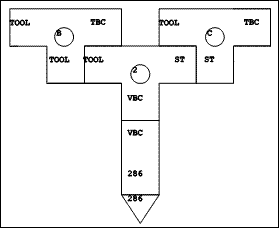 |
| Figure 6.3 The bootstrap process: step two |
In the second step, this translator takes the TOOL compiler (marked with a circled B in Figure 6.3) as input and produces the Smalltalk source code for a cross compiler (marked with a circled C in the figure).
 |
| Figure 6.4 The bootstrap process: step three |
Step three uses the regular Smalltalk compiler (marked with a circled 3 in Figure 6.4) to produce the executable version of the cross-compiler (marked with a circled 4 in the figure). This is a cross-compiler, because it executes on one virtual machine (VBC), but produces code which will only execute on a different virtual machine (in this case, TBC).
| 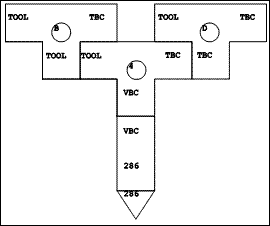 |
| Figure 6.5 The bootstrap process: step four |
Finally, in step four, the executable cross-compiler is used to compile itself (ie. the compiler marked with a circled B in Figure 6.5) to produce the finished TOOL compiler (marked with a circled D in the figure).
In summary, bootstrapping executes the first of the hand-crafted compilers with the second as input. The result is an automatically generated cross-compiler from TOOL to our virtual machine language, executable on the Smalltalk/V 286 virtual machine. The cross-compiler is marked with a circled 4 in the figures. This cross-compiler is then used to compile itself so that it will run on our virtual machine. This automatically generates the final TOOL compiler, marked with a circled D in the figures. This translator will run only on the TOOL virtual machine, and the bootstrap is complete.
6.2 The TOOL cloner
After the bootstrap operation, we began "living in" our system (Ingalls, 1983). From time to time, it was necessary to make a change to the virtual machine. This usually required changes to be made to the file of initial objects. We implemented a cloner to write out the objects of a running system into an object file. Upon completion of the cloning operation, the virtual machine is then able to run using the objects in this output file.
The cloner works by maintaining a queue of objects yet to be cloned. The initial queue consists of all of the objects of which the virtual machine must be aware. For each object in the queue, the cloner writes out its external representation, and adds to the queue the objects to which it refers (assuming they had not already been encountered).
The crux of cloning consists in converting an object from the internal (or memory) format to the external (or disk) format, which is a 32 bit bitstring. Such conversions are accomplished routinely by the virtual machine, but are not required of the high-level code in normal operation. The conversion is accomplished for intrinsic objects by using messages which they understand to compute the external format. Other objects must be looked up in the queue. The crucial method is
cloneFor: a1.
Return: (For: a1 class cases: [
Case: Undefined do: [0].
Case: SmallInteger do: [
(If: a1 isNeg: [a1+2147483648]
isNotNeg: [a1]) * 2 + 1].
...
Default: [objects add: a1]].
in which it is assumed that the external format of nil is a zero, that small integers are represented externally in the high order 31 bits with the low order bit turned on, and that objects is the queue of objects to be cloned. This queue responds to the #add: message by returning the argument object's external representation. As a side-effect, the argument will be added to the queue if it has not been previously encountered in the cloning operation (so that it will later be cloned itself).
This method has an unusual style, in that it is a case statement based on the class of the argument. Pure object-oriented programming style would require that a send of self cloneFor: anObject be replaced with a send of, say, anObject asClone. Then, the method #asClone would need to be defined in each of the classes which appear in the case construct:
{Undefined>>asClone.
Return: 0.}
{SmallInteger>>asClone.
Return: (If: self isNeg: [self+2147483648]
isNotNeg: [self]) * 2 + 1.}
...
{Object>>asClone.
Return: (objects add: self).}
We explicitly chose not to do this, because we did not wish the cloner to be a permanent part of the system. Rather, when needed, it is filed in and executed. Furthermore, it goes to great pains to avoid including any part of itself in the output file. It was simpler to use a case statement in the core method of the cloner rather than add a method to each of several classes, and then carefully avoid cloning those methods.
The cloner consists of 2 classes and 14 methods (four of which are anonymous methods) containing about 300 lines of TOOL code.
The initial set of objects consists of 22 kernel classes, with 548 methods requiring 3746 lines of TOOL source code (exclusive of comments), and a table of global variables. In addition to these objects, a minimal functional set of objects would include the TOOL programming language implementation, described in the following section.
6.3 TOOL programming language support
The first version of the TOOL programming environment was implemented in Smalltalk, and tested using the TOOL to Smalltalk translator. When our virtual machine needed testing, we would use the bootstrap process to produce an initial set of objects (primarily classes and methods). Once the virtual machine was functioning reliably, our development efforts switched to the TOOL programming environment, and we ceased to need Smalltalk.
This section describes the implementation of the three major components of the TOOL programming environment: the compiler, the decompiler, and the program development tools.
6.3.1 The TOOL Compiler
Since the design of the TOOL object-oriented language had not been finalized by the time of the bootstrap, we implemented a compiler-compiler in Smalltalk, using techniques described by Aho, Sethi & Ullman (1986), to create tables for a table-driven LR parser (Aho & Johnson, 1974). This allowed us to experiment with several variants of TOOL, and with different grammars. We used the compiler-compiler to create a parser for each language design.
The current version of the parser uses a hand-optimized recursive descent parser. This was not difficult to write, once the syntax of TOOL stabilized, as this syntax is relatively uncomplicated.
The parser produces an abstract syntax tree from the source code. Figure 6.6 shows the abstract syntax tree (AST) for the sample method:
{Frame>>+ a1.
Frame new
origin: self + a1
extent: extent.}
| 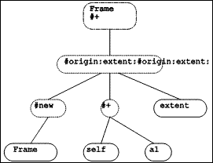 |
| Figure 6.6 Sample AST |
An abstract syntax tree consists of a root node for the method (shown with a dashed line), with one subtree for each statement in the method. In this case there is a single statement, consisting of a message send with the selector #origin:extent:. Message send nodes are shown with a dotted line. The left-most child node of each send is the receiver of the message, and the remaining child nodes (if any) are the arguments which the message requires. The leaf nodes of an abstract syntax tree (shown with solid lines) are objects, specified by variables or literal constants. The leaf nodes of the tree in Figure 6.6 are four kinds of variables. From left to right these are: a global variable, a pseudo variable, a method argument, and an instance variable.
Each node in an abstract syntax tree is represented by an object, an instance of the ToolNode class or one of its subclasses. These classes have one set of methods to generate the corresponding Smalltalk source code, and another set of methods to generate the byte codes for our virtual machine. Once the tree has been created by the parser, an appropriate traversal produces either Smalltalk source code or TOOL byte codes.
By using the abstract syntax tree as an intermediate form, we were able to use the same parser for both of the hand-crafted translators required by the bootstrap. The BETA object-oriented programming system takes this idea a step further and uses abstract syntax trees as the principal data structure for representing programs and program fragments (Bak, Knudsen, Madsen, Nrgaard & Sandvad, 1991).
 |
| Figure 6.7 The TOOL Compilers |
As shown in Figure 6.7, the translator from TOOL to Smalltalk (the dashed line labelled A) actually uses the TOOL parser to create an abstract syntax tree, then traverses this tree to produce the output. Similarly, the TOOL compiler (labelled B) actually uses the same parser to create an abstract syntax tree, but then traverses the tree differently to generate the TOOL byte codes.
While we were experimenting with the TOOL object-oriented language, the TOOL to Smalltalk translator composed with the standard Smalltalk/V 286 compiler (labelled 3) gave us executable versions of methods written in TOOL. When these methods had been tested, and we had a working TOOL programming environment, the cross-compiler produced the initial set of objects for use with the TOOL virtual machine.
6.3.2 The TOOL Decompiler
In the TOOL programming environment, source code is not stored in a separate file, as it is in Smalltalk. Rather, the source code of a method is produced on demand by decompiling the method.
| 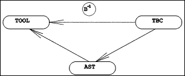 |
| Figure 6.8 The TOOL Decompiler |
The decompiler was implemented by writing a translator from TOOL byte codes back into an abstract syntax tree. Methods were added to the classes describing nodes in the tree so that a traversal of a tree produces TOOL source code. Figure 6.8 shows a schematic view of the decompiler, showing that it is the inverse of the TOOL compiler (compare with Figure 6.7).
Together, the TOOL compiler, decompiler, and abstract syntax tree nodes are described by 28 classes, with a total of 302 methods, requiring 3152 lines of TOOL source code. Most of these methods assume the presence of the kernel system objects.
6.4 The Windowing System
The minimal initial set of objects yields a programming environment in which the user can enter a single TOOL expression (of arbitrary complexity), then press the Enter key. At this point, the compiler will be invoked to produce a method from this expression. The method will be executed, resulting in an object. This object will be sent the message #printString, to produce a string containing the printable representation of the object, and this string will be displayed. The programming environment will then await another expression from the user.
There is a TOOL expression which can direct the compiler to file in source code created outside of this programming environment. For example, the command:
File new name: 'window.pkg'; fileIn.
would cause the system to incorporate into itself all of the classes, methods, and other objects described in the TOOL code in the file named WINDOW.PKG in the current directory.
At this point we have a sufficiently powerful environment to meet our requirements. However, it is not yet sufficiently useable. This observation motivated the development of a system of overlapping windows as the foundation of a complete set of programming tools.
6.4.1 Paned Windows
A data-oriented application in the TOOL windowing system consists of an object to represent the data (a kind of Model), together with a Window which is tiled with various kinds of Panes. Each pane has its own horizontal and vertical scroll bars if it is not large enough to show its entire contents. Windows and panes can be moved around on the screen and resized by the user, subject to the tiling constraint, for panes.
The windows are visible on the screen and can overlap windows which are behind them. The user of TOOL can organize these windows, which represent applications, onto one or more virtual desktops. One such desktop is shown in Figure 6.9, in which we see a disk browser window (labelled Directory: c:\RESEARCH\) on top of a Workspace, itself on top of a window inspector (labelled Looking at: a Window), which, finally, is on top of a source code browser (labelled: TOOL Browser).
| 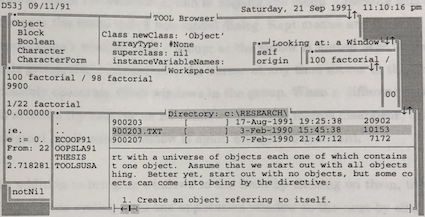 |
| Figure 6.9 TOOL windows |
The two browser applications each have three panes. The disk browser window has a list of the subdirectories at the left, a list of the files at the top right, and the text of the currently selected file at the bottom right. The source code browser shows the class hierarchy at the upper left, the methods of the currently selected class at the lower left, and the definition of either the currently selected class or method at the right. An inspector shows the instance variables of the object it is looking at on the left, and a description of the currently selected instance variable on the right. In the figure, the right hand pane of the inspector is showing the form of the workspace window. The workspace consists of a single text pane.
6.4.2 User interaction with windows
The hardware cursor moves with the mouse (or arrow keys) around the screen. When the user clicks the left mouse button (or presses F12 or Alt-F4) the window on which the cursor is located is activated, and moves to the top, if necessary.
When the user clicks the right mouse button (or presses Alt or Alt-=), a menu window pops up. Which menu depends on the location of the cursor when the menu was called for: menus are context-sensitive. Each pane can have its own menu; the window has a menu which can be called for when the cursor is on its border; and the system menu can be called for when the cursor is on no window.
Menu windows are normally transient in nature, requiring input or dismissal before the user can return to other work. They have their own menu, which includes the option of keeping the menu. Choosing this option changes the menu into a non-modal dialog. Kept menus and their application's window form a group; as the cursor is moved over windows in this group, the window under the cursor at any time moves to the front, possibly obscuring other windows in the group. When a different application is selected (by clicking on its window), the kept menus disappear, until the original application's window is again brought to the front.
In addition to bringing windows to the front by clicking on them, the system implements cycling from one application window to the next by clicking on the middle mouse button (or pressing F9). In addition, the system menu includes an option to create a pop up list of windows, and each window menu has an option to bury the window (ie. move it to the bottom, or next in cycling order).
Besides all of this, the windows are organized into separate, named desktops, and the user can move between desktops by pressing Shift-F3 or selecting a desktop from the system console (itself requested from the system menu).
Thus, the user has complete control over the organization of their desktops. This extends into the ability to specify the colors in which each application window will be displayed.
6.4.3 Programming environment windows
The programming environment as seen by a user of TOOL, in its current form, consists of multiple overlapping windows representing data-oriented applications whose data include the class and method hierarchy of the system itself. These applications include various kinds of source code browsers, object inspectors, a debugger, a workspace, and a disk file browser.
The compiler is available in every text pane. TOOL code can be typed in, highlighted and executed, evaluated, or inspected. In all three cases it is compiled and executed. In the case of evaluation, the object returned by the last statement is sent the message #printString, to produce a string containing the printable representation of the object. This string is then inserted into the text pane. In the case of inspection, the object returned by the last statement becomes the subject of an object inspector.
6.4.4 Implementation details
We elected to have each window cache its own form in an instance variable. Changes in a pane, whether due to scrolling or model changes, are communicated to the window, which incorporates these into its form, clipping as necessary, then passes a request to the desktop object to refresh the required area of the screen (clipping it as needed, if the window is partially obscured by windows above it).
Bringing a window to the top of the screen requires simply redrawing its form on the screen. When a desktop needs to be completely redrawn (as when the user switches desktops), the system begins with a display list containing the entire screen and traverses the windows from front-most to farthest back, drawing each in the display list, and carving the portions of the screen it used out of the display list. In this way, the user sees the front window first, and can concentrate on that while the system refreshes the rest of the screen around it.
Input events are sent (by the interpreter) to whatever object happens to have the focus. Each input event results in a message to the (referent of the global variable named) Focus, which either executes an appropriate method or forwards the message to its container object: panes forward to windows, which forward to desktops, which forward to Tool (the system object). This means that two kinds of inheritance are at work: class inheritance, in which a particular kind of pane might not recognize a message, and so the interpreter will check its superclass; and aggregation inheritance, in which a method may delegate the message to its container object.
For example, the method for the message #switch (sent when the user presses Shift-F3) exists only in desktop objects. If the cursor was over a text pane when the user pressed Shift-F3, that text pane would be the Focus object, and its class would not implement a method for #switch. However, the class Pane, the superclass of all kinds of pane, has the method:
{Pane>>noMethodFor: a1 withArgs: a2.
Return: (window withArgs: a2 execute: a1).}
and the class Window, the superclass of all kinds of window, has the method:
{Window>>noMethodFor: a1 withArgs: a2.
Return: (desktop withArgs: a2 execute: a1).}
so that finally, the method for #switch in the desktop class will be executed.
The windowing system and the programming environment applications together consist of 47 classes, 726 methods, with about 6500 lines of TOOL source code.
Copyright © March 8, 1995 Bruce Conrad
Chapter 7: Evaluation
Software evaluation has been extensively studied. For example, Basili, Selby, and Hutchens (1986) review "the experimental work that has been performed in software engineering over the past several years," in which they cite over a hundred such studies.
From an MIS perspective, Wolstenholme, Hederson, and Gavine (1993) suggest that assessment of MIS systems has traditionally been a "post-implementation activity" which is often not properly carried out because of the cost and difficulty. They suggest prototyping, in which assessment is done automatically along the way as a possible technical solution. Using methodologies based on modeling, they suggest, "builds a bridges between the reality of the application domain and the structure of the MIS." Other methodologies are "based on a philosophy of participation between the software engineers and the actors in the host organization."
Gregory (1991) discusses how to make "an appropriate choice of evaluation methodology" suggesting a "contingency approach." For a well-established end user programming tool such as the spreadsheet, detailed empirical analyses are possible (Sajaniemi & Pekkanen, 1988). Even in such a case, an ethnographic approach may be more valuable (Nardi & Miller, 1990; Nardi & Miller, 1991; Gantt & Nardi, 1992; Nardi, 1993; Nardi, 1995). Such an approach assumes "that the anthropologist is ignorant of the understandings possessed by the informant but wishes to learn as much as possible through interaction and observation" (Nardi, 1993).
Because we view TOOL as a kind of medium of expression, we felt it most appropriate to evaluate it by observing the way in which people chose to use it. We enlisted the help of four groups of people to accomplish this. First, we used it ourselves: not only to create TOOL itself, but also for numerous other applications and smaller tasks. Second, a small software development group used TOOL in a real development project. Third, we allowed a fourth year Computer Science class to use TOOL as a sample product in a course on software testing. Finally, we recount the results of numerous other attempts to convince conventional programmers to use it in real development tasks.
7.1 Internal evaluation
First of all, we used TOOL to develop TOOL itself, as explained in the bootstrap section of the previous chapter. Besides being the standard test of the power of a programming language (ie. can it be used to write its own compiler?), this has the advantage of ensuring that applications developed as extensions to the base TOOL system are at least partially tested. Also, it is common wisdom that the developers of a system or application should be required to use it themselves, as this will motivate them to make it easier to use, and more robust.
In addition, we developed several applications using TOOL, including: a simple hypertext system, a disk and file manager, a classroom scheduling tool, a parser generator, a database conversion utility, and a program which produces a diagram of a DataPerfect database. The last of these is shipping with the current version of DataPerfect.
We also used TOOL in our everyday work, the assist us in everyday tasks. We have used it to transform graphic files, including the creation of in between versions of some line drawings for use in a morphing presentation. We have created a simple terminal emulator.
TOOL was also the test bed for an experiment with rational arithmetic (Matula & Kornerup, 1985), which was so successful that we incorporated in into the system.
7.2 Evaluation in a commercial project
Two junior developers worked with TOOL as the team creating the DOS version of a commercial product. They agreed that the learning curve was long and somewhat steep at times, but that this was quickly forgotten, and they had trouble relating to the difficulties experienced by new learners of the system.
One developer said that it was "more like being an artist than a builder" in that he would move directly from visualization to creation. As he learned to use the environment, he forgot about the language and interface and just accomplished tasks, with his focus shifting from TOOL itself to everything but TOOL.
The other developer said that she liked it better than other environments she had used, especially that code reuse was much easier. She liked the source code browsers, saying that being able to see one method at a time enabled her to concentrate on a single issue.
Both agreed on the need for more comments (the current implementation keeps only one comment per method), and would have liked more training and/or documentation. Both liked the fact that memory was managed for them, so that they didn't have to worry about dangling pointers and memory leaks. The also liked the number classes, saying that calculations were fast and accurate, and they didn't have to worry about things like overflow.
They agreed that it was a success in that it helped them get their work done, and, they liked it. Said one, "I won't give it back!" They were disappointed when their project was canceled (for reasons other than TOOL). They agreed that it failed because: it had limited visibility in their organization, lacked official sanction and support, was neither an industry nor a company standard, had too small a user base, and did not support graphical user interfaces.
During the time they used TOOL, they accomplished some remarkable things, including subclassing the TOOL parser and decompiler to create a translator from the DataPerfect formula language into TOOL methods. Also, they were able to keep up with, and sometimes lead, a larger group of more experienced developers who were working on a GUI version of the same project.
Looking back on this project (a year later), one of the developers still remembered the thrill of "writing my own piece of code that finally worked." She remembers an "initial confusionthen all of a sudden things clicked." She considers herself not to be "a computer programmer by trade. I'm a business programmer, I guess."
She pointed out that there is a difference between programmers who are more concerned with "what I can make the computer do," and those, like herself, who have "this business process" and wonder "how can I automate it?" A similar distinction is made by Nardi (1993) between professional programmers and end users: "programmers like computers because they get to program, and end users like computers because they get to get thier work done."
Before joining the development effort described in this section, she had learned enough about TOOL to develop a stand-alone application to assist in defect tracking. She found that she was able to reuse not only what she had learned, but much of the code she had written, as well, in the new project. She thinks TOOL can meet both kinds of needs: she "could solve a specific problem, then back up and generalize, reusing the code. In other systems, I would have had to be thinking generally from the start. I can do one case, then take that code and grow it."
7.3 Evaluation in a course on software testing
We made a somewhat crippled version of the TOOL system available to a senior class in software testing. They were able to find a few bugs, for which we were grateful. On the whole, they tended not to like TOOL, saying that it was different than what they were used to, did not have a GUI, and was not a standard text windowing system.
We were frustrated by this experience, because we were unable, in our few presentations to the class, to communicate our vision of what is important about TOOL. Besides TOOL, they were given earlier drafts of chapters 4 and 5, as well as the appendixes, of this thesis as documentation. We were disappointed at the number of students who complained about the errors in appendix two, rather than recognizing that a more interactive style of programming was being offered to them, and that, not only was an error not expensive, but that much could be learned from it.
7.4 Evaluation by professional software developers
We attempted on several occasions to convince professional software developers to use TOOL in real projects. Other than the one use described above, we were unsuccessful. Partly, this was due to a lack of written documentation (basically, only earlier drafts of chapters 4 and 5, and appendix 1 of this thesis were available). The universal response was that they preferred to use the C programming language.
The specific reasons they gave for preferring C are:
They can achieve efficient execution due to compile-time type checking and generation of machine code rather than interpretation.
C presents a relatively simple execution model (Gabriel, 1994). Though not as simple as the the model of TOOL, it is well understood by professional programmers.
Programs can be constructed from separately compiled pieces. They had difficulty understanding that linking could be deferred to run-time.
They were familiar with the more concise syntax.
The C programming environment came with a very large set of well-documented libraries.
We determined some specific reasons that professional programmers should have considered adopting TOOL, and the reasons why they did not:
TOOL is a higher level language. Programmers shouldn't have to worry about low-level things like register and memory allocation. Why? For C, these things are addressed by library routines which are trusted, even though the source code is often unavailable; and in C++ by providers of class definitions and libraries. They were, on the whole, unaware of the tremendous expertise required to write C++ libraries that are not subject to memory leaks, and other subtle problems (Sakkinen, 1988).
TOOL replaces the low-level notion of pointer by the notion of object reference, removing the classic dangling pointer and memory leak problems. Why? Partly because of improved debugging environments it is fun to track down these problems, and certainly one enjoys the great feeling of accomplishment when one finally discovers the root cause of the problem. And, partly because of a feeling that the programmer ought to be able to avoid this kind of problem (Wirth, 1986).
TOOL performs run-time checking of things like array reference out of bounds. Why? Worries about execution performance, and, again, feelings that the programmer ought to be able to avoid these errors.
Professional programmers as a group tend to reject the notion that end users might need to extend their applications, or need to program something unexpected on top of it. Why? They felt that the macro languages they provided users were adequate. And a remarkably strong tendancy to feel that they, as professional developers, ought to be able to foresee all user needs and provide for them by parameterization.
TOOL has the promise of offering more efficient development cycles, due to elimination of waiting time for linking and reduction of compilation time to a split second. Why? The learning curve was considered too long; they lacked confidence in the run-time system and doubted its ability to scale up to a complete application.
Even though TOOL has some distinct advantages, that ought to be of value even to professional programmers, we were not successful in convincing them to try it.
As shown by our evaluation, although a handful of developers have adopted TOOL enthusiastically, the vast majority have failed to adopt it. In part, this has been due to the time period from the establishment of the requirements to the completion of the TOOL prototype. For example, portability was achieved across a broad range of text-oriented platforms. However, in the meantime, graphical user interfaces have come to dominate, and in retrospect, the decision to implement only a character-oriented windowing system seems to have been a mistake.
A larger reason is an unexpected tenacity on the part of developers to prefer the kind of programming language and environment to which they have become accustomed. We found them, for the most part, very reluctant to even consider alternatives.
7.5 Conclusion
Now we review the TOOL project requirements derived in Chapter 2.
7.5.1 Computational completeness
We have no doubts that this requirement has been met. TOOL has been used in significant projects, including its own development, and has not been found lacking. As the case studies in Chapter 1 indicate, any complete programming language can be used successfully by a sufficiently motivated end user.
Languages like BASIC add an additional dimension over languages like C, due to the flexibility provided by the interpretive environment and automatic memory management. Similarly, TOOL adds the extra dimension of allowing access to the language compiler itself at run-time. This extra power was used to advantage by the second group of evaluators.
7.5.2 Simplicity
This requirement was not entirely met. Even though one clearly does not need to be a systems programmer to learn TOOL, the learning curve was considered rather steep. After some initial effort, we found that those who persisted would rather suddenly feel at home with the TOOL concepts, and miss them in other environments.
The model of computation, though simple as required, was remarkably difficult to teach. This seemed to be due to our TOOL experts having forgotten exactly what it was they found difficult about the model while they were learning it themselves.
Our users found TOOL to be extensible, and in fact became tool makers. Not content with the programming tools we provided, they first extended these, and then began making their own tools.
The layering approach (Conrad & Bastian, 1991) was tested successfully with our third group of evaluators. We did not wish to open up all of our system to such a large external group. So, we used the protection mechanism to hide the source code to the more sensitive parts of our system, especially the compiler and decompiler.
7.5.3 Prototyping
Those evaluators who persisted to become TOOL users consider this requirement to have been met. The development methodology which TOOL encourages was greatly appreciated.
7.5.4 Primitive operations
As the TOOL environment was developed, new primitive operations were added less and less frequently. The set which is available now seems quite appropriate to the kind of data-oriented applications for which TOOL was intended. Professional developers would have like to see better support for adding new primitives, especially to give them access to legacy code from within TOOL.
7.5.5 Further evaluation
We would like to see more evaluation of TOOL. In the final analysis, TOOL, like Smalltalk, is a medium rather than an artistic product. It can only really be judged by those who would use the medium to produce their work. And, since their work may be yet another medium, it can be judged by those who would use that medium, and so on.
Copyright © March 8, 1995 Bruce Conrad
Chapter 8: Conclusions
8.1 Summary of dissertation content
The title of this thesis, Design of an Object-Oriented Database Language: Bridging the gap between Organizational Requirements and the Technical Implementation of an Object-Oriented Information System, while long, is more pithy than turgid, and though hardly terse, is more cogent than superfluous. This section summarizes the preceding material in terms of the elements of the title.
8.1.1.Design
Design is the process of selecting or inventing a plan within a space of alternatives. In this thesis we have presented the design of an object-oriented database language, whose purpose is to assist in the creation of object-oriented information systems. Design implies that some care has been taken to ensure that the plan is complete, appropriate to the purpose for which it was developed, and elegant in the sense of containing no extraneous elements.
8.1.2.of an Object-Oriented
We have chosen a solution oriented towards objects, as opposed to solutions oriented towards relations, or data, or process. An object encapsulates the notions of data and process, forming a package which can react to its environment by exhibiting particular kinds of behavior.
Our project was motivated by and grew out of a technology which was data oriented. This technology itself was created in part as a reaction to the relation oriented view of data which has been prevalent for two decades. Pure data storage is insufficient for information systems, which must be able to interpret the stored data. This implies processing. Object orientation allows a unification of the complementary needs of data storage and data interpretation.
8.1.3.Database
Persistence of data in some kind of store is a pervasive theme in this thesis. TOOL by itself is an object-oriented database, in that objects persist from one invocation of the system to the next.
8.1.4.Language:
We have described the design of a particular kind of programming environment, whose intended use is in the creation of many different kinds of object-oriented information systems. We have demonstrated that the TOOL programming environment has the potential to increase the number of people who are able to produce object-oriented information systems, and to increase the productivity of those professionals who produce object-oriented information systems.
8.1.5.Bridging the gap between
A secondary theme has been to distinguish between the requirements felt by organizations for object-oriented information systems, on the one hand, and the technical implementation details, on the other hand. We have claimed that this distinction is manifest in a gap which our tools can help to bridge.
Henninger (1991) noted of computer supported cooperative work, that there seemed to be "...a lack of analysis of work environments to motivate the need for systems... there seemed to be a focus on technology for the sake of technology, without much thought about what people actually need."
The local developers who emerge within end user communities "provide an important bridge between system administrators on the one side and domain experts on the other, as well as communicating with users as they help them in debugging, learning new capabilities, and so forth" (Gantt & Nardi, 1992).
8.1.6.organizational requirements
Organizations are not the same as people, but, like people, they are animate (Gaines, 1991). Their needs, as felt by the people who constitute them, are not met well by programming systems which require specialist work. And programming specialists are rarely well-suited to determine what users of their work will actually need to do.
8.1.7.and the technical implementation of
We have implemented and begun evaluation of an actual prototype system. This is more than a theoretical analysis of a problem area, but rather the beginning of experiments with a proposed solution to a problem area.
8.1.8.an Object-Oriented Information System
A complete solution to the gap might be an automated system, which, given the organizational requirements, expressed in a suitable language, would produce a workable information system, all without human intervention. If an organization's manager could achieve an information system merely by stating the requirements, we would not need management information services, there would be no software crisis, and there would no longer be a gap to be bridged.
Until complete automation becomes possible, if it ever does, people will have to be involved. These people will benefit by having appropriate tools. And, since people are tool-makers, they will need tools capable of making further tools, and so on. Tools come in two varieties. Enabling tools allow tasks to be performed which were previously either impossible or at least impractical. Productivity tools increase the amount of work that an already skilled professional can accomplish in a given amount of time. Computer applications typically can be of either type, or both simultaneously. We have claimed that TOOL is both an enabling and a productivity tool for the construction of information systems, as well as further tools for that purpose.
8.2 The TOOL Virtual Environment
 |
| Figure 8.1 Programming with the TOOL virtual environment |
TOOL has the potential to vastly improve our productivity. It provides a definite barrier between system guru code (C and assembly) and application code (TOOL). The computing power needed for applications is available, in the high level language, in a form that is more easily useable. Knowledge of how a particular hardware and O/S platform operate is not needed. This means that application code can be written without this knowledge.
Besides simplifying the task of application development, this specialization into system and application code has other benefits, most notably portability. Application code will run immediately on any platform for which there exists an implementation of the TOOL virtual environment. Furthermore, the efforts expended by the system gurus to achieve good performance on each platform are shared by all the application code.
The TOOL environment includes a full set of language tools: source code browsers, compiler, direct interpretation, etc. This means that application developers are free to allow more computational power through to local developers. It is possible to view an application as an extension of the TOOL virtual environment. Local developers can then take this extension and extend it further.
The protection levels built into the TOOL virtual environment allow developers at all levels to specify which portions of their work are available to be extended. Thus, with the TOOL virtual environment, the barrier lines can be drawn more uniformly, as shown in Figure 8.1.
8.3 Contributions of the work described
What we have accomplished here may seem very broad in scope. This is necessary because we have been studying an entire system and the way in which it fits into an even larger and more comprehensive system. Contributions have been made from the philosophical foundations, through a methodology focusing on both users and organizations, to solutions to numerous technical problems.
8.3.1.Philosophical
The primary philosophical contribution is the adaptation of Popper's three world epistemology to the enterprise of software construction. This framework provided anchor points during the broad-ranging task of putting together a large software system.
8.3.2.Methodological
We introduced a software development model in which the technology, the person using it, and the organization for which that person works each play an equally important part. We have specialized to consider only those cases in which the work product is another piece of software. We demonstrate that care must be taken to consider both the users and the organizations which will employ this product. Again, we specialized on the case where the user of the initial product will be creating yet another piece of software. We then looked at supporting this process with an unbounded number of stages each producing software.
We interviewed both software users in this context, and persons responsible for the direction of organizations which use software in this way. These interviews led to a better understanding of the requirements of a programming environment to support unbounded multi-generational software development.
8.3.3.Analytical
We analyzed Smalltalk in terms of our philosophical foundations and considered its suitability as a base for multi-generational software development. We identified its essential features. More importantly, we made some cuts, removing what we consider to be inessential features, at least for our purposes. Finally, we described several additions necessary to meet our requirements.
8.3.4.Technical
We have described the design of an object-oriented programming environment. From its ancestor, Smalltalk, it inherits many valuable characteristics. However, TOOL is significantly different in design, where our requirements were not satisfied by Smalltalk. We have implemented a prototype of the TOOL design. This prototype has been evaluated by being used to produce both object-oriented information systems and tools which can be used to produce further such systems. We created a system capable of being the base of a multi-generational software development environment. We were able to do this in a tenth the space required by Smalltalk, even with the addition of new features. In the process, we made some discoveries and some inventions.
8.3.4.1 Simplification
One of our requirements was a reduction in the amount of hardware resources required for the base system. To achieve this, we simplified the execution model. In the process, we sacrificed the first-class nature of the block. Our study of Smalltalk indicated that blocks which survive the execution of the method defining them are not widely used, and can be replaced in different ways, sometimes to advantage.
Our requirements dictated simplicity. We felt that the purity of the object-oriented message-passing paradigm in Smalltalk could be sacrificed. As a result, we defined a syntax in which basic control structures are acknowledged to be compiler constructs and are indicated by leading keywords.
Our requirements dictated smooth handling of numbers, including many simple fractions. Round-off errors being intolerable, we were led to replace floating point implementation of approximations to real numbers by a floating slash rational approximation (Matula & Kornerup, 1985). We integrated our representations of small and large integers with our approximations to real numbers into a coherent system. Transitions from one representation class to another occur as needed, and transparently to our users.
8.3.4.2 Invention
We invented anonymous methods. This was partly motivated by some needs introduced by the simplification of blocks. We also invented a syntax for literal methods. This syntax was also useful in improving the file out format for source code.
We invented a unique combination of garbage collection and virtual memory, giving us an object-faulting mechanism which allows TOOL to run in less memory than its image requires.
We invented a ring protection system and showed how it could be used to protect intellectual property, while still allowing sufficient computational power to be passed on to the next generation software developers.
8.3.4.3 Portability
We demonstrated that our environment could run on multiple platforms. We used C to implement the virtual environment and made it work on several platforms. The TOOL image then worked in precisely the same way on some very different systems.
The current limitation of TOOL to character-oriented systems might be considered a liability. TOOL does, however, have primitives allowing graphics, though we have not had these long enough to evaluate their use. Besides, with Nardi and Miller (1990), "we question whether graphics per se is really the key to user programming languages."
8.3.4.4 Integration of database functionality
We integrated a database engine into the system. In the process, we learned much about the problems inherent in matching database operations to programmed operations.
8.4 How well did we succeed? Why did we fail?
A software system, and in particular especially a programming language and environment is in one sense a world one entity and in another sense, it belongs to world 3. In the first of these senses, our work has been successful we have met, and in some cases exceeded our requirements. In the second sense, however, it seems unlikely that TOOL will succeed, at least in its present, character-oriented garb. There is a thriving Smalltalk community, which indicates that a critical mass of world 2 entities have committed to the continued existence and evolution of the world 3 Smalltalk. It is possible to be a technical (world one) success, and yet fail in the larger sense (of world three).
In analyzing TOOL's failure to capture the loyalty and commitment of a sufficient number of people, say, to continue to exist, an irony emerges. Our methodology provides that a software system, created as an artifact by a small group of people for use by a relatively larger group can succeed only to the extent that it fits in to the needs and culture of the group it is intending to serve. The sublime irony is that TOOL has failed mainly because, in setting our requirements, we failed to pay enough attention to our own methodology!
We were unable to test the ability TOOL provides to allow users of TOOL applications to customize their environments for two reasons. First of all, we have not been able to release a TOOL product which includes the programming environment--the one shipping product has been sealed-off, not because of a lack of confidence in TOOL, but because of a lack of resources to adequately document TOOL itself. Secondly, we have not had the resources to produce an application whose users would perceive a compelling need for TOOL's programming environment. DataPerfect was to have been this application, but its further development has been curtailed for reasons other than TOOL.
8.5 Bridging the Gap
The key problem addressed in this thesis is bridging the gap between the human side and the machine side, between people and technology.
We are talking about systems that must fit into a human organization, that need to meet the users on their own terms. The data such systems deal with is of tremendous value to the organization and its people. Those who stand to profit from the data need to organize it and reorganize it, to correlate, summarize and draw conclusions from it. Such conclusions may have tremendous impact not only on the users, but also on the customers of the organization and others whose lives are affected by it.
Yet the systems, at their heart, have silicon processors, blindly and dispassionately manipulating this precious data at unthinkable rates of speed. Hundreds of thousands of bytes of instructions must be prepared to satisfy the ravenous appetite of the processors. Only if these instructions are accurate in every particular, down to the last bit of the last byte, will the system effectively serve the organization and its people.
Ironically, the structure of the thesis mirrors this dichotomy. The fuzzy, nebulous human aspirations for data base systems stand in stark contrast to the precise, digital machinery of the language and data base engines.
We begin with a study of a handful of human organizations (Chapter 2). Each has a legacy from the past: immense quantities of data, organized as well as humanly possible. It often seems as if the organization exists primarily to accumulate data. In the struggle to meet the ever pressing needs of its customers, gaining time by having them fill out endless forms, it accretes new data faster than it can organize and exploit it. As the quantity of data increases, so its potential value increases and the needs becomes ever more urgent.
Countless man hours have been spent designing systems to collect, categorize and catalog data. Countless more are spent to adapt such systems to the specific needs of each organization. Still the potential value of the data exceeds the benefits actually realized. We describe these systems in general, classify them, and attempt an explanation of their inadequacies, from the human side of the equation (Chapter 3).
Given this predicament, we tend to enthusiastically welcome any proffered solution that seems at all reasonable. Such is our response to the object-oriented paradigm. Having explained why it might at least plausibly offer hope for a solution to the organization's data base needs and aspirations, we examine this paradigm in more detail. Selecting a specific system, Smalltalk, as the representative, we examine the inner workings of objects as models of reality (Chapter 4). From this, the machine perspective, the human aspirations that have ultimately led us here may seem dim and remote. Yet, it is here that we must understand what it is about the basis of object-orientation that may help us address those higher-level problems.
From the details of Smalltalk's concepts, through a critique of their effectiveness for our task, we arrive at an evolutionary moment. An offspring of Smalltalk is designed to better meet our requirements.
We give a broad outline of our design for TOOL, describing the memory model, the workings of the execution system, the language syntax, and the potential for programs built on the platform thus erected (Chapter 5).
Quickly ascending back towards our original level, we construct a prototype of a more adequate data base system (Chapter 6). While the construction of such a system would normally consume thousands of man hours, rapid prototyping is actually one of the requirements of our new system. The ultimate test comes when we return to our users and proudly present the prize wrested from the depths (Chapter 7). Will they be able to use the system with their data? Will they be persuaded that we have listened to their needs and aspirations, and responded meaningfully?
Lessons learned from our voyage, ideas for doing things differently at the various levels, and a better understanding of our users' hopes for data base systems. These are the final words (Chapter 8), until we journey yet again.
8.6 Future work
TOOL can be extended in two very different ways. First of all, an experienced system programmer can add new primitives to the run-time system. Secondly, application developers can extend the set of classes and methods to model other kinds of real world entities. Such models can then be integrated into end user programs by local developers.
We continue to use TOOL to support research projects. Some of these are briefly described in this section.
8.6.1.Concurrency
By design, the current execution model is single threaded. Each object does not act independently, in the sense of truly concurrent activity. Rather, the processor is passed from object to object in a demand-driven fashion. Other researchers have considered the implications of giving each object, or each group of objects, a thread, or even a processor. The design and implementation presented in this thesis could be extended to explore these possibilities.
We have implemented a version of Linda using TOOL and the DataPerfect database engine, and have some preliminary results which are encouraging. Several processors on a local area network can cooperatively work on a single problem. TOOL code can be sent from one to another, or broadcast, for remote execution.
8.6.2.Hypertext
We have begun to design and implement a hypertext system, built on a DataPerfect database, and following the Dexter model.
8.6.3.Computer-supported Cooperative Work
We have not done anything explicity towards "computer supported cooperative work" (Greenberg, 1991). It is interesting to note that Nardi and Miller (1991), in their "ethnographic study of spreadsheet use ... found that users with different levels of programming skill and domain knowledge collaborate informally to produce spreadsheet applications."
8.6.4.Artificial Intelligence
Object-oriented languages in general, and TOOL in particular, are interesting candidates for further work in artificial intelligence (Parsaye, Chignell, Khoshafian, & Wong, 1989).
The data steward is the expert on the data and the way its use meshes with the organization. By contrast, the database definition expert's knowledge is embedded in the system. Together, they define the database. We imagine an expert system, primed with some actual data, perhaps taken from output reports. Such a system might suggest possible configurations of panels, seeking confirmation or explanations as required from the data steward.
8.6.5.Conclusion
TOOL, like Smalltalk, is a medium rather than an artistic product. It can only really be judged by those who would use the medium to produce their work. And, since their work may be yet another medium, it can be judged by those who would use that medium, and so on.
Gantt and Nardi (1992) found that with proper cultivation of local developers in an organization, "the need for professional programmers largely disappears, at least with respect to .. products that support end user computing." The real payoff will come if TOOL can be used to create such products.
Copyright © March 8, 1995 Bruce Conrad
Bibliography
Aho, A.V. & Johnson, S.C. (1974). LR Parsing. Computing Surveys 6(2) 99-124.
Aho, A.V., Sethi, R. & Ullman, J.D. (1986). Compilers: Principles, Techniques, and Tools. Addison-Wesley.
Almes, G., Borning, A. & Messinger, E. (1983). Implementing a Smalltalk-80 System on the Intel 432: A Feasibility Study. Smalltalk-80: Bits of History, Words of Advice, Krasner, G., ed. Addison-Wesley, 299-322.
Baden, S.B. (1983). Low-Overhead Storage Reclamation in the Smalltalk-80 Virtual Machine. Smalltalk-80: Bits of History, Words of Advice, Krasner, G., ed. Addison-Wesley, 331-342.
Bak, L., Knudsen, J.L., Madsen, O.L., Nørgaard, C. & Sandvad, E. (1991). An Overview of the Mjølner BETA System. Technical Report DAIMI PB-350, Computer Science Department, Aarhus University, Denmark (April).
Barwise, J. & Perry, J. (1983). Situations and attitudes. MIT Press.
Basili, V.R., Selby, R.W. & Hutchens, D.H. (1986). Experimentation in Software Engineering. IEEE Transactions on Software Engineering SE-12(7) 733-743 (July).
Bastian, A.L. (1993). Notes on database theory. DataPerfection. Shelly, Idaho: C B Systems Publishing (March). 11-12.
Beniger, J.R. (1986). The Control Revolution: Technological and Economic Origins of the Information Society. Harvard University Press. Chapter one reprinted in (Forester, 1989), 48-70.
Bertino, E. & Martino, L. (1991). Object-Oriented Database Management Systems: Concepts and Issues. IEEE Computer 24(4) 33-47 (April).
Beyer, H. & Holtzblatt, K. (1994). Calling Down the Lightning: Tools, techniques, and concepts to optimize user interfaces. IEEE Software 11(5) 106-107 (September).
Bobrow, D.G., DeMichiel, L.G., Gabriel, R.P., Keene, S.E., Kiczales, G. & Moon, D.A. (1988). Common Lisp Object System Specification X3J13 Document 88-002R. SIGPLAN Notices 23 special issue (September).
Borning, A.H. & Ingalls, D.H.H. (1982). Multiple Inheritance in Smalltalk-80. In Proceedings of the National Conference on Artificial Intelligence, Pittsburgh (August), 234-237.
Borning, A. & O'Shea, T. (1987). Deltatalk: An Empirically and Aesthetically Motivated Simplification of the Smalltalk-80 Language. ECOOP'87 European Conference on Object-Oriented Programming, Paris, France, Lecture Notes in Computer Science 276. Springer-Verlag.
Bowsfield, C.C. (1916). Making the Farm Pay. Chicago: Forbes & Company.
Bratman, H. (1961). An alternate form of the UNCOL diagram. Communications of the ACM 4(3) 142 (March).
Brough, F.L. (1992). A High-Level Command Set for Manipulating Object-Relationship Models, Masters Thesis, Brigham Young University (January).
Brough, F.L. & Conrad, B.A. (1993). Transition from Traditional to Object-Oriented Development, WordPerfect Technical Communication number 22 (October).
Budd, T. (1987). A Little Smalltalk. Addison-Wesley.
Casimir, R.J. (1992). Real programmers don't use spreadsheets. SIGPLAN Notices 27(6) 10-16 (June).
Chambers, C., Ungar, D. & Lee, E. (1989). An Efficient Implementation of SELF, a Dynamically-Typed Object-Oriented Language Based on Prototypes. OOPSLA'89 Conference Proceedings, Meyrowitz, N., ed. SIGPLAN Notices 24(10) 49-70 (October).
Childs, D.L. (1968). Feasibility of a Set-Theoretic Data Structure -- A General Structure Based on a Reconstituted Definition of Relation. 1968 IFIP Congress, Geneva, Switzerland. 162-172.
Codd, E.F. (1970). A Relational Model of Data for Large Shared Data Banks. Communications of the ACM 13(6) 377-387 (June).
Cointe, P. (1987). Metaclasses are First Class: the ObjVlisp Model. OOPSLA'87 Conference Proceedings, Meyrowitz, N., ed. SIGPLAN Notices 22(12) 156-167 (December).
Conrad, B. & Mount, D.W. (1982). Microcomputer programs for DNA sequence analysis. Nucleic Acids Research 10(1) 31-38 (November).
Conrad, B. (1984). Apple Utilities: Amper Catalog. NIBBLE Magazine 149-151 (February).
Conrad, B.A. & Jorgenson, C. (1986). Spreadsheet Programming Languages. CIPS Edmonton Conference. Edmonton, Alberta.
Conrad, B.A. (1988). Changing the Instance Structure of a Class. Internal Report. WordPerfect Corporation (November).
Conrad, B.A. (1990). Anonymous Methods in Smalltalk. Internal Report. WordPerfect Corporation (November).
Conrad, B.A. (1991). Static Type Inferencing for a Dynamically Typed Language. In (Palsberg & Schwartzbach, 1991a).
Conrad, B.A. & Bastian, A.L. (1991). Insecurities in Smalltalk Programming. Technology of Object-Oriented Languages and Systems: TOOLS 5, Korson, T., Vaishnavi, V. & Meyer, B., eds. Prentice-Hall, 195-201.
Crichton, M. (1990). Jurassic Park. Ballantine Books.
Csányi, V. (1982). General Theory of Evolution. Budapest: Akadámiai Kiadó.
Cypher, A. ed., (1993). Watch What I Do: Programming by Demonstration. MIT Press.
Davis, J.P. (1989). The Knowledge Dictionary: A KBMS Architecture for the Many-to-many Coupling of Knowledge-based Systems to Database. PhD Dissertation, University of South Carolina. University Microfilms 9005097.
Davis, M.D. & Weyuker, E.J. (1983). Computability, Complexity, and Languages: Fundamentals of Theoretical Computer Science. Academic Press.
Dawkins, R. (1989). The Selfish Gene. New York: Oxford University Press.
Diederich, J. & Milton, J. (1987). Experimental Prototyping in Smalltalk. IEEE Software 4(3) 50-64 (May). Reprinted in (Peterson, 1987) 82-96.
Digitalk (1988). Smalltalk/V 286: Object-oriented programming system. Digitalk Inc., 9841 Airport Boulevard, Los Angeles, CA 90045.
Dik, G. (1986). Delimiting Expert Systems. IEEE Transactions on Systems, Man, and Cybernetics SMC-16(6) 834-843 (November-December).
Earley, J. & Sturgis, H. (1970). A Formalism for Translator Interactions. Communications of the ACM 13(10) 607-617 (October).
Eriksson, I.V. (1990). Educating End-Users to Make More Effective Use of Information Systems. End-User Training, Gattiker, U.E., ed. Berlin: Walter de Gruyter. 59-101.
Falcone, J.R. (1983). The Analysis of the Smalltalk-80 System at Hewlett-Packard. Smalltalk-80: Bits of History, Words of Advice, Krasner, G., ed. Addison-Wesley, 207-237.
Forester, T. ed. (1989). Computers in the Human Context. Basil Blackwell.
Funk, R.A. (1990). Planning for Prosperity in the 1990's. Agri-Trends. Toronto: Scotiabank (Summer issue).
Gabriel, R.P. (1994). The Last Programming Language. Journal of Object-Oriented Programming.
Gaines, B.R. (1990). From Information to Knowledge Technology. Future Computing Systems 2(4) 377-407.
Gaines, B.R. (1991). Organizational modeling and problem solving using an object-oriented knowledge representation server and visual language.
Gantt, M. & Nardi, B.A. (1992). Gardeners and Gurus: Patterns of Cooperation among CAD Users. In Bauersfeld, P., Bennett, J. & Lynch, G. eds. CHI'92 Conference Proceedings, ACM Conference on Human Factors in Computing Systems, Striking a Balance. Monterey, California, May 3-7. 107-117.
Goldberg, A. (1984). Smalltalk-80: The Interactive Programming Environment. Addison-Wesley.
Goldberg, A. & Robson D. (1983). Smalltalk-80: the language and its implementation. Addison-Wesley.
Grainews (1990). Planning power makes computer most valuable farm machine on the farm. Grainews. 1-4.
Gray, J.N. (1978). Notes on Data Base Operating Systems. Bayer, R., Graham, R.M. & Seegmüller, eds. Operating Systems: An Advanced Course, Springer-Verlag.
Gregory, A. (1991). Which evaluation methodology when? A contingency approach to evaluation. In Jackson, M.C. et al., eds, Systems Thinking in Europe. Plenum Press.
Greenberg, S., ed, (1991). Computer supported cooperative work and groupware. Academic Press.
Henninger, S. (1991). Computer Systems Supporting Cooperative Work: A CSCW'90 Trip Report. SIGCHI Bulletin 23(3) 25-28 (July).
Hense, A. (1990). Polymorphic type inference for a simple object oriented programming language with state. Technical Report No. A 20/90, Fachbericht 14, Universität des Saarlandes (December).
Hofstadter, D.R. (1979). Gödel, Escher, Bach: An Eternal Golden Braid. Vintage Books.
Hofstadter, D.R. (1985). Metamagical Themas: Questing for the Essence of Mind and Pattern. New York: Basic Books.
Hughes, J.G. (1991). Object-Oriented Databases. Prentice-Hall.
IBM Smalltalk (1994). On-line documentation delivered with version 2.0 of IBM Smalltalk for Windows.
Ingalls, D.H.H. (1981). Design Principles Behind Smalltalk. BYTE 6(8) 286-298 (August). Reprinted in (Peterson, 1987) 70-74.
Ingalls, D.H.H. (1983). The Evolution of the Smalltalk Virtual Machine. Smalltalk-80: Bits of History, Words of Advice, Krasner, G., ed. Addison-Wesley, 9-28.
Jansen, R. (1990). The Knowledge Dictionary: A New Methodology and Tool for the Engineering of Expert Systems. PhD Dissertation, University of New South Wales, Australia.
Juneau, L. (1992). Helping Users Program. CIO February 80-84.
Kay, A.C. (1969). The Reactive Engine. Ph.D. Thesis, University of Utah (August).
Kay, A.C. (1977). Microelectronics and the Personal Computer. Scientific American 237(3) 230-244 (September). Reprinted in (Peterson, 1987) 41-51.
Kay, A.C. & Goldberg, A. (1977). Personal Dynamic Media. IEEE Computer 10(3) 31-41 (March).
Kay, A.C. (1993a). Foreword. Watch What I Do: Programming by Demonstration, Cypher, A. ed., MIT Press. xi-xv.
Kay, A.C. (1993b). The Early History of Smalltalk. ACM SIGPLAN Notices 28(3) (March).
Kearsley, G. (1994). Public Access Systems: Bringing Computer Power to the People. Ablex.
Kelly, G.A. (1955). The Psychology of Personal Constructs. Norton.
Kent, W. (1979). Limitations of Record-Based Information Models. ACM Transactions on Database Systems, 4(1) 107-131 (March).
Kieback, A. & Mader, J. (1990). Office Rapid Protyping. In Pernici & Rolland, 1990.
Kim, W. (1990). Research Directions in Object-Oriented Databases. MCC Technical Report ACT-OODS-013-90 (January).
Knuth, D.E. (1973). The Art of Computer Programming, Volume 1: Fundamental Algorithms, second edition. Addison-Wesley.
Kraft, R.W. (1979). In Yearbook of General Systems Society.
LaLonde, W. & Pugh, J.R. (1990). Inside Smalltalk, Volume 1. Prentice-Hall.
LaLonde, W. & Pugh, J.R. (1991). Inside Smalltalk, Volume 2. Prentice-Hall.
LaLonde, W.R. & Van Gulik, M. (1988). Building a Backtracking Facility in Smalltalk Without Kernel Support. OOPSLA'88 Conference Proceedings, Meyrowitz, N., ed. SIGPLAN Notices 23(11) 105-122 (November).
Leishman, D. (1989). A Principled Analogical Tool Based on Evaluations of Partial Correspondences over Conceptual Graphs. Masters Thesis, University of Calgary (May).
Levy, S. (1984). A spreadsheet way of knowledge. Harper's. November. 58-64. Reprinted in (Forester, 1989), 318-326.
Lindsay-Carter, B. (1995). Job Perception: Its Effect on People's Use of Technology. To appear.
MacLennan, B.J. (1972). Fen--An Axiomatic Basis for Program Semantics. Communications of the ACM 16(8) 468-474 (August).
MacLennan, B.J. (1982). Values and Objects in Programming Languages. SIGPLAN Notices 17(12) 70-79 (December). Reprinted in (Peterson, 1987) 9-14.
Madsen, O.L. & Møller-Pedersen, B. (1991). Basic Principles of the BETA Programming Language. In Blair, G., Gallagher, J., Hutchinson, D., & Shepherd, D. eds. Object-Oriented Languages, Systems and Applications. Pitman Publishing. 299-323.
Maier, D. (1983). The Theory of Relational Databases. Computer Science Press.
Maier, D. & Stein, J. (1987). Development and Implementation of an Object-Oriented DBMS. In Shriver, B. & Wegner, P., eds. Research Directions in Object-Oriented Programming. MIT Press. 355-392. Reprinted in (Zdonik & Maier, 1990), 167-185.
Mariani, J.A. (1991). Object-Oriented Database Systems. In Blair, G., Gallagher, J., Hutchinson, D., & Shepherd, D. eds. Object-Oriented Languages, Systems and Applications. Pitman Publishing.
Mark, L. (1985). Self-Describing Database Systems -- Formalization and Realization. PhD dissertation, University of Maryland.
Mark, L. & Roussopoulos, N. (1986). Metadata Management. Computer 18(12) 26-36 (December).
Martin, J. (1983). Managing the data-base environment. Prentice-Hall.
Matula, D.W. & Kornerup, P. (1985). Finite Precision Rational Arithmentic: Slash Number Systems. IEEE Transactions on computers C-34(1), 3-18 (January).
Maturana, H.R. & Varela, F.J. (1980). Autopoiesis and cognition: the realization of the living. Boston: D. Reidel.
Meyer, B. (1988). Object-Oriented Software Construction. Prentice-Hall.
Milner, R. (1978). A Theory of Type Polymorphism in Programming. Journal of Computer and System Sciences 17 348-375.
Minsky, M. (1975). A Framework for Representing Knowledge. The Psychology of Computer Vision, Winston, P., ed. McGraw-Hill.
Monod, J. (1972). Chance and Necessity. New York: Alfred A. Knopf.
Moss, J.E.B. (1989). Object Orientation as Catalyst for Language-Database Integration. In Kim, W. & Lochovsky, F.H., eds, (1989). Object-Oriented Concepts, Databases, and Applications. ACM Press.
Mount, D.W. & Conrad, B. (1984). Microcomputer programs for graphic analysis of nucleic-acid and protein sequences. Nucleic Acids Research 12(1) 811-817 (November).
Mount, D.W. & Conrad, B. (1984). Microcomputer programs for back translation of protein to DNA-sequences and analysis of ambiguous DNA-sequences. Nucleic Acids Research 12(1) 819-823 (November).
Mount, D.W. & Conrad, B. (1986). Improved programs for DNA and protein-sequence analysis on the IBM Personal-computer and other standard computer systems. Nucleic Acids Research 14(1) 443-454 (November).
Mount, D.W. & Myers, E.W. (1986). Computer programs for the IBM Personal-computer which search for approximate matches to short oligonucleotide sequences in long target DNA-sequences. Nucleic Acids Research 14(1) 501-508 (November).
Murer, S., Omohundro, S. & Szyperski, C (1993). Sather Iters: Object-Oriented Iteration Abstraction. Technical Report TR-93-045 published by the International Computer Science Institute, Berkeley (August).
Nahouraii, E. & Petry, F. (1991). Object-Oriented Databases. IEEE Computer Society Press.
Nardi, B.A. & Miller, J.R. (1990). The Spreadsheet Interface: A Basis for End User Programming. Proceedings Interact'90. Cambridge, England, August 27-31. 977-983.
Nardi, B.A. (1993). A Small Matter of Programming: Perspectives on End User Computing. MIT Press.
Nardi, B.A. (1995). Context and Consciousness: Activity Theory and Human Computer Interaction. To appear. MIT Press.
Nijssen, G.M. & Halpin, T.A. (1989). Conceptual Schema and Relational Database Design: A Fact Oriented Approach. Prentice Hall.
Nolan, R.L. (1973). Computer data bases: the future is now, Harvard Business Review, September-October, 98-114 (reprinted in Business Classics: Fifteen Key Concepts for Managerial Success, published by Harvard Business Review, 1991).
Omohundro, S.M. (1991). The Sather Language. Technical Report published on the Internet, June 3.
Ong, W.J. (1977). Interfaces of the Word. Cornell University Press.
Ong, W.J. (1982). Orality and Literacy: The Technologizing of the Word. Methuen.
Palsberg, J. & Schwartzbach, M.I. eds. (1991a). Types, Inheritance and Assignments: A collection of position papers from the ECOOP'91 workshop W5. Technical Report DAIMI PB-357, Computer Science Department, Aarhus University, Denmark (June).
Palsberg, J. & Schwartzbach, M.I. (1991b). Object-Oriented Type Inference. OOPSLA'91 Conference Proceedings. SIGPLAN Notices 26(11) 146-161 (November).
Papert, S. (1980). Mindstorms: Children, computers and powerful ideas. Basic Books.
Papert, S. & Solomon, C. (1972). Twenty Things To Do With a Computer. Educational Technology, 12(4). 9-18. Reprinted in (Soloway & Spohrer, 1989) 3-27.
Parsaye, K., Chignell, M., Khoshafian, S. & Wong, H. (1989). Intelligent Databases: Object-Oriented, Deductive Hypermedia Technologies. Wiley.
Pask, G. (1976). Conversation Theory: applications in education and epistemology. Elsevier.
Pernici, B. (1990). The TODOS Environment. In Pernici & Rolland, 1990.
Pernici, B. & Rolland, C. eds. (1990). Automatic Tools for Designing Office Information System: The TODOS Approach, Research Reports ESPRIT, Project 813, Springer-Verlag.
Peterson, G.E., ed, (1987). Object-Oriented Computing, Volume 1: Concepts. IEEE Computer Society Press.
Plasmeijer, R. & Eekelem, M. (1993). Functional Programming and Parallel Graph Rewriting. Addison-Wesley.
Popper, K. (1972). Objective Knowledge. Oxford University Press.
Popper, K. (1982). Unended Quest: An Intellectual Autobiography. Open Court.
Popper, K. (1990). A World of Propensities. Thoemmes.
Rentsch, T. (1982). Object Oriented Programming. SIGPLAN Notices 17(9) 51-57 (September). Reprinted in (Peterson, 1987) 21-27.
Rescher, N. (1982). The Coherence Theory of Truth. University Press of America.
Rothenberg, J. (1995). Ensuring the Longevity of Digital Documents. Scientific American. 42-47 (January).
Sajaniemi, J. & Pekkanen, J. (1988). An Empirical Analysis of Spreadsheet Calculation. Software--Practice and Experience 18(6) 583-596 (June).
Sakkinen, M. (1988). On the darker side of C++. ECOOP'88 European Conference on Object-Oriented Programming, Oslo, Norway. Lecture Notes in Computer Science 322. Springer-Verlag.
Schware, R. & Choudhury, Z. (1988). The Role of IT in Third World Development. Information Technology for Development. June-July. Reprinted in (Forester, 1989), 502-508.
Scott, W.R. (1987). Organizations: rational, natural, and open systems. Second Edition. Prentice-Hall.
Shaw, M.L.G. (1980). On becoming a personal scientist: interactive computer elicitation of personal models of the world. Academic Press.
Soloway, E. & Spohrer, J.C., eds, (1989). Studying the novice programmer. Lawrence Erlbaum Associates.
Spencer-Brown, G. (1969). The Laws of Form. Allen and Unwin, London.
Swanson, C.B. (1983). Ever-Expanding Horizons: The Dual Informational Sources of Human Evolution.
Tesler, L. (1981). The Smalltalk Environment. BYTE 6(8) 90-147 (August).
Toffler, A. (1990). Powershift: Knowledge, wealth, and violence at the edge of the 21st Century. Bantam Books.
Torrie, L.A. (1995). Personal communication (February).
Udell, J. (1990). Smalltalk-80 Enters the Nineties. BYTE 15(10) 138-142 (October).
Ullman, J. (1988). Principles of Database and Knowledgebase Systems, Volume 1. Computer Science Press.
Ulmer, G. (1989). Teletheory: Grammatology in the age of video. Routledge.
Ungar, D. & Smith, R.B. (1987). SELF: The Power of Simplicity. OOPSLA'87 Conference Proceedings, Meyrowitz, N., ed. SIGPLAN Notices 22(12) 227-241 (December).
Wegner, P. (1990). Concepts and Paradigms of Object-Oriented Programming. OOPS Messenger 1(1) 7-87 (August).
Wiener, R.S. & Pinson, L.J. (1988). An Introduction to Object-Oriented Programming and C++. Addison-Wesley.
Wirfs-Brock, A. & Wilkerson, B. (1988). An Overview of Modular Smalltalk. OOPSLA'88 Conference Proceedings, Meyrowitz, N., ed. SIGPLAN Notices 23(11) 123-134 (November). Reprinted in (Nahouraii & Petry, 1991) 9-20.
Wirth, N. (1986). Algorithms and data structures. Prentice-Hall.
Wirth, N. (1995). A Plea for Lean Software. Computer 28(2) 64-68.
Wolstenholme, E.F., Henderson, S. & Gavine, A. (1993). The Evaluation of Management Information Systems: A Dynamic and Holisitic Approach. Wiley.
Zdonik, S.B. & Maier, D. (1990). Readings in Object-Oriented Database Systems. Morgan Kaufmann.
Copyright © March 8, 1995 Bruce Conrad
Appendix 1: Working with TOOL
1.1 Starting TOOL
TOOL starts up with a blank screen and a cursor. You can move the cursor around with the arrow keys or with the mouse.
To get anything else done, you must bring up a menu. To do this, press and release the Alt key, or hold down the Alt key then press = and release the Alt key, or click with the right mouse button. You will see the system menu, centered on the cursor:
Notice that the cursor is now a highlighted bar that moves up and down through the menu choices. You can also move the cursor off the menu entirely.
To make a menu selection, move the highlighted bar to the option of your choice, and press Enter or click with the left mouse button. To see how this works, select the Exit TOOL option. When you do this, you will see the exit menu:
If you select outside of the menu (by pressing Enter or clicking with the left mouse button) you will dismiss or cancel the menu, and it will disappear.
1.2 Exiting TOOL
You may choose one of these options to exit TOOL, either saving the changes you made to the system during a session or not.
1.3 The TOOL workspace
Begin by popping up the system menu. Then select the option Open Workspace.
You will see a window framer object on the screen with the cursor attached to its upper left hand corner (the origin):
When you have the origin where you want it, press Enter (or click the left button). The cursor now jumps to the bottom right hand corner and you may change the size of the workspace window. When you have the desired size, press Enter.
1.4 Moving and resizing windows
You have a good deal of control over the size and position of the window (as you do with all windows in TOOL, including menus). To move the window, position the cursor onto the top border or the left border of the window (but not on one of the corners). Then press Enter or click the left button. The window borders will be replaced with a dashed line:
Now, the cursor will move the dashed border. When you have it where you want it, press Enter again. The window will move to the position indicated by the dashed border.
To change the size of the window, move the cusor to any one of the four corners of the window and press Enter. Again, the border will become dashed. But this time, the cursor will move only one corner of the window. The opposite corner will remain fixed in its original position. When the dashed borders indicate the desired size of the window, press Enter again.
With the mouse, you may move and resize the window by dragging it from the top or left borders or from one of the corners. To do this, position the cursor, then hold down the left mouse button. The window borders will become dashed. Now, while holding the left mouse button down, move the dashed border. When it is where you want it, release the left mouse button.
1.5 The window menu
If you ask for a menu while the cursor is anywhere on the window border, you will pop up the window menu:
- Bury
- This option will move the window below any other windows that might be on the desktop.
- Inspect
- This will open a
Looker window giving access to the internal state of the window object itself (more about this later; for now, avoid using this).
- Minimize
- This will shrink the window as much as possible. If you pop up the window menu on the new window, you will see a slightly different menu. Choose Restore to restore the window to its normal size and position.
 |
- Color
- This will allow you to change the color of the window.
- Close
- This closes the window and throws away everything in it. You are not always given a second chance, so use this one cautiously.
- Label
- This will allow you to change the label of the window to something other than "Workspace". Just edit the label in the window provided, then press ENTER.
- Transpose
- This will have no effect on a workspace. Its use will be described later.
- Maximize
- This will make the window as large as possible. To restore it to its original size and position, pop up the window menu and select Restore.
1.6 The TOOL text editor
When you move the cursor into the workspace and begin typing, you will notice that it changes from a block to an underscore. To position the cursor to the upper left hand corner of the workspace, move it into the workspace (anywhere), and press HOME, HOME, up arrow.
The arrow keys move the cursor (but cannot move it out of the workspace entirely, unless you press F7 first).
The editor does not do word wrapping, at the right side of the workspace window, so you will need to use the ENTER key to begin a new line.
The BACKSPACE key deletes the character just to the left of the cursor, or if the cursor is at the left end of a line, it joins that line to the end of the previous line.
If you have so many lines of text that all of them are not visible at once in the workspace, use the PAGE-UP and PAGE-DOWN keys to scroll the text thru the window one line at a time.
HOME, left arrow moves the cursor to the beginning of the current line, and the END key moves it to the end of the line.
Control-left-arrow and control-right-arrow move one word left and right respectively.
To select a block of text, position the cursor on the first character to be selected and click the left mouse button, press Alt-F4, or F12 (SELECT). Then position the cursor just past the last character to be selected and SELECT again. The text will be highlighted. To remove the selection, just SELECT a third time.
If you wish to select an entire word, SELECT twice with the cursor on the same letter of the word.
If you wish to select an entire line, press SELECT twice with the cursor on the first position of the line to be selected.
The Delete key deletes the character at the cursor. Ctrl-End deletes from that character to the end of the line. Ctrl-Backspace deletes the entire word (and trailing blanks).
The text pane used in the workspace window has a menu of options:
 |
- Original
- Restores the previously saved contents of the window. If you have not saved anything, this will clear the workspace.
- Print
- Uses DPPRINT (if available) to print either the current text selection, or if nothing is selected, the entire contents of the text pane.
- Delete
- This deletes the currently selected block of text.
- Save
- This makes a copy of the selected block of text within the window into a place called the CopyBuffer.
- Retrieve
- This inserts the text stored in the CopyBuffer into the text at the place the cursor was when the text menu was popped up.
- eXecute
- The selected text is compiled and executed.
- Evaluate
- The selected text is compiled and (if there are no compiler errors) executed. The result produced by executing the selected text is shown in the window and is highlighted, becoming the selected block.
- Inspect
- The selected text is compiled and executed. The system then opens up a
Looker window onto the resulting object (more about this later).
- Copy
- This places a copy of the selected block of text (or, if nothing is selected, the entire text) into the CopyBuffer, and the system expects you to move to another place in this window or any other and press Enter to retrieve the copy (Copy/Move mode).
- Move
- This removes the selected block of text, placing a copy of it in the CopyBuffer, and enters Copy/Move mode.
- Accept
- This causes the workspace to store the contents of the text pane for possible restoration in a subsequent use of the Original option.
- Zoom
- Select this option to make the text area as large as possible. Selecting this option a second time will restore the text area to its original size. This will have no effect in a workspace.
1.7 The Evaluate option
Type an arithmetic expression into a workspace. For example:
Now select the entire line. One way to do this is to position the cursor at the left end of the line (Home, Home, Left Arrow), then SELECT (Alt-F4, F12, or left mouse button click) twice in a row.
Pop up the text menu (press Alt, press Alt-=, or click the right mouse button).
Select Evaluate. The arithmetic expression will be evaluated, and the answer shown as the highlighted selection:
1.8 The Inspect option
Type a list constant in a workspace and select the entire line. For example:
Pop up the text menu and select the Inspect option:
When you select Inspect, a new window will appear on top of the workspace and partially overlapping it. Its title will be highlighted, because it is now the active window:
Unlike the windows we have seen so far, this one has two panes. The pane on the left has an entry self meaning the object being inspected, and the index of each entry in the array part of the object. In the pane on the right will be shown the item which we select in the left pane. Try this now by selecting the item labelled "self":
Try looking at the first entry in the list:
The fourth element of the list is itself a list:
You can inspect it by double clicking the left mouse button on the line labelled "4" (or pop up the menu in the left pane and select the Inspect option):
Copyright © March 8, 1995 Bruce Conrad
Appendix 2: Creating a TOOL application
In this section, we'll create a very simple TOOL application in a step by step fashion. The application will be a window with two panes. The user will be able to enter a number into the top pane, and the application will respond by showing the factorial of that number in the bottom pane. The code for the entire application would fit on this page, but we will show you how you might go about creating the application using the windowing system and the built-in browsing and debugging tools. Development of a TOOL application typically proceeds by trial and error.
Begin by popping up the system menu and selecting the Browse Hierarchy option:
This opens a window which allows you to browse through much of the source code implementing the TOOL programming environment, including the source code for two built-in applications: the DiskBrowser the Workspace.
A TOOL application is generally written as a subclass of Model. To find that class in the class hierarchy browser, pop up the Class Menu (with the cursor in the upper left pane of the Tool Browser window, press Alt, Alt-=, or click on the right mouse button) and choose the Find Class option:
Enter Model, the name of the class you wish to find:
The browser will position to that class in the hierarchy. The pane on the right will show the class definition (actually a message send which can be executed as we will see later) and the pane in the lower left will show a list of methods defined by the Model class. These methods correspond to messages which can be sent to instances of Model and of its subclasses.
Our application will be a subclass of Model. To add a subclass of Model, pop up the Class Menu and select the Add subclass option:
Enter the name of the application class, say FactorialTest:
A new class will be created, and the browser will show its information. Notice that the new class has no instance variables (although it inherits those of its superclass) and no methods:
Our application will require an instance variable to hold the number which the user enters. Edit the class definition message to include an instance variable named number:
We now need to execute the class definition message so that the browser will add this instance variable to our class. To do this, pop up the menu for the right pane (a text pane) and choose the Accept option. This will cause the message in the pane to be compiled and executed to modify our new class.
Applications can register themselves with the system by defining a method named #appMenuItem. This method must return a string to appear in the system menu to allow the user to start the application. You may wish to take a minute now and look at the classes which implement this method (DiskBrowser, Toolbox, and Workspace). Then return to FactorialTest and add our first method. Pop up the Method Menu in the lower left pane, and select the New method choice:
This prepares the browser to receive a method definition in the right pane:
Type in this method definition. The selector #appMenuItem is used by the system to determine those subclasses of Model which are applications which need to be represented on the System Menu.
To add the method to the system, pop up the Text Menu and choose the Accept option. This will cause the method to be compiled and added to the system.
Now, move the cursor out of the browser (below it in this example) and pop up the system menu:
If you select the Factorial Test option, a large red window will appear on the screen telling you that the class FactorialTest has no method named #appMenuStart. Press F7 to close the red window (it is a debugging tool which we will examine later). To get our application to work, we will need to define a method named #appMenuStart which must create and open a window. We will begin with a very simple method, and gradually refine it until our application is complete.
Choose the New method option from the Method Menu (popped up from the lower left pane) and type in and accept a method to launch our application:
Having accepted this method, pop up the System Menu and again select the 'Factorial Test' menu item. This time you will not get a debugging window, but will see a simple application window:
It will be moveable and resizable, but otherwise has no functionality. Let's add a window label. To do this, return to the browser (close the new window, and the browser will come on top), and edit the #appMenuStart method to read:
appMenuStart.
window := Window new
label: 'Factorial Test'.
window open: 40 , 10.
Return: self.
If you now start our application, its window will have a label:
We have seen how to start an application; let's now consider how it ends. This is generally under the user's control. When the user closes the window, the application is over. However, the window does send a message to inform its model that it is being closed. Add the following method to our class:
exit.
Tool bell.
Tool warning: 'Factorial Test Complete'.
Return: self.
Now if you open and then close a Factorial Test window, the bell should sound and a pop up message should appear. This in fact fails to happen. To see why, inspect the application. To do this, pop up the window menu on the application window. You will see that you are inspecting an instance of model. This is because we did not let our window know who its model was, and so it used as a default a Model instance. Return to the browser and edit the #appMenuStart method to read:
appMenuStart.
window := Window new
label: 'Factorial Test';
model: self.
window open: 40 , 10.
Return: self.
Now if you open and close the application window, you should hear the bell and see the pop up message (click on 'OK' to dismiss this message). Before continuing you may wish to remove the #exit method from our class (so that it will use the default provided by the Model class). This tutorial assumes that you choose to do this. To remove the method, first select it in the selector pane (lower left), then pop up the Method Menu and select the 'Remove method' menu item.
Now we will write code to divide our application window into two panes. The complete text of the #appMenuStart method is given here:
appMenuStart.
window := Window new
label: 'Factorial Test';
model: self;
panes: (PanelFence new horizontal
position: 10
side1: (QueryPane new
model: self;
contentSelector: #number;
changeSelector: #number:)
side2: (TextPane new
model: self;
contentSelector: #text;
menuSelector: #textMenu)).
window open: 40 , 10.
Return: self.
Accept this method. If you now pop up the system menu (be sure to move the cursor outside of the browser first), and select the Factorial Test option, you will again see a red window:
FactorialTest is expected to have a method named #number. Looking back at the #appMenuStart method we can see that the QueryPane we will be using in our window is given the value #number for its contentSelector. This means that the QueryPane can send us the message #number when it needs a string to display as its contents. Dismiss the debug window (press F7) and enter and accept the required method for FactorialTest:
We could notice also that the TextPane we will be using is given the symbol #text as its contentSelector, so we know that we will need a method named #text also (for now, we will have the text pane just display the string 'Test Results Here'; later we will come back to this method and have it display the factorial):
Now pop up the system menu and try the application again. This time our window opens with the two panes:
Since our number instance variable has never been assigned a value, it will be 'nil' or undefined, so that both panes are displaying the empty string (ie. nothing). Try typing a number into the top pane:
When you press Enter, you will see another red window:
The QueryPane we are using expects to be able to send the message #number: to its model (our FactorialText object). This is because our #appMenuStart method gave the QueryPane this symbol as its changeSelector when it was setting up the window. So we will need to add a method for #number: to our class (first, dismiss the red window by pressing F7):
Now when you try to press Enter from the top pane of the Factorial Text window, you will see a different debug window:
The QueryPane expects the result returned by its model's changeSelector method to be a Boolean (either true or false). In other words, the model gets to say whether or not it accepts the value entered by the user. We will modify our #number: method to return true:
Now when we press Enter in the upper pane of our Factorial Test window, we will see the result:
Do you know where the string 'Test Results Here' comes from? It is what our #text method (corresponding to the TextPane's contentSelector) returns, as you can see by selecting the #text method in the browser:
Edit the method to return a printable version of the factorial of the number:
Now when you press Enter in the upper pane of the Factorial Test window, you will see the correct result:
You may now wish to try other numbers in the top pane of our window. Expect the calculation to take some time for numbers much bigger than 100 because factorials quickly become very large numbers.
You may now create a file containing the new application. To do this, move the cursor to the class pane of the source code browser and pop up the menu. Select the menu item file Out class. Give a file name in the dialog which appears and select OK.
The resulting file will contain the text of the application program. The format of this package file is described in Appendix 3.
{.
Class newClass: 'FactorialTest'
arrayType: #None
superclass: Model
instanceVariableNames:
'number'
poolDictionaries:
''
" subclasses: ''"}
{FactorialTest>>appMenuItem.
Return: 'Factorial Function'.}
{FactorialTest>>appMenuStart.
window := Window new label: 'Factorial Function';
model: self;
panes: (PanelFence new horizontal;
position: 10 side1: (QueryPane new model: self;
contentSelector: #number;
changeSelector: #number:) side2: (TextPane new
model: self;
contentSelector: #text;
changeSelector: #textMenu)).
window open: 40 , 10.
Return: self.}
{FactorialTest>>exit.
Tool bell.
Tool warning: 'Factorial Application Complete'.
Return: self.}
{FactorialTest>>number.
Return: (If: number
isNil: ['']
isNotNil: [number printString]).}
{FactorialTest>>number: a1.
number := a1 asInteger.
self changed: #text.
Return: true.}
{FactorialTest>>text.
Return: (If: number
isNil: ['']
isNotNil: [number factorial printString]).}
Copyright © March 8, 1995 Bruce Conrad
Appendix 3: TOOL program format
TOOL is not Smalltalk. This document is provided to demonstrate an approach to representing an object oriented program in a textual format, and may contain ideas adaptable to such a representation for Smalltalk.
3.A.Overview
Each program or program fragment is called a package or package file. A package file consists of ASCII text (extended to include the printable characters added by the IBM PC implementation -- those with codes 128 through 254).
A package is a sequence of literal methods. Each literal method in turn is read in, compiled, and either:
- -immediately executed, or
- -stored into a class method dictionary, or
- -ignored.
A literal method may specify the immediate processing of another package. When this occurs, processing of the current package is suspended until the other package has been completely processed, at which time processing of the suspended package resumes. There is no implementation limit on the depth to which such processing can be nested. However, there is an emergent, difficult to predict, limit on the nesting depth, based on the size of the run-time stack.
Any characters, including white space, between literal methods is treated as a comment and completely ignored.
3.B.Literal Methods
A literal method consists of
- -an opening brace, ${
- -an optional class name, followed immediately by double closing angle brackets, '>>'
- -an optional method pattern
- -an optional list of identifiers, defining temporary method variables, introduced by a semicolon, $;
- -a period, separating class and method name from implementation, $.
- -a statement list
- -a closing brace, $}
If a literal method in a package contains a class name and a method pattern, it is compiled and installed into the method dictionary of the named class.
If a literal method in a package contains neither a class name nor a method pattern, it is compiled and immediately executed. Such methods are called anonymous methods.
Other literal methods are ignored.
3.C.Conventions
The system guarantees only that the literal methods will be processed in the order they appear in the package. Over time, a conventional order has been adopted by TOOL programmers. By convention, a package consists of literal methods doing the following:
1. anonymous methods which define new global variables (other than classes) or which assign new values to pre-existing global variables.
{.Tool globals at: 'Vectors' put: Table new;
at: 'Methods' put: Table new}
2. anonymous methods which define new classes, or which redefine pre-existing ones. These are ordered by the inheritance relation, superclasses appearing before their subclasses.
{.Class newClass: 'ClassVector'
arrayType: #Object
superclass: Collection
instanceVariableNames: 'freeSlot'
poolDictionaries: ''}
3. methods for each of the newly introduced classes. Note that since all classes are defined before all methods, circular references among classes from within their methods are possible.
{ClassVector>>initialize.
freeSlot := 0.
Return: self.}
4. methods added to pre-existing classes.
{Table>>where: conditionBlock do: actionBlock.
From: 1
to: self basicSize
by: 2
do: [ :b1.
If: (conditionBlock value: (self basicAt: b1))
isTrue: [
actionBlock value:
(self basicAt: b1 + 1)]].
Return: self.}
5. anonymous methods which open a Workspace on the screen containing method code which can be highlighted and executed to launch the application in the package.
{.Workspace new openOn: '; t1.
Object withAllSubclasses do: [ :c.
t1 := If: c superclass isNil: [List new]
isNotNil: [(Vectors at: c superclass name)
copy].
c selectors do: [ :s. t1 addIfAbsent: s].
Vectors at: c name put: t1].
Vectors keys do: [ :cn.
(Vectors at: cn) do: [ :s.
(Methods at: s ifAbsent: [
Methods at: s put: List new.
Methods at: s])
add: cn]].
'
initialExtent: (51,16)
label: 'Compute Vectors and Methods'}.
Note that this is optional -- a literal method in this position in a package may do other things, such as:
- -add an item to the system menu to launch the application, or
- -direct the sealing-off of a stand-alone application.
Copyright © March 8, 1995 Bruce Conrad